00:00:00
1882年7月，滿清朝廷收到了來自朝鮮王后閔妃（即朝鮮王國明成皇后）的求救信。當時閔妃是實際上的朝鮮掌權者，她派出使者向清朝請求援助，因為國內發生了兵變。對此，清廷需要做出是否出兵支援朝鮮以平息叛亂的決定。
從西方工業革命開始以來，亞洲國家逐漸被打開國門。19世紀中後期的朝鮮在地緣政治上成為戰略要地：日本欲通過佔領朝鮮來侵佔中國；俄國則希望獲得進入太平洋不凍港的機會；英國為了制衡俄國，也需防止其侵犯朝鮮；而對於中國而言，朝鮮是藩屬國，一旦朝鮮受到威脅，東北地區乃至京師的安全都會面臨風險。因此保護朝鮮安全成為了中國不可推卸的責任。
然而此時滿清政府內部仍處於戰亂之中：太平天國之亂、捻軍之亂以及陝甘回亂等內憂外患接踵而至，使清廷疲於應對。在這種情況下，直隸總督李鴻章建議派兵援助朝鮮以維護其利益。

最終清廷決定派遣淮軍將領吳長慶率領約三千名軍隊進入漢城平定亂局。在這批淮軍中有一名年僅23歲的年輕人，他日後將左右朝鮮政局與中國、日本及朝鮮間關係，以及俄國和英國等列強的影響力。此人就是袁世凱。
袁世凱於1859年出生於河南項城，出自袁家這個顯赫世家，其叔祖父袁甲三曾擔任漕運總督並參與鎮壓太平天國與捻軍，是一位重要將領；生父袁保中及叔父袁保慶（嗣父）均為朝廷官員。自小便在刀光劍影中成長的袁世凱雖未通過科舉考試但毅然選擇投筆從戎，並投入吳長慶麾下效力。1879年第二次落榜後，他將詩文付之一炬並正式加入軍隊。
朝鮮政局動蕩的背後源於高宗繼位時局的不穩。1864年哲宗去世無子嗣，其弟興宣大院君之子李載晃繼承王位成為高宗。由於高宗僅十二歲登基，故由大院君攝理國政直至1873年被朝鮮王妃閔氏攪動政變推翻後方得以親政。然而高宗昏庸懦弱，實際權力落入聰明機敏的閔妃手中，她扶植外戚掌管國政大權，形成閔妃集團並推行類似中國洋務運動的政策。
吳長慶率領淮軍赴朝平亂時，袁世凱隨行前往，正式展開了其在朝鮮的政治生涯。
00:05:04
此時，朝鮮的鄰國日本已完成明治維新，實現財政統一和國家工業化。然而，這也導致大量武士失業，造成社會動亂，甚至威脅到新政府的穩定。為解決此問題，西鄉隆盛等激進派提出「徵韓論」，主張出兵朝鮮掠奪資源，既可解決武士失業問題，又能獲得財富。不過，日本保守派認為時機未到，實力不足以支持侵略朝鮮。
1873年，「徵韓論」引發了「佐賀之亂」，西鄉隆盛等激進派官員被迫下野。隨後，日本國內問題日益嚴重，1875年開始謀劃入侵朝鮮，日本海軍乘坐雲陽號等三艘戰艦入侵朝鮮，史稱「江華島事件」，意圖以武力打開朝鮮國門。當時清朝因西北新疆及越南與法國緊張關係無暇顧及朝鮮局勢，清廷選擇不加干涉，這讓日本對朝鮮態度更為強硬。
1876年，在日本壓力下，朝鮮被迫簽訂《江華條約》，成為不平等條約。至此，日本成功打開朝鮮國門，獲得了貿易特權，並開始在朝鮮培養自己的勢力。
清廷雖無暇顧及朝鮮局勢，李鴻章卻深知日本野心，指導朝鮮與英、法、美、德等列強簽訂條約，讓列強相互牽制。閔妃集團推動朝鮮洋務運動，並與列強簽訂一系列條約；1881年創立新式軍隊，聘請日本當教官。然而，閔妃集團的貪污腐敗激發保守派不滿，舊軍因長期無米餉而怨聲載道。
1882年7月下旬，舊軍士兵由於連續13個月未領到糧餉而聚眾喧嘩。宣惠廳雖發放白米，但其中混有大量沙子和石子等雜物，導致士兵暴動。大院君趁機煽動亂軍襲擊閔妃集團官員府邸，閔妃逃跑，大院君重新掌權。亂軍還殺死日本教官並縱火焚燒日本使館，日本駐朝公使花房義質夜間逃走搭乘英國軍艦返國。
閔妃派出使者向清廷求助，請求出兵協助平亂。日本方面則由花房義質回國後請求出兵朝鮮。清廷派出淮軍吳長慶率領慶軍3000人赴朝平亂。
慶軍登陸時管帶因士兵暈船拒絕登岸，遭革職，由袁世凱代理。慶軍上岸後安營扎寨，但淮軍暮氣十足、軍紀渙散，士兵騷擾當地居民。袁世凱向吳長慶報告軍士奸殺搶掠問題並執行嚴厲處罰，斬首示眾，吳長慶讚賞其果斷。慶軍進入漢城後，不少士兵抽鴉片，影響極差；袁世凱每天走訪整治擾民煙鬼兵，將其正法。一幫軍痞以煙癮過重為由請求遣散費時卻遭袁世凱反擊，吳長慶聞訊震驚不已。
以上改寫保留了所有圖片和原樣的斜體說明文字，並且將相關歷史事件整合成一個流暢的故事脈絡。
00:10:01
袁世凱鎮定地說，如果加以示威對方一定不敢繼續騷擾；反之若示弱，他們會蜂擁而至。當時他把所有可疑的人一一綁縛，審問後將承認有煙癮者處死，未承認者釋放，其他人自然不敢自首。此刻慶軍統領吳長慶終於認識到袁世凱這位新晉人才的實力。當然，袁世凱並非一味殺戮，他懂得恩威並施，對於士兵的伙食，他非常重視，下令必須充分供給；遇到生病者，無論是否會傳染，都會親自探視，這種將心比心的做法令士兵們樂於為他效命。朝鮮的老百姓對袁世凱更是感恩戴德。
慶軍在漢城站穩腳跟後，開始誘捕大院君。吳長慶命令袁世凱「密為佈置」，1882年8月，大院君到慶軍回訪，袁世凱設計將他的衛士阻擋在外，並在寒暄後察覺異常情況的變化。吳長慶不忍動手，正躊躇之間，旁邊的袁世凱大聲說道：「事情已經洩露，遲則生變！」他果斷命令手下將大院君強行塞進轎子，並安排用船押往天津。此次誘捕成功後平定了叛亂，迎回了閔妃；閔妃集團重新控制朝政，在這場平叛過程中袁世凱立下大功，得到李鴻章的垂青，被授予五品同知銜。
在壬午兵變中，清廷出兵幫助朝鮮平定叛亂，宗主國的威望大大提高。日本也派兵來到朝鮮，但還沒來得及動手，叛亂就被清軍平定了。（無說明文字）
日本藉口大使館被燒的原因，迫使朝鮮簽訂了《濟物浦條約》，獲得在朝鮮駐兵的權利；原本在日本駐軍1000人為了抗衡清軍，讓吳長慶率領慶軍3000人也駐紮於朝鮮。清朝雖然是朝鮮宗主國，但一向宗旨是不干預朝鮮內政，這次駐軍則標誌著清廷開始干涉朝鮮的內政。
此次事變解決後，部分朝鮮官員越來越依賴清朝保護，他們被稱為「事大黨」；還有一派官員主張獨立發展，名為開化黨。中日兩國在朝鮮競爭加劇時，這兩個黨派之間的對立也逐漸加深。
由於壬午兵變期間清軍的強力保護，高宗和閔妃傾向於依附清朝，朝鮮政府的事大黨官員佔據主要位置。然而隨著日本對朝鮮滲透加深，開化黨逐漸接受了日方思想，成為了日本的「帶路黨」，他們不斷影響朝鮮政壇並尋找機會取代事大黨。
袁世凱此時正在幫助朝鮮編練新軍，他將長期鑽研操練心得派上了用場，為朝鮮高宗組建了一支由1000精銳士兵組成的新軍。這支新軍標配來復槍和開花炮，並採用了最新的操練方法；此次練兵非常成功，也使袁世凱在朝鮮軍隊中的威信大增。
隨著中法摩擦不斷、戰爭一觸即發，1884年初李鴻章命令吳長慶率領三個營共1500人撤回山東防備法軍從海上進攻。吳長慶走後，清軍留在朝鮮的僅剩三個營分別由吳兆有、張光前和袁世凱統轄；這三人中吳兆有和張光前皆為二品大員，只有25歲的袁世凱是新晉五品官銜的新人，但他的軍事才能與外交手段確實令人佩服。
清軍兵力大幅減少後，日本人及開化黨認為有机可乘，引入日本軍隊發動政變（史稱「甲申政變」）。1884年12月4日，朝鮮郵政大樓建成，邀請朝鮮大臣和各國外交官參加慶祝宴會。（無說明文字）
宴會開始後不久，開化黨在廳外縱火；眾人查看情況時，他們乘亂殺害了事大黨幾個重要大臣，派人入宮謊稱清軍作亂，恐嚇高宗和閔妃讓其寫下向日本求助的書信。（無說明文字）
開化黨拿著書信來到日本使館，日本公使竹添進一郎立刻出兵帶領日軍佔領朝鮮王宮。
00:15:00
高宗與閔妃被遷往景佑宮軟禁，開化黨宣召親近中國的朝鮮大臣入內，處死了一批官員。同時，他們逼迫高宗任命開化黨的首腦擔任重要職位。翌日清晨，開化黨向天下宣布新成立的政府班子。
清軍得知此消息後，袁世凱非常憤怒，欲帶兵攻入朝鮮王宮解救高宗。然而吳兆有與張光前態度謹慎，主張先請示李鴻章再做打算。袁世凱認為即便八百里加急送信至李鴻章，朝廷批准後回復朝鮮也需時日，到時反對派已穩固局勢、屠戮親清官員。吳兆有與張光前仍堅持按流程辦理，稱不能先挑起與日本的爭端，袁世凱則表示願獨自承擔風險，二人最終答應出兵。
袁世凱率領自己的部隊和在朝鮮編練的新軍作為中路，吳兆有的部隊為左路，張光前的部隊為右路，攻向王宮。袁世凱剛到宮門外即遭密集火力射擊，下令還擊並與叛軍激戰，清軍雖有數量優勢但叛軍和日軍已佔據有利地勢，故傷亡嚴重。吳兆有的部隊潰散而張光前畏縮不前，僅袁世凱的部隊仍在奮戰。
袁世凱治軍嚴謹，他訓練的新軍發揮了作用，夜幕降臨時叛軍終難抵擋清軍攻勢而崩潰。袁世凱成功救出高宗並將亂黨處死。竹添進一郎逃回日本，日本使館被朝鮮民眾焚毀。持續三天的甲申政變因此被徹底粉碎。
李鴻章接獲報告後僅兩天便收到叛亂平定的消息，對袁世凱讚賞有加。袁世凱在朝鮮國內威望大增。然而此事引起國際強烈反應，日本要求懲處袁世凱並主張戰端；法國與中國交戰時密謀聯合對付清朝；俄國和美國則鼓動朝鮮獨立及日對清强硬。面對此種形勢，許多清朝官員指責袁世凱擅自挑起戰端，彈劾奏章鋪天蓋地而來。
袁世凱的同僚吳兆有與張光前因嫉妒其功勞和專斷跋扈亦向李鴻章告狀。然而李鴻章惜才並讚賞袁世凱處理此事的能力，對他極力維護。袁世凱見狀主動提出回鄉探母，李鴻章欣賞此舉後允許其返國休息。
1885年，日本首相伊藤博文來到天津與李鴻章就甲申政變展開談判。日方主張懲處清軍將領、賠償損失並撤出朝鮮。其中懲處清軍將領主要針對袁世凱，但李鴻章堅決反對懲罰袁世凱。
最終在李鴻章的談判下，雙方達成共識，簽訂《中日天津條約》：清朝同意賠償並撤軍；若哪方派兵朝鮮需相互通知。此條約看似平等但實際使清朝吃了虧，為九年後甲午戰爭埋下了伏筆。清軍與日军皆從朝鮮撤出。
00:20:01
此時，俄國緊抓機遇滲透進朝鮮政府。穆麟德在這一時刻跳出來成為連接俄國與朝鮮的中介人。穆麟德本是李鴻章派往朝鮮的一名官員，誰知他竟背棄中國而轉投俄國和朝鮮，為兩國搭橋鋪路。穆麟德聲稱俄國有意對朝鮮進行保護，隨後朝鮮與俄國經過幾次交涉，簽訂了《朝俄密約》（）。這一秘密外交事務最終被清廷發現並公諸於世。
英國因一直與俄國處於敵對狀態，擔心俄國海軍可能從朝鮮南下對其構成威脅，故提前佔領了朝鮮的巨文島。日本亦感不安，因為原本將朝鮮視為自己的勢力範圍，現在卻被俄國搶占先機。若俄國成功吞併朝鮮，日本會面對巨大壓力和挑戰。因此，日本希望中國作為朝鮮宗主國的地位得以鞏固，加強對朝鮮的人權及行政權的控制，罷免穆麟德的職務。英國也敦促清廷施加壓力，迫使朝鮮取消與俄國的秘密協定。
為此，清廷決定派出使臣前往朝鮮以管理其內政事務。李鴻章深思熟慮後，推薦了袁世凱作為最適任的人選（）。1885年10月，在李鴻章的推舉下，清廷任命時年僅26歲的袁世凱為駐朝鮮最高負責人。袁世凱重返漢城後立即採取行動，以遏制朝鮮親俄派勢力。
他帶回一直被軟禁在天津的大院君（），這舉動使他在朝鮮政界樹立了威信。隨後，袁世凱迅速掐斷了朝鮮與俄國之間的電報線路，並製造了一封虛假消息，聲稱中國正準備派大軍進駐朝鮮，以此恐嚇朝鮮王室。他對朝鮮君主直言不諱地說，中國一向對朝鮮仁至義盡，而他們親近俄國的舉動已構成背叛行為。朝鮮君臣被袁世凱的警告震懾得驚慌失措，紛紛否認與俄國有任何聯繫，並真正停止了與俄國的進一步交涉。
此後，俄國看到中國保護朝鮮決心堅定，加之擔心英中兩國聯合對其形成壓制力量，決定退縮。俄、英兩國向中方作出承諾，尊重中國對朝鮮的宗主權，並且不再佔領朝鮮的任何土地。隨後，英軍撤出了巨文島。《朝俄密約》事件至此被袁世凱成功粉碎。
然而，由於這次強硬態度，清朝與朝鮮間產生了越來越大規模的裂痕，朝鮮愈發渴望獨立自主。自1885年開始，袁世凱為了維護清國對朝鮮的宗主權，將該國內政、外交、經濟和軍事等各方面牢牢控制在手中，成為事實上的「太上皇」。他為人強勢，經常直接干涉朝鮮宮廷事務，與朝鮮君臣關係緊張。儘管如此，袁世凱的行為確實確保了朝鮮不會被其他列國染指。
日本及西方列強試圖在朝鮮進行通商、開礦、租地和修建鐵路等活動的計劃均遭到了袁世凱的阻撓。朝鮮所有的近代化建設也都在他的監管下進行。因此，朝鮮王室多次派人前往天津要求撤換袁世凱，但李鴻章堅決拒絕了這些請求。
1894年3月，朝鮮發生東學黨之亂（）。最初，東學黨是一個宗教團體，旨在抵抗基督教等西方文化入侵，隨後演變為農民起義的領頭羊。隨著運動規模不斷擴大，威脅到了朝鮮政權穩定。日本視此為良機，暗中提示清朝應派兵援助平息動亂。袁世凱認為作為宗主國中國有義務支援朝鮮維持秩序，遂鼓勵朝鮮政府向清廷請求援軍。
1894年6月3日，朝鮮政府正式向清國求救。李鴻章派遣直隸提督葉志超率陸軍從陸路進入朝鮮協助平亂；並命令水師提督丁汝昌帶領濟遠、揚威兩艘戰艦前往仁川予以支援（）。按照協定，清廷也將其出兵之事照會了日本。然而，日方起初表示不出兵的態度一變而為積極介入。最終到達朝鮮的日軍規模竟達到8000人之多。
此時，東學黨與朝鮮政府雙方皆意識到事態嚴重性，內部和解並請求清軍撤離。但日本拒絕撤軍，稱需要幫助朝鮮「改革內政」為由拒不離開（）。
00:25:00
但是，清廷拒絕了日本的要求。隨後，日本單方面對朝鮮施壓，要求其改革內政，否則將採取武力行動。面對這一威脅，朝鮮政府沒有作出回應，日本遂於1894年直接動用武力佔領了朝鮮王宮，推翻了閔氏集團的統治，並扶植了一個親日的新政府，在日本的控制下廢除了與清朝簽訂的所有條約。甲午戰爭一觸即發。在此期間，袁世凱見勢不妙，已在四天前易裝打扮坐船離開朝鮮，昔日風光無限的朝鮮監國如今黯然離去，但他在朝鮮十二年的政績卻為他日後的政治發展打下了堅實基礎。

甲午戰爭爆發前，袁世凱經清廷同意回到了國內，在天津向李鴻章報到。然而，他並未像以前那樣得到重用。在甲午戰爭期間，李鴻章派遣他去山海關外幫辦營務，負責向前線轉運軍需物資等事務。這場戰爭中，袁世凱既沒有上陣與敵人交鋒，也未站在李鴻章身旁出謀劃策，在整個甲午戰爭期間並無突出表現。隨著甲午戰爭的失敗及馬關條約簽訂後，李鴻章權勢大不如前，其重要職務被陸續撤除，袁世凱也不得不請假回河南省親。
然而，袁世凱在河南逗留時間並不長，1895年6月，河南地方衙門接到清廷緊急命令，傳令他「即來京交吏部帶領引薦」。根據清廷慣例，皇帝頒布旨令要帶某人進宮引見，意味著此人已被重要官員保薦並獲皇帝採納。而向朝廷保薦袁世凱的人到底又是誰呢？關於袁世凱回國後在朝廷中走門路拉關係的傳言眾說紛紜，甚至有人稱他背叛李鴻章投奔政敵如劉坤一、翁同龢等。
根據中國第一歷史檔案館收藏的「密保袁世凱片」專家分析，在奏片中的上奏者向皇帝保薦了袁世凱並給予極高評價，但該奏片既無日期也無作者。專家通過文宇內容判定其作者應為兩江總督、湘軍領袖劉坤一。在甲午戰爭中，劉坤一被光緒帝任命為欽差大臣，統率關內外各軍，在此期間袁世凱正在山海關外負責轉運事宜，兩人有了交往。儘管兩人相處時間不長，但劉坤一對袁世凱印象極好，呈上的奏折中稱袁膽識優長、性情忠篤，辦事皆有條理，認為他是當仁不让之才。
戰爭結束後，劉坤一向朝廷呈上奏折辭去差事並保薦了袁世凱。由此可見，雖然不少人聲稱袁世凱取得練兵權是靠搞關係和政治手段，但其主要原因還是他在軍事方面的才能得到了清廷的賞識。1895年6月，光緒皇帝根據劉坤一的保薦召見了袁世凱，問他關於變法和練兵方面的問題，袁世凱對答如流，尤其在談及西國最新軍制時更顯得胸有成竹。其與日軍作戰經驗更是使光緒帝印象深刻。
會面結束後，光緒皇帝命袁世凱將自己的思想整理成條陳呈上來，袁世凱遂精心撰寫了《遵奉面諭謹擬條陳事件繕折》，內容包括政治、經濟、軍事、外交等各方面，其中尤以軍事改革的部分最為全面周到。此後的小站練兵即以此為指導思想。袁世凱在這份萬三千多字的條陳中關於練兵部分提出十二點建議，其主要思想有五：
1. 聘請德國軍官任教練，但不將練兵大權交予外人以防軍權旁落。
00:30:00
張之洞編練自強軍時，將訓練權和統帥權都交給了德國軍官，中國軍人僅擔任副職，這種做法導致德國軍官專橫跋扈的局面。與此相比，袁世凱的方法則更為有效且現實，在新建陸軍中他始終掌握著軍隊的統帥權，德國軍官都對其唯命是從。
在軍餉問題上，袁世凱建議增加士兵的軍餉，並強調應杜絕中間層官員克扣現象。他落實得很徹底，親自把軍餉發放給每一個士兵，確保資金到位，避免了過去土兵制度中的弊端。
袁世凱在練兵過程中貫徹了多項創新措施：1902年，他派出55名學生赴日學習軍事；編寫《練兵歌》以增強士兵的思想教育和對國家的忠誠感；還著重於武器裝備的現代化，不僅配備先進武器，連與軍事相關的輔助器械也一應俱全，如電話、遠距離照明燈具及望遠鏡等。
袁世凱在朝廷上的奏議給慈禧和光緒留下了深刻印象。不久後，他被任命為督軍處職員。清廷命令張之洞在吳淞練自強軍，胡燏棻則負責天津小站的定武軍。1895年12月，在胡燏棻調職之後，光緒皇帝下旨由袁世凱接替胡燏棻練兵任務，並命名為新建陸軍。
小站位於天津與大沽之間的新農鎮，原是淮軍將領周盛波、周盛傳兄弟的營地。甲午戰爭中該部隊敗退後，此處成為閒置狀態，後來改由定武軍駐扎。1895年12月16日，袁世凱抵達小站正式接任新軍練兵任務。
接手後，袁世凱對原有定武軍進行嚴格測試並淘汰不合格者，重新招募新兵，篩選非常嚴格；同時，他謹慎選擇軍官和教官，廣泛招聘外國教官，以德國教官為主。天津武備學堂是李鴻章於1885年創辦的陸軍軍官學校，十年間培養了大量新型軍事人才，但這些人才在湘軍和淮軍中並未得到重用。袁世凱則開門廣納優秀畢業生，委以重任，北洋二傑王士珍、段祺瑞及馮國璋等人皆為武備學堂學生。
此外，新建陸軍的兵種配置與西方國家接軌，武器裝備更是當時世界上最先進的：炮兵使用德製克虜伯大砲；步兵配備曼利夏步槍；騎兵則配有曼利夏馬槍及戰刀。軍官一律佩戴6響左輪手槍和佩刀。
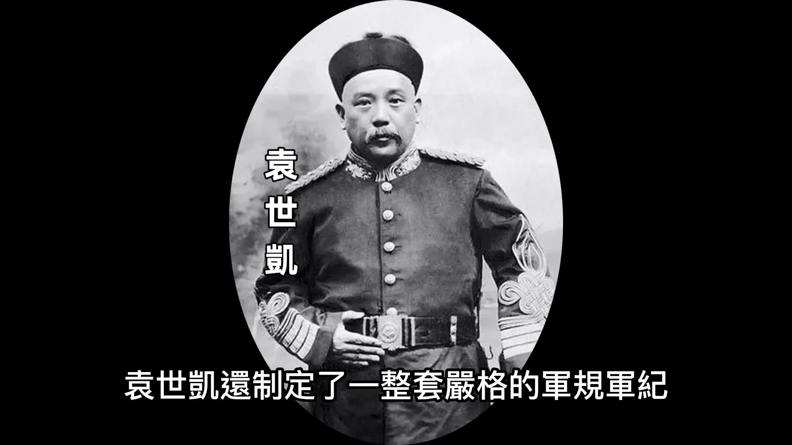
袁世凱制定了一整套嚴格的軍規軍紀，練兵過程中的體罰措施極為嚴酷。逃亡士兵按規定將被處以死刑；相關軍官亦會受到嚴厲處罰。不過，對於訓練表現突出者，獎勵同樣豐厚。
袁世凱非常重視軍官與士兵的教育工作，在小站創建多個隨營學堂，如炮兵學堂、步兵學堂和德文學堂等，培養出大批人才。他認為練兵雖看似複雜，其實要點是讓士兵做到絕對服從命令：「有官有錢」則服從；不服從則受罰。袁世凱對軍紀的執行毫無手軟，確保了新建陸軍的高度統一和效率。
00:35:00
袁世凱對於小站新軍投注了大量的心血，僅短短幾年，這支新軍便初具規模。1896年，兵部尚書榮祿視察了這支部隊並予以高度評價；翌年十月，英國海軍司令貝思福對新建陸軍進行考察時，亦給予極高的讚賞，他稱袁世凱訓練的這支軍隊是「中國最有名望之兵」，按照西方標準來看，這是整個帝國中唯一裝備完整的部隊。
從1895年12月到1899年12月的四年間，袁世凱在小站練出了七千人規模的新建陸軍，這支軍隊雖名義上屬於清朝，但實質上是袁世凱個人影響力下的產物。他不僅注重官兵訓練，更著眼於形成自己的班底——「小站班底」。這個班底由文武兩部分組成，其中包括文職官員徐世昌、田文烈、阮忠樞等；武職幹部則有段祺瑞、馮國璋、曹錕、陸建章、段芝貴、張勳等人。
唐紹儀雖然並非小站時期班底成員，但他也是袁世凱北洋集團的重要力量。這一群體因為袁世凱的領導魅力和個人籠絡而形成了極強的凝聚力。袁世凱在對待班底成員時，會根據不同情況使用親情友誼、物質利益或官職晉升等方法來維持這種忠誠關係。
例如，袁靜雪曾經講述過一個故事：小站班底阮忠樞在天津的一家妓院認識了一位妓女。當阮忠樞徵求袁世凱的意見時，袁世凱表面上否決了這項請求，說這樣有礙軍隊榮譽；但背地裏卻暗中安排將這個妓女贖身並做好迎娶準備，幫助阮忠樞圓滿解決此事。這種細心之舉讓阮忠樞對袁世凱的感激之情油然而生，成為他效忠的重要原因之一。
在此期間，小站班底與袁世凱形成了非常親密的關係；另一方面，隨著袁世凱就任山東巡撫及直隸總督後，利用各種機會提拔小站班底成員至各級官職。這使得許多小站班底成員逐漸成為清末民初政治舞台上不可或缺的人物。
在袁世凱全心致力於小站練兵的同時，清朝政局風雲變幻，戊戌變法開始了。1898年6月16日，光緒皇帝召見康有為並任命他為總理衙門章京籌備變法事宜。當時，實際上所有權力仍握於慈禧太后手中，因此對於光緒的改革計劃，慈禧起初默許。然而，戊戌變法的目的雖然美好——將西方政體引入中國——但由於光緒和康有為的政治素養及經驗尚淺，他們的舉措顯得相當草率。
在短短103天內，二人共發佈了200多道改革相關聖旨。這種密集型的改革措施，在偌大國度實行起來自然會遇到各種困難和阻力。例如廢除科舉制度便引發了全國學子的強烈抗議；裁撤冗餘機構則得罪了不少官員，尤其是滿人官員；這些都導致變法無法順利推進，朝廷上下怨聲載道。
康有為甚至提出遷都、剪辮等建議，這更是激起了滿人的極大反感。戊戌變法終歸以失敗告終。
00:40:01
譚嗣同所提出的想法非常激進，他建議將新疆、西藏分別割讓給俄國及英國，並將賣地所得的錢款用於支付甲午戰爭的欠款以及推動經濟改革。他甚至認為蒙古和青海也應考慮出售以籌措變法資金，理由是這些地區對國家沒有實質性的益處。在此期間，日本前首相伊藤博文來到中國，康有為變法面臨阻力時曾向光緒帝建議聘用伊藤博文作為改革顧問。伊藤博文建議中國改革方向應為“英、美、中、日四國共管”，此舉將使中國軍事、財稅及外交權力落入外人之手，實質上是剝奪國家主權。
隨著變法深入，慈禧太后終於無法坐視不管，在1898年9月19日從頤和園返回紫禁城發動政變終止了戊戌變法。在此次變法過程中，袁世凱起初贊成改革，並於1895年向光緒帝提出自己的改革方案；同年康有為在北京成立強學會時，袁世凱亦加入並資助該組織，這被視為康有為拉攏軍隊的策略。
變法初期，袁世凱遠離北京中央政府，因此並未直接參與其中；翁同龢被罷免後，直隸總督由榮祿代理，榮祿至天津就職，這使得當地軍事指揮權落入慈禧信任之人手中。
在這一背景下，袁世凱成為榮祿的手下，而兩人關係密切，因此袁世凱更傾向於與慈禧的代言人合作，而非康有為及其改革陣營。隨著變法衝突升級，光緒帝希望拉攏袁世凱加入其行列，1898年9月16日召見他並授予新職務；兩天後榮祿電令袁世凱速返天津，當晚譚嗣同來訪袁世凱寓所法華寺。據《袁世凱日記》記載，譚嗣同向袁世凱透露慈禧聯手榮祿欲廢黜光緒帝，並鼓勵袁起兵勤王；9月20日再次召見後，袁回到天津，有人認為他將政變消息告知榮祿導致康有為等人失敗。
然而，對於袁世凱是否告密一事存有爭議。如若袁世凱告密，作為勸說劫持或謀害慈禧的譚嗣同必然遭受嚴厲懲罰，但上諭中僅要求捉拿康有為與其弟康廣仁，並未涉及譚嗣同；再者考慮時間與技術條件，袁世凱9月20日抵達天津已是夜晚，難以立刻將消息傳至北京。
根據後來學者的考證，實際上9月21日晚袁世凱得知楊崇伊從北京帶來政變消息後告知榮祿，其非主動告密而是為了自保免遭牽連；隨著慈禧陸續抓捕犯人，袁世凱向榮祿報告可能提供了確鑿證據。在這場政變風波中，袁世凱雖然沒有直接參與卻因握有兵權而置身於慈禧與光緒帝的矛盾中心。
00:45:02
袁世凱在一個關鍵時刻面臨著重大的選擇，他必須在慈禧太后與朝廷上下之間找到平衡。主動告密固然能討好慈禧，卻可能失去其他人的支持；相反，在事件發生後再報告則是明哲保身的做法，這在他當時的情況下可能是最優的解決方案。此舉既顯示了他的智謀，也為他贏得了進一步被重用的機會。
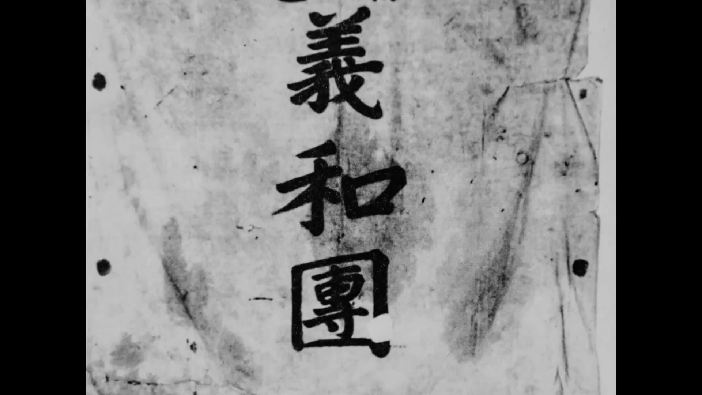
1899年，在山東出現了一個叫義和拳的民間組織。他們以「滅洋」作為口號，開始在當地殺害外國人並燒毀教堂。起初，這個組織只是由於中國百姓與洋人及教會之間的衝突而興起，但很快地演變成為一個專門針對外國人的團體。
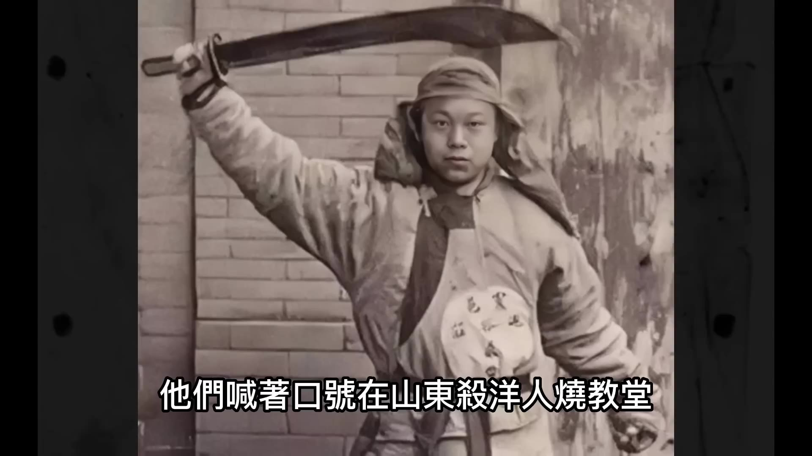
隨著組織的形成，義和拳害怕官府打壓他們，因此改換了旗號，將其口號調整為「扶清滅洋」。這個改變表明了他們不是一般的農民起義，而是支持清朝的反對外國勢力的運動。
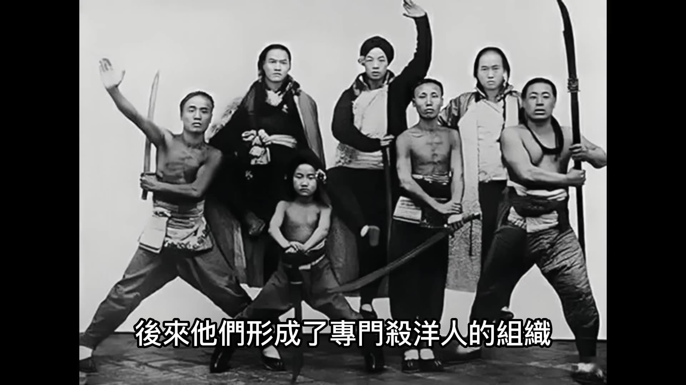
此時的山東地區處於複雜的地緣政治環境中，德國剛佔領了膠州灣，日本和英國也在虎視眈眈。山東巡撫毓賢對洋人持負面態度，在一定程度上縱容義和拳，希望利用這些組織來對抗外國勢力。
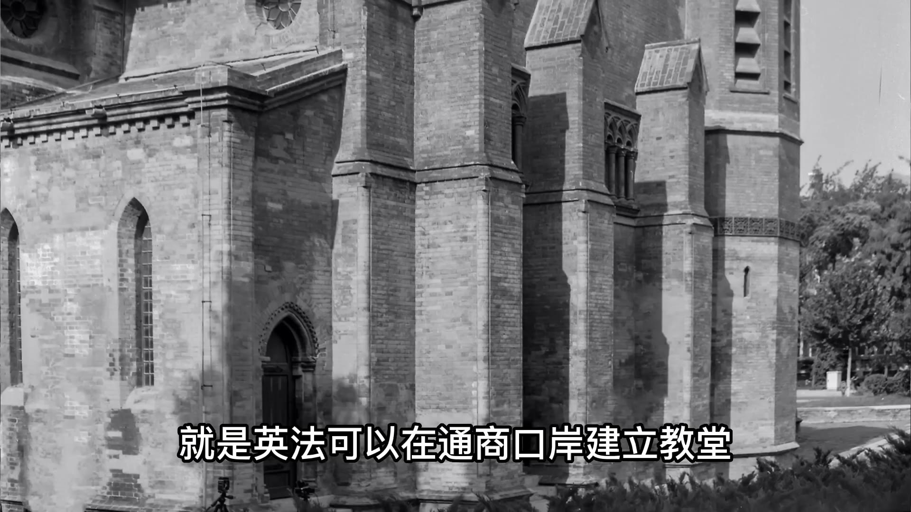
義和拳的興起與教案的頻繁發生有關。自從鴉片戰爭後，清廷被迫簽訂條約，允許英法兩國在其通商口岸建立教堂並提供保護，這引發了中國百姓對外國傳教士及基督教教民的強烈反彈。
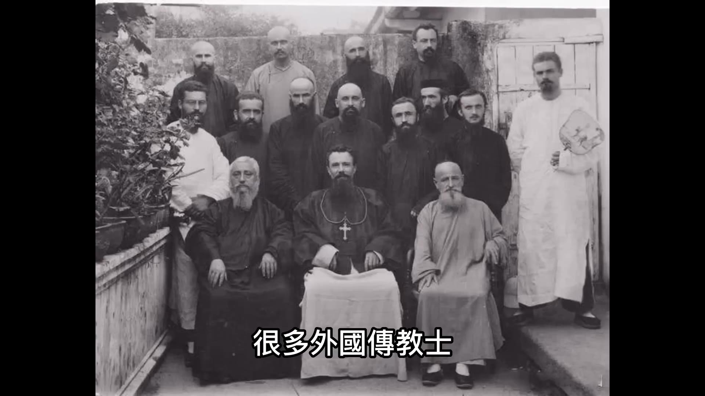
此後，大量外國傳教士開始到中國各地進行傳教活動。由於英法兩國享有治外法權，他們在華犯罪可以由自己人審理，且其底下的信教民也享有一定的特殊地位。
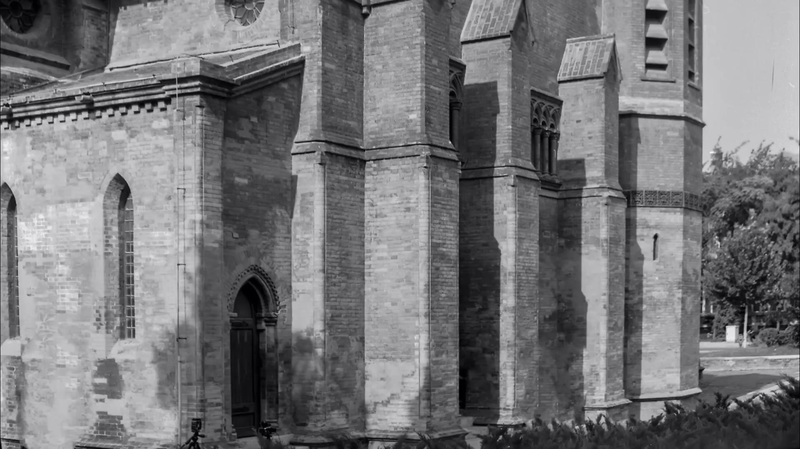
西方宗教的教義與中國傳統文化存在著巨大的差異，在傳播過程中不斷產生衝突。由於雙方缺乏理解，這些矛盾導致了許多地方性衝突和暴力事件，當地官員難以妥善處理。
這就是教案的由來：從1840年鴉片戰爭到1900年的庚子國難間，中國共發生了400多件教案。一般而言，這些教案是由一些情緒激動的老百姓一哄而起，沒有組織形式；然而山東這次義和拳事件不同，它有明確的組織形態。
由於毓賢對義和團的縱容態度，這些組織很快地變得無法控制。他們開始從燒教堂殺洋人到反對一切與外國有關的事物。隨著時間推移，他們將所有跟洋人相關的人或事物都視作敵人並加以摧毀。
義和團為什麼能迅速吸引大量群眾支持？其中一個重要因素是其強烈的迷信色彩，底層老百姓很容易接受這些觀念，例如他們宣稱天不下雨土地乾旱都是因為教堂的緣故。因此，義和團不僅反對外國人，還要把各地所有的神仙請來幫助打擊洋人。
00:50:00
隨著義和團運動規模擴大，洋人表示極度不滿。1899年冬天，美國公使康格向北京總理衙門連續抗議，要求清政府撤職毓賢，當時總理衙門不敢得罪康格，奏請太后把毓賢撤職。

隨後朝廷命令袁世凱接任山東巡撫一職。當時的袁世凱還在天津小站練兵，在戊戌變法之後，慈禧太后命京津一帶的四支陸軍歸榮祿節制，這四支部隊分別為宋慶率領的毅軍、董福祥率領的甘軍、聶士成率領的武毅軍及袁世凱率領的新建陸軍。榮祿為了使各軍連貫，設立了武衛軍，由榮祿擔任總統職務，並指派各軍名號與駐地：宋慶軍為武衛左軍、董福祥軍為武衛後軍、聶士成軍為武衛前軍及袁世凱軍為武衛右軍。榮祿另組建一支武衛中軍由他親自管轄，如此一來袁世凱的新建陸軍即改名為武衛右軍。
當袁世凱出任山東巡撫時，他也把自己的武衛右軍移駐山東。此時的山東並不太平，內有義和團運動，外有德國虎視眈眈。1897年德國出兵佔領膠州灣，隨後與清廷簽訂租借條約，1899年德國更進一步滲透至山東内陆，頻繁侵擾日照、忻州等地。為應對這次德國入侵的危機，清廷派袁世凱率軍前往山東，名義上是鎮壓匪類與保護教民，實際則是以遏制德國進犯內地為主。
當袁世凱抵達山東後，首先進行了當地原有勇營的整頓工作。原有的34隊勇營已經腐朽不堪，他裁掉一部分，留下了可用的20營，再編練出一支新軍，命名為武衛右軍先鋒隊。此時的袁世凱已擁有武衛右軍及武衛右軍先鋒隊兩支軍事力量。
為了抵抗外敵進犯，袁世凱建立了嚴密的防禦體系。德國以膠州灣為基地，設立了德軍總部和行政機關，而袁世凱將遏制德國的重點放在青州，調撥步兵及炮兵5隊駐紮在濰縣、馬兵與步兵各一隊駐紮高密，步兵兩營則駐紮在忻州下屬的莒縣以控制日照。他更把武衛右軍先鋒隊部署於濟南附近作為接應四方的機動部隊。袁世凱的佈防體系彼此間可以相互聯絡、聲援，有效地遏制了德國進一步進犯的所有路線。
在袁世凱出任山東巡撫期間，德軍未對山東採取進一步軍事行動，其駐軍及布防起到了相當大的震懾作用。另一方面，在處理義和團運動方面，袁世凱面臨選擇：是剿還是撫？他認為無論剿或撫都僅治標而非治本，解決問題的根源在於清廷無法公平公正地處理教案導致矛盾擴大。因此，他提出解決方法為地方政府頒布政令，明確主張審理案件時只分是非曲直而不區分教民與百姓，並且堅決不允許外國傳教士干預清廷訴訟過程。
袁世凱據此原則處理了幾個案件，在面對洋人袒護教民的情況下他堅持獨立審理的原則。他在朝鮮時已長期與西方各國領事打交道，因此懂得外交技巧，不屈服也不盲目反抗外國壓力，而是有禮有力地進行鬥爭，最終根據約章辦理案件，成功解決了山東地區的教案。
對於義和團，袁世凱並不迷信他們所謂的刀槍不入，認為利用其震攝外國勢力是無稽之談，應當予以剿滅。然而此時清廷上層經過反覆猶豫後，在1900年6月之前傾向於剿撫兼施，而到了6月之後則轉變為以撫為主，甚至將義和團改編為官團。
毓賢在出任山東巡撫時的政策走向也引發了進一步的變化。
00:55:02
也是剿撫兼施，但是他是以撫為主，比較符合朝廷上層的意思。袁世凱跟毓賢不一樣，他有自己的判斷。在六月份之前，袁世凱服從朝廷的意圖，採取剿撫兼施，不過實際上是以剿為主，只不過下手較輕，主要抓匪首逼迫義和團解散或者流竄。到了六月以後，袁世凱的做法完全與朝廷背道而馳，他堅決鎮壓義和團。袁世凱為什麼會這樣選擇呢？因為他認為如果縱容義和團發展下去，整個山東都會糜爛下去。雖然京城的決策是利用義和團殺洋人，但袁世凱認為這是非常不明智的做法，所以他堅持自己的做法，強力鎮壓。
在袁世凱的強力鎮壓下，義和團在山東很快就難以立足，逃竄到了直隸地區，最後進入了北京。對於袁世凱的做法，在當時的人對他的評價也有很多不同的聲音。第一個階段是他利用新式軍隊強力鎮壓義和團的時候，遭受到了義和團的強烈仇恨，在山東流行著「殺了原鱉蛋我們好吃飯」的諺語；但是當他把義和團鎮壓下去之後，山東很快就恢復安寧了，也有很多人稱贊袁世凱的做法。尤其是當義和團進入直隸以後，天津、河北、北京都遭受到了極大的破壞。當八國聯軍開始進攻天津北京後，戰爭一開更是民不聊生，很多北京天津的官紳都到濟南來避難，濟南簡直就是當時的人間樂土。山東的經濟也增長了很多，這時候贊美袁世凱保護一方的人就更多了。
在當時跟袁世凱處於同樣境地的有兩個官員：一個是直隸總督裕祿；另外一個是山西巡撫毓賢。裕祿聽從朝廷的命令對義和團進行先剿後撫，可是到了後來他完全控制不了天津的局面，當八國聯軍入侵的時候他又奉命聯合義和團反抗聯軍結果戰敗自殺。另一個是山西巡撫毓賢，在從山東巡撫調職之後又出任了山西巡撫，他在山西同樣支持義和團殺洋人，在戰後毓賢被八國聯軍指控為禍首結果被處死。
袁世凱的選擇不僅保存了山東也保護了他自己。成成變法結束後，光緒皇帝被慈禧軟禁，由於西方列強是支持維新變法的，他們的態度都站在光緒一邊，甚至還幫助康有為和梁啓超逃亡到海外。慈禧對洋人痛恨不已，當康有為在海外宣稱自己有光緒皇帝的密詔時，這更使得慈禧要廢掉光緒。1900年1月，慈禧做出了廢掉光緒的準備，她將端至的兒子溥儁過繼給同治皇帝，溥儁成為了大阿哥，隨時準備登基當皇帝。當時列強們一致反對並拒絕入賀，這更加深了慈禧對洋人的怨念。這時朝廷的大臣們也有很多反對廢立皇帝的聲音，朝堂上的聲音並不一致。
端郡王載漪為了讓自己的兒子能當上皇帝，在暗中努力要幫慈禧掃清洋人帶來的障礙，他說可以借助義和團的力量來抵抗洋人。載漪聯合了敦親玆載濂、端親王載勳、輔國公載瀾、吏部尚書剛毅他們不斷地跟慈禧訴說義和團的勇猛，說應該扶持義和團消滅洋人；但是當時慈禧的寵臣榮祿並不看好義和團。榮祿本來是屬於保守派，但是他對扶持義和團持反對意見，而當時慈禧做決定基本上都會徵詢榮祿的意見，也正是因為榮祿的存在，在義和團初期到底應該是剿還是撫，慈禧態度一直搖擺不定十分猶豫。
到袁世凱接任山東之後，山東的義和團迅速被撲滅，義和團的拳眾開始向北逃竄進入直隸。直隸總督裕祿對於應該是剿還是應當是撫也拿不定主意，後來他看出端王、莊王等聯合起來要利用義和團，他也變成了支持義和團。在這之後大量的義和團拳民開始湧入直隸，拳民們一路上畫符念咒，燒教堂殺洋人毀鐵路拔電線亂成一片。到了六月份義和團有數萬人開始從四面八方湧入北京城。
北京東交民巷的列強公使們也開始調兵遣將各自向自己的國家申請派兵保護，在這時候的慈禧是戰還是和還是猶豫不定的。 6月17日，天津的大沽炮台已經被聯軍攻陷了，戰爭實際上已經開始了；6月21日，慈禧太后以光緒皇帝的名義發佈了《宣戰詔書》，正式向列強宣戰。雖然宣戰，但慈禧還是留有了後路，她派清軍去圍攻東交民巷的使館區不讓頤和團攻打；而她派出的清軍沒有真的進攻，只是裝裝樣子打了50天，使館區還是安然無恙，這為後來的和談打下了基礎。8月14日，聯軍攻入北京，慈禧太后西逃。
01:00:02
當慈禧發佈的宣戰詔書下達各地時，鐵路大臣盛宣懷命令電信局扣押詔書僅供地方督府觀看。此時的兩江總督劉坤一、湖廣總督張之洞和兩廣總督李鴻章等不願支持清廷，李鴻章回覆電報稱“亂命”，拒絕承認宣戰詔書的有效性。他給出的理由是太后與皇帝被拳匪劫持，這份詔書為假。隨後張之洞提出若光緒皇帝和慈禧太后不再保全，應改制共和，推薦李鴻章出任大總統主持大局。

6月26日，東南各省與列強各參戰國達成和平協議，史稱“東南互保”。這次協議雖穩定了東南地區，卻讓列強看到中國內部的不團結，更加囂張起來。這也是清朝首次出現地方聯合抵制中央行動的情況，成為近代軍閥興起的一個標誌。
山東本來不在東南之列，但袁世凱見清廷對列強宣戰無力回天，便決定自保加入“東南互保”。當清廷命令他帶兵北上時，他表面上遵從卻以保護海防為由不派出主力部隊，僅派三千非主力軍北上，且行軍緩慢至天津陷落都未抵達戰場。袁世凱還主動將這支部隊送往北京，並在慈禧西逃到太原時送去了30萬兩現銀及大量生活用品，博得慈禧的讚賞。
當李鴻章與列強簽訂《辛丑條約》後，慈禧再次掌握權力回到紫禁城。此時袁世凱更倒向了慈禧。由於庚子國變中榮祿的武衛軍被削弱，唯有袁世凱的武衛右軍得以保存，使慈禧不得不依靠袁世凱，遂提拔他為直隸總督、北洋大臣。
關於慈禧宣戰的原因，史學家們至今未有定論。有人認為是她收到了一份列強要求讓光緒復權的假情報，令其決心一戰；也有可能是被逼到絕境才不得不戰鬥，以證明自己尚有實力掌控朝政。慈禧對於義和團的态度一直猶豫不決，在6月17日大沽炮台失陷後，她始終沒有下定決心解散義和團，最終只選擇震懾西方列強並準備自行解決問題。
01:05:00
慈禧在義和團事變後面對列強軍隊時並未想過靠議和團打敗他們，但在解散義和團的時機上出現了誤判，導致東南互保等事件發生，清政府可用軍隊大量減少。這一失誤讓她最終無法控制局面，也說明慈禧最後的掙扎失敗了。即使在簽訂《辛丑條約》後重新回到紫禁城，這時的清政府已經變成了列強手中的傀儡。
關於清朝滅亡的故事版本很多，最為人熟知的是革命黨發動武昌起義，隨後南北和談，最後袁世凱迫使清廷退位。然而歷史細節表明，武昌起義雖然打響了革命的第一槍，但真正奠定成功基礎的卻是其後兩個月內有14個省先後宣佈獨立。這背後的原因與清朝最後十年進行的新政改革有關。
庚子事變期間，慈禧逃至西安，面對西方國家施壓，深感若不改革將難以生存，因此在西安時便已開始籌劃政治改革。1901年1月29日，在西安的慈禧以光緒皇帝的名義頒布上諭，宣布全面改革清政府體制、吏治民生、學校科舉軍政財政等多個領域。為落實新政，督辦政務處成立，由慶親王奕劻、李鴻章等人擔任大臣。各地督府被要求提交改革建議，袁世凱率先上書，他在山東巡撫任內已開始推行新政的嘗試，創立了山東大學堂和商務總局，並派人前往日本學習發行貨幣知識。
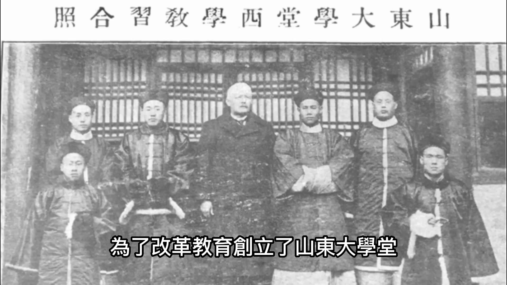
在慈禧定下改革基調後，全國各省陸續展開改革嘗試。其中袁世凱在直隸的改革成效最為顯著，從1901年到1906年的六年间，在吏治整頓、實業興辦、交通發展和司法改良方面取得了不錯的效果，並與湖廣總督張之洞共同推動了科舉制度改革及新式學校創建，還建立了中國第一支警察隊伍。

庚子事變後西方列強要求天津周邊不得駐軍，袁世凱上任直隸總督便面臨這一難題。他效仿西方國家設立了天津巡警總局，選拔3000名新軍接受趙秉鈞帶領的短期警察訓練並進駐天津城，既保護天津免受外敵威脅又維持了社會秩序穩定。這支警察隊伍的成功經驗被清廷推廣到全國，1905年中央機關設立巡警部。
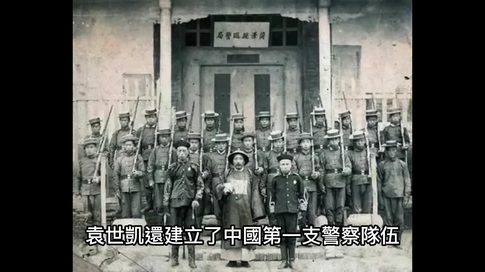
在鐵路和礦產權問題上袁世凱也展現了積極態度。1902年他受命為督辦關內外鐵路大臣，通過外交手段收回了鐵路的所有權；對開平煤礦的事件他也介入處理，在聽聞該煤礦被英國人騙取所有權一事後，袁世凱上任直隸總督不久便開始調查並解決這一問題。

開平煤礦由李鴻章和實業家唐廷樞創辦，在張翼接手後由於其管理不善而被英國人騙走所有權。袁世凱得知此事後介入並解決了這一問題。
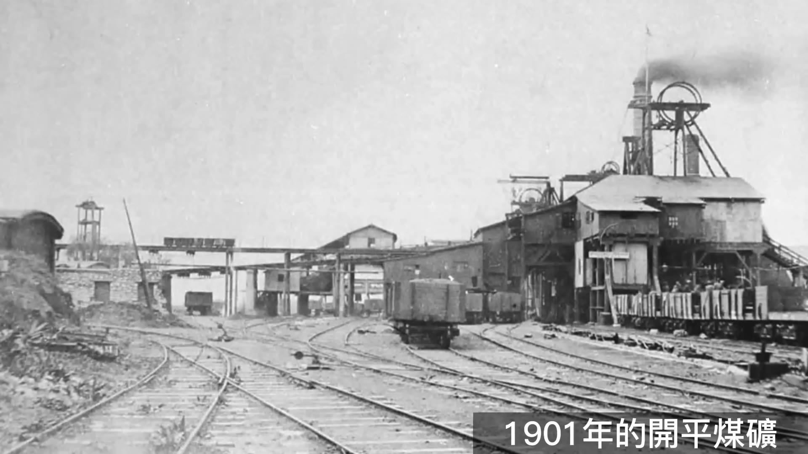
這些新政改革雖然在一定程度上穩固了清朝的根基，但未能完全挽救其滅亡的命运。
01:10:00
袁世凱召見張翼，詳細瞭解了1901年開平煤礦事件的經過。他對於張翼賣國的行為感到震驚並深感憤怒。隨即，袁世凱向朝廷彈劾張翼。在袁世凱的步步緊逼下，張翼被迫前往倫敦進行法律訴訟。在此期間，袁世凱一方面通過商務部與英國人進行交涉，另一方面指派張翼出庭對質法庭。從1902年到1906年的四年間官司不斷，此間袁世凱多次上奏彈劾張翼達八九次之多。由於英國政府的支持，法律手段始終未能取得成效。最後，袁世凱採取其他方法，在開平附近創建了灤州煤礦以壓制英方公司的利益，最終迫使英國公司妥協。

開平煤礦與灤州煤礦合併，組成了灤開礦務局，終使中國收回了開平煤礦主權。為了追回國有資產，袁世凱不遺餘力地奮鬥，這種精神甚至贏得了英國人的贊美。
在北洋時期，袁世凱興辦新政的成績成為全國學習的榜樣，他也因此成為推動改革的核心人物。當時清廷最重視的是軍隊改革，而最有資格擔任練兵大臣者唯有袁世凱。從1902年到1905年，袁世凱以武衛前軍為基礎創建了北洋常備軍，共完成了六鎮的編練工作。
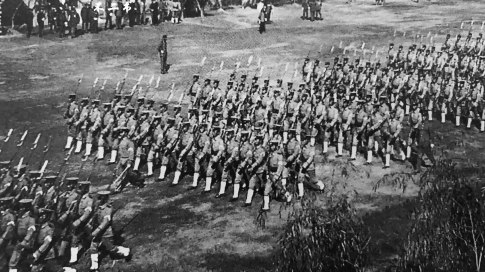
在這六鎮中，其餘五鎮的核心軍官都是袁世凱的小站班底。除此之外，他還創設了多個軍事學堂，如北洋陸軍武備學堂、行營將弁學堂及陸軍師範學堂等共計十餘所，這些學校培養出清末新軍的各級軍官，成為袁世凱門下的重要力量。1904年，清政府提出了全國擴編三十六鎮新軍計劃，希望淘汰舊軍並逐步替換為新軍。
在這個背景下，北洋六鎮由最初的七千人擴充到八九萬人的規模，標誌着北洋軍閥正式形成。然而，與此同時，清政府因經費不足未能完成全國三十六鎮的編練計劃，在清朝覆滅前，僅完成十一個鎮和十六協的新軍編練。此時期袁世凱不僅擁有強大的軍事實力，其政治地位亦日益攀升。

然而，隨著清廷改革的深入，觸動了滿清權貴的核心利益，袁世凱在官場上的地位開始發生轉變。1906年陸軍部成立後，袁世凱交出了四個鎮的兵權並辭去參預政務等職務；翌年又被免去了直隸總督兼北洋大臣之職，改任外務部尚書、軍機大臣。他從官場頂峰滑落的原因，在於清廷的新政改革其實是對利益重新分配的過程。例如在1904-1905年的日俄戰爭中，倡導君主立憲制度的日本擊敗了沙俄，促使中國國內要求政治體制變革的呼聲更為強烈。若清廷能轉型至君主立憲制度，將對國家發展產生積極影響。
新政的推行雖在表面看來是政體改革，但實際上卻涉及到了當權者的利益重劃問題，這成為袁世凱遭遇人生重大危機的重要原因之一。
01:15:00
在這個時期，改革開始触及到滿清權貴的核心利益。君主立憲最大的變革是通過憲政約束君主的無限權力，這顯然會對擁有最高權力的慈禧太后及其手下的滿清權貴形成挑戰。此外，還涉及到漢人官員和官紳階級的利益。
首先從慈禧太后來看，她確實認識到變革迫在眉睫，但若改革涉及讓出部分利益，則總比被革命乃至清朝滅亡要好。當年日本君主立憲的成功也給了她一定的啟示，因此她在西安發佈《變法上諭》，將維新變法的綱領重新拿回自己手中施行。
有了慈禧的支持，袁世凱更為大膽地改革政體。他撤銷了內閣軍機處以及吏部、禮部和督察院等機構，改組成立新的資政院及行政裁判院、集賢院、大理院、審計院等一系列新機構，並用責任內閣取代了軍機處，這對中央權力構成了一次重大突破。這種轉變直接削減了一些軍機大臣的權力，引起了鐵良榮慶等人的強烈反彈。
在一次會議中，醇親王載灃甚至拔出手槍抵住袁世凱胸口，幸好經李鴻章調解才沒有進一步衝突。這反映出即便面對國家存亡之際，滿清貴族仍以自身利益為先。不僅滿清權貴反對官制變革，連朝中一些漢族大臣也因自身利益而不滿袁世凱的改革措施。
慈禧同樣面臨著困境：如果選擇繼續強推改革，必然會得罪整個滿清權貴集團，而這正是支撐她統治的重要基礎；若停止改革則意味著面臨革命與亡國。面對這種難題，慈禧只能暫時拖延解決。
此過程中袁世凱成為主要攻擊對象。在慈禧去世前一年的1908年11月15日，掌權長達47年的她與光緒皇帝一起離世，並指定只有兩歲的溥儀為繼承人，其父醇親王載灃出任攝政王。
袁世凱此時失去了慈禧的支持。在新攝政王上台後立即發起權力鬥爭，於1909年1月2日免去袁世凱所有實權。從22歲參軍開始苦心經營的27年時間一朝化為烏有。
面對這場鬥爭，載灃希望通過削弱袁世凱來鞏固自己的地位。然而袁世凱在軍機大臣中擁有強大的支持者如奕劻、世績與那桐等，在地方督撫中也有像端方這樣的支持力量。此外袁世凱多年培養的部下遍布全國各省要職，這些人都是他權力基礎的一部分。
儘管載灃本想殺掉袁世凱以絕後患，但由於各方反對而無法實現，最終只能通過發佈「足疾」命令來將其罷官免職。這是一種皇權體制下的妥協，亦是袁世凱自身的選擇——如果不妥協就必須造反。
總而言之，在此變革時期，無論是慈禧太后還是袁世凱都不得不在維持現狀與推動改革之間尋求平衡。
01:20:00
目前顯然還不到造反的時候，袁世凱選擇了妥協等待時機。在袁世凱被排擠出京城之後，他的支持者一個個被清除：楊士驤當年去世；端方接任直隸總督郵傳部尚書陳壁被革職；徐世昌內調郵傳部尚書；東三省總督由錫良接替；黑龍江布政使倪嗣衝被查辦；民政部侍郎趙秉鈞被斥責；載灃接管警務；王士珍自請離職等等。表面上看，這是載灃和袁世凱的鬥爭，實際上是以載灃為首的皇族親貴派與老當權派的權力之爭。載灃在主政之前並沒有自己的班底，所能接觸到並信任的是載潯、載澤、善耆、載濤等人。這些人不管有無才幹都迅速地結集在了載灃周圍，形成一個新的皇族親貴集團。他們要獲得權力必須打壓當時的當權派——以慶親王奕劻和袁世凱為首的老一輩當權派。這已經不是滿漢之爭，而是載灃這一派親顯貴與那一派老當權派親顯貴的奪權之争。正如溥儀後來所說：「殺袁世凱和保袁世凱的問題早已不是什麼維新與守舊、帝黨和後黨之爭，也不是滿漢顯貴之爭，而是這一伙親顯貴和那一伙親顯貴的奪權之爭」。

經過兩年的鬥爭，載灃看似大獲全勝，但在地方與軍隊中早已不是他能動搖得了的。袁世凱在家裡也並沒有閒著，通過手中的關係網時刻獲知朝廷的動向，在蟄伏中等待時機成熟。1911年10月10日辛亥革命爆發了，袁世凱等待的時機終於到來。
武昌起義的消息傳到北京之後，載灃命令陸軍大臣蔭昌率領北洋軍前往平叛，但當軍隊抵達湖北孝感後卻拖延不前。袁世凱在北洋軍中的關係網發揮了作用：蔭昌根本指揮不了北洋軍，看到這種情況，此時的朝堂上奕劻、那桐等都強烈主張起用袁世凱而載灃當然不想讓袁世凱崛起。另一方面，西方列強都對武昌革命非常關心，他們不希望中國發生大規模內戰影響到自身的既得利益；尤其是貸款給清政府的美英德法四國銀行，當他們看到北洋軍拖延不前的情況後也希望盡快起用袁世凱。在內外兼施的壓力之下載灃別無選擇只能重新起用袁世凱。
10月14日，清廷降旨起用袁世凱為湖廣總督、督辦剿撫事宜。對湖廣總督這個職位袁世凱顯然是不滿意的：湖北現在已經落入革命軍手中，湖北的新軍都在鬧革命根本調動不了；要用北洋軍還只能和蔭昌協同調遣，在前線兵權統一無從談起，這仗根本無法打。袁世凱跟清廷開始論述條件，最後清廷妥協滿足了他的要求。10月27日，袁世凯被任命為欽差大臣督辦一切軍務，直接奔赴前線並任命馮國璋為第一軍總統立即對湖北革命軍展開攻勢；北洋軍在一天之內就將漢口奪回。
在武昌城下，袁世凱下令放緩進攻。他時刻都在關注局勢的變化，不斷調整自己的策略：武昌雖然很容易就能打下來，但隨著武昌首義短短兩個月內14個省相繼宣告獨立，袁世凱也改變了自己對革命軍的看法；一開始認為革命軍容易蕩平，現在看到清朝氣數已盡。而且西方列強也開始改變態度宣佈中立，袁世凱開始跟革命黨進行南北和談，在和談中革命黨承諾如果袁世凱能讓清朝皇帝退位就讓他擔任第一任大總統；袁世凯回到北京開始了逼迫清廷退位的操作。1912年2月12日隆裕太后臨朝頒布詔書宣佈溥儀皇帝退位，袁世凯以不流血的方式完成了中國2000多年封建帝制的終結；事成三天之後南京參議院信守諾言正式選舉袁世凱為臨時大總統。
在滿清王朝覆滅過程中我們要聊一個關鍵問題：武昌首義後，為什麼兩個月內就有14個省相繼獨立。這14個省的獨立是讓袁世凱轉變態度認為清朝氣數已盡的主要原因；這裡面有兩方面的因素：一是攝政王載灃不斷從漢人大臣手裡面奪取權力，慈禧主政時漢人官員掌握實權的局面逐漸被打破。
01:25:01
滿人無法完全專權，於是在庚子事變後對於漢人大臣採取讓步策略，包括對東南互保事件中的漢人官員予以承認和嘉勉。儘管這種明顯的背叛行為激怒了慈禧太后，但她深知如果不向漢人大臣讓利，清朝將面臨更嚴重的威脅。因此，她提拔袁世凱與東南各省漢人官員集團形成對立局勢，並在漢人官員之間進行制衡，使得搖搖欲墜的清王朝達成了一種微妙的平衡。
慈禧去世後，載灃打破這種平衡，不斷從漢人大臣手裡收回權力，包括奪取袁世凱的大權。這讓張之洞感到唇亡齒寒，儘管張與袁關係並不親近，在載灃要「殺」袁時，他極力反對。載灃的統治下，漢人官員人人自危，最大期待是改變政體為君主立憲。朝中和在野的立憲派呼聲都很高，力量也最強。主要支持立憲的是漢人大臣及士紳階級，這些人在當時清廷統治下已經獲利，希望通過立憲讓滿人再讓步利益；反對立憲的是革命黨，他們多為社會底層人士，沒有什麼既得利益，只有鬧革命才能重分利益。
對於滿清貴族而言，是否立憲一直猶豫不決。慈禧臨終前雖知需改革但最終未能決策，在其去世後載灃更是短視地於1911年5月8日組成皇族內閣。全國的立憲派等待多年，見此內閣由滿人主導（首屆內閣以慶親王奕劻為總理大臣，其中13名內閣成員中有8位滿人、1位蒙古人，漢人大臣僅4人），感到徹底失望，轉而支持革命黨。5個月後武昌首義爆發，各省紛紛宣佈獨立。
新軍成為革命黨推翻清朝的主要軍事力量。清廷組建新軍本為維護統治，但採用西化訓練方式，學習西方體系和思想，官兵不再是傳統武夫而成為知識化的現代軍人，多人被派赴國外留學（如8000名學生前往日本）。這種開明的訓練方式讓革命黨得以滲透新軍。隨著滿族對權力收回，新軍官兵仕途難以上升，意識到唯有通過政治或革命才能晉升，與革命黨人的利益一致開始推翻滿清政權。南方的新軍被革命黨滲透，北方的新軍在袁世凱控制下也脫離清廷掌控，使得革命爆發時清政府無力回天。
辛亥革命成功後，1912年1月1日孫中山被選舉為首任臨時大總統。
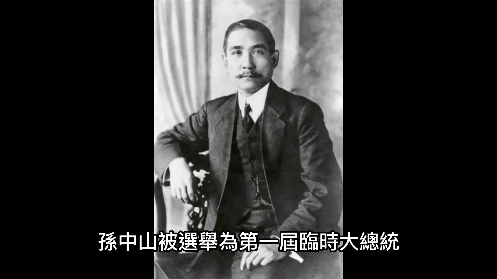
此大總統代表著中國不是改朝換代而是徹底改制，孫成為中華數千年來首位通過選舉產生的最高統治者，然而也是在位時間最短的一任（從宣誓就職到辭職僅45天），由臨時參議院全票選出袁世凱為第二任臨時大總統。
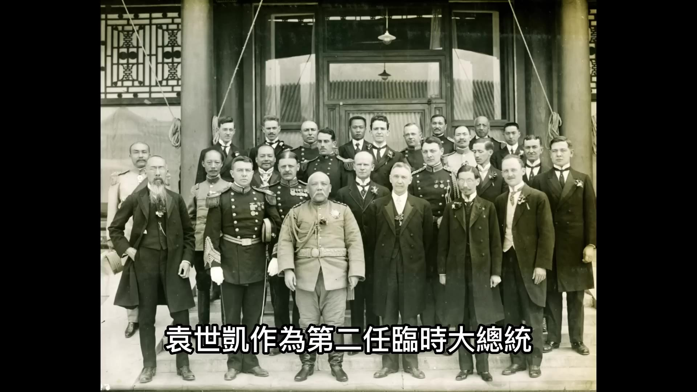
後人常說，孫中山率領的革命黨在十餘年間發動了十次起義都失敗，武昌首義終獲成功，卻被袁世凱通過陰謀手段篡奪大總統。然而，這是否真的如外界所言？此一問題有待進一步探討。
在後人講述的歷史中，很普遍的一種說法是孫中山率領的革命黨從1895年第一次廣州起義開始，在十多年的時間里一共發動了10次起義都失敗了。武昌首義是第11次起義終於成功了，結果卻被袁世凱通過陰謀手段篡取大總統的位置。這種說法認為袁世凱的大總統位置是靠不正當方式獲得的。然而真實情況是怎樣呢？這一期我們就來聊聊袁世凱為什麼能當上大總統，以解答這個問題。
01:30:01
我們需要深入了解辛亥革命的細節。首先來說武昌起義，這是湖北革命黨人發動的一次起義，在清朝末年，全國各地成立了很多革命組織，這些組織中比較大的有孫中山創立的興中會。
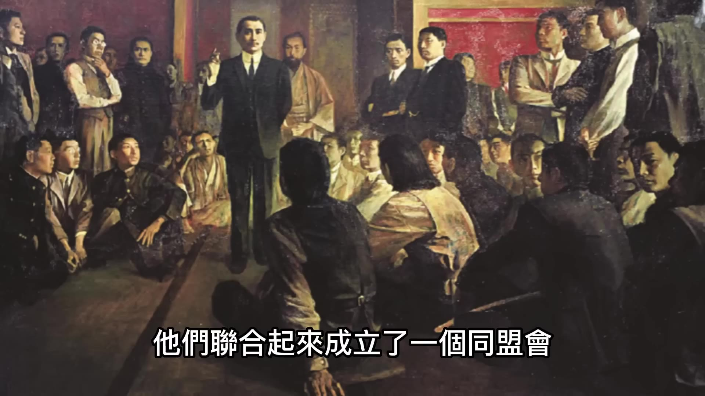
他們聯合起來成立了同盟會。**（1905年7月在日本）**
同盟會的主要領導人包括孫中山、黃興、宋教仁和蔡元培等人。成立後，中國國內幾次大的起義事件均由同盟會成員組織。經歷了多次失敗的起義，同盟會內部產生了不少矛盾甚至分裂，許多革命黨人對孫中山長期在南方發動起義表達不滿，於是長江流域的革命黨人在武漢成立了中國同盟會中部總會，並希望在浙江、湖南和湖北發動起義。其中，在湖北的分支組織為共進會，與當地新軍士兵組成的文學社一起策劃了武昌起義。
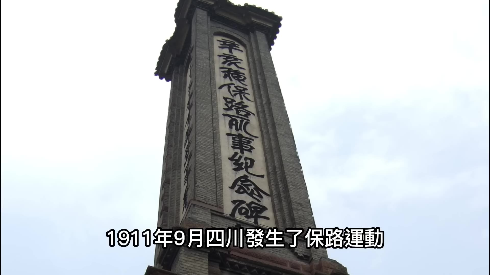
在此期間，四川發生了保路運動。**（清政府收歸國有化舉措引發）**
朝廷從湖北抽調部隊去鎮壓，這為革命黨人提供了時機。武昌起義的主要領導人分別是軍事總指揮講蔣翊武、軍務部長孫武和總理劉仲本。
原本計劃於10月16日發動的起義，在10月9日發生了一個意外的爆炸事件，革命黨人的根據地漢口俄租界寶善里裡面，孫武配製炸彈時不慎引發了爆炸。巡捕迅速趕到現場，革命黨人只得逃走，重要文件和資產全部被繳獲。
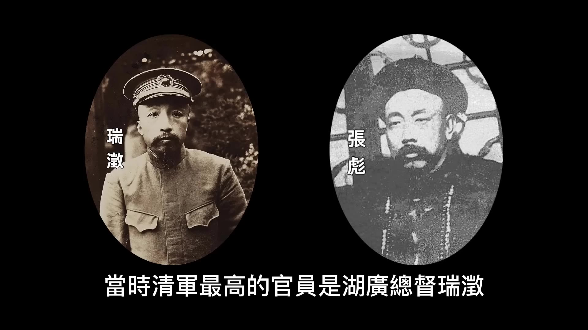
湖廣總督瑞澂根據花名冊開始抓捕革命黨人，劉仲文、孫武等人逃至漢口法租界。蔣翊武決定提前發動起義。當天有二十幾個革命黨人被捕，其中三人被處決並示眾，激起了新軍士兵的恐慌。
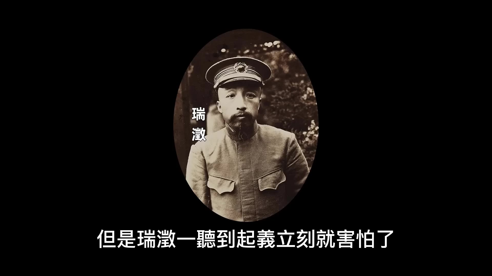
在這種氛圍下，許多士兵產生了鋌而走險的想法。10月10日晚間，在一個兵營小衝突爆發後，起義迅速蔓延開來。當時武漢的新軍總兵力約一萬一千人，但由於部分部隊被調往四川鎮壓保路運動，實力有所削弱。
瑞澂在獲知起義消息後即刻逃離武昌城，躲到了楚豫艦上，張彪則撤退到城外扎營等待朝廷救援。清軍的反應遲緩和指揮失當，讓起義迅速擴大並取得初步成功。
01:35:01
武昌起義時，清廷的最高指揮官一逃，那些未參與革命的部隊也紛紛瓦解。這場由士兵發動的暴動並沒有明確領導人，起初是由士兵中的小革命黨人如熊坤和被臨時推選為總指揮的吳兆麟帶領著。在當時一個極重視資歷、身份與地位的社會中，這樣的情況顯得格外尷尬——要想服眾，必須要有相應的革命或傳統資歷。
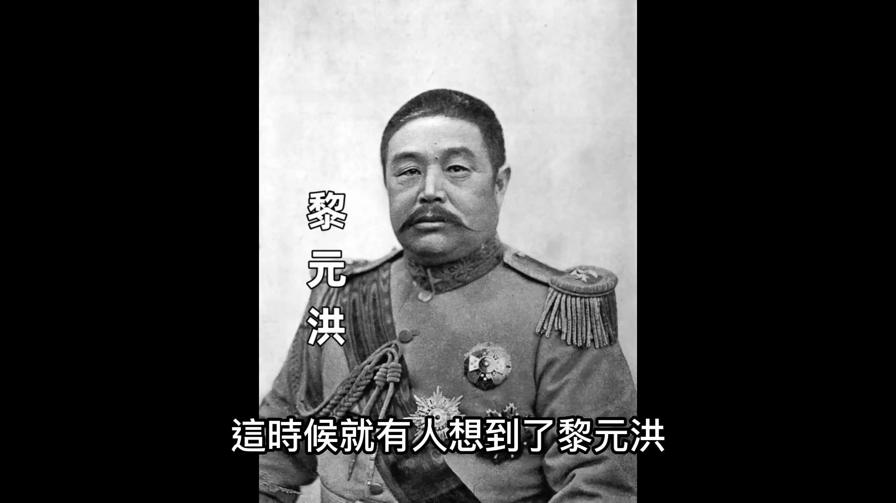
黎元洪以其新軍混成協統領的身份成為可以服眾的人選。他在軍中的人緣不錯，因此士兵們推舉他為領導人，但他起初並不願意造反，在起義發動時甚至帶兵鎮壓。但當情勢不利時，他也只能撤退並躲藏起來。
然而在逃亡中黎元洪發現革命黨人卻準備了以他的名義發布通電和文告，這讓原本不願參與的他不得不被迫加入新政府成為湖北都督。起初，人們稱他為「黎菩薩」，因為他每天一言不發、動也不動，似乎無所作為；但隨著革命形勢變化，黎元洪才真正接受了這一職位。
武昌起義後，維持城市秩序便成為一大挑戰。此時湯化龍的加入對維護武昌城內穩定發揮了重要作用。他是湖北諮議局議長，得到當地士紳和工商階級的支持，且與漢口西方領事關係良好。
武昌革命成功，很大程度上歸功於立憲派人士如湯化龍的協助。他們推動政府改革並在清廷倒行逆施時轉而支持革命，使城市秩序得以維持，並通過通電各省傳達起義消息，鼓勵各地響應，從而促使革命取得全國性的成功。
西方列強也對這種情況表示關注，因湯化龍等立憲派人士的存在，使得西方領事承認了革命軍的合法性，這對於清政府而言無疑是一大打擊。
01:40:02
數說了清朝政府倒行逆施的行為，使得許多人都加入了革命陣營。在湖北宣佈獨立之後，緊接著有14個省先後宣佈獨立。這14個省的獨立立憲派都起了重要作用，有一些省份如浙江甚至是立憲派主導的。立憲派人員的參與使得革命變得容易了很多也溫和了很多，因為他們最大的訴求就是在革命過程中減少對社會的破壞。由於他們本來就是地方工商教育界的頭面人物，當然希望維持穩定，在立憲派的遊說之下，很多地方的滿清官員都順從了革命，很少有反抗的情況。
實際上，從武昌起義的過程可以看出全國各地革命力量來自哪裡。武昌起義首先是革命黨發動的起義，然後是立憲派配合，最後還有滿清官員反正的支持。這其中包含三股主要的力量：第一股是革命黨；第二股是立憲派；第三股則是反正的滿清官員。革命黨有先進的思想，為革命做了很多宣傳和犧牲；而立憲派人代表民間民意，他們一開始推動改革卻遭逢挫折，在滿清權貴不斷收權的情況下，倒向了革命黨，如果沒有這些人支持，單靠革命黨的革命其實很難成功。
正是因為有了立憲派的參與，革命才能成功。湖北的民團實力就很強勁，他們自出錢雇用人員並自行購買武器來保衛地方。滿清官員中有的有威望，在武昌起義後，湖北都督一職多由黎元洪接任。這些人在被逼反清後，往往成為革命軍的領導人物，如黎元洪最初就不願反清但最終被迫接受最高領導人的位置，這樣的選擇在其他省份獨立過程中也頗為明智，可減少內部爭鬥與損傷。
武昌起義之後，全國共15個省宣佈獨立。這些新政府多由革命黨、立憲派及反正的滿清官員三股力量組成，如上海、雲南、福建和廣東等地方革命黨勢力較大；浙江、湖南等地則是以立憲派為主導；而江蘇等省份則是反正的滿清官員擔任都督。
此外，在這三股力量之外，還有一股力量就是幫會，包括洪門、哥佬會等等組織，這些幫會在初期革命中提供了重要的支持力量。由於農民起義往往對社會造成破壞性太強，因此革命黨人更多地尋求其他可行的力量，而幫會因其反清傳統和非法勾當與革命黨結成了共識。
01:45:01
這就使他們長期受到政府的壓迫，因此革命黨人一找到幫會動員，說要反清，很多幫會便一拍即合。在前期的起義中，大部分都是由革命黨利用幫會發動的。孫中山每次用幫會時，總是先在海外籌集資金，然後花錢雇請幫會的人購買武器，最後才發動他們去參加起義。然而，革命黨利用幫會發動的任何一次起義都沒有成功。幫會的最大問題是有組織無紀律，而且他們缺乏革命思想。後來革命黨人也意識到這個問題，開始轉向滲透新軍，在新軍中發展革命力量，最終武昌起義就是靠着新軍的力量成功的。
然而，當革命成功之後，之前革命黨人利用的幫會反而成為了他們的負擔。雖然幫會多次發動起義都未成功，但他們都自認為是革命的一份子，在辛亥革命中也確實有幾個地方是由幫會起了作用的，比如廣東、陝西、上海和湖南等地區。在湖南起義後，當地的洪門首領焦達峰甚至當選為新政府的都督。獨立各省建立軍政府時，幫會的成員也被編入了民軍。
這些由幫會組成的民軍對地方百姓造成了最大的騷擾，他們不僅大量殺害滿人，還傷害了很多平民。幫會平日裡爭鬥不斷，變成民軍之後，為了爭奪地盤也經常發起打鬥。在很多人眼裡，革命黨和幫會沒有什麼區別，因為一開始這兩個組織確實是綁在一起的。因此，幫會的作亂使得革命黨人的名聲也不好。
我們可以看出來，雖然革命成功了，15個省都獨立了，但是革命黨在各省所佔份額並不大，能真正算得上革命黨據點的地方也並不多，而且這些地方大多數幫會力量很大。例如廣東可以算一個，不過其兩個都督陳炯明和胡漢民其實都控制不了這裡的民軍；湖南也可以算一個，但該省都督焦達峰後來也被殺掉了。這些地方的民軍根本靠不住，不僅如此，他們還危害當地百姓。一旦民軍進城後便劃分地盤相互廝殺、胡作非為，這種局面不僅讓立憲派不滿意，連革命黨領導人都感到頭疼。
在南北和談之後，南方革命軍的數量絕對大大超過了北方的北洋軍，但是南方首先面臨裁軍問題。我們的教科書上說當時南方政府聽信讒言而軟弱地大量裁撤革命軍，但這樣的革命軍若不裁減則更難管理，因此像黃興這樣有軍事經歷的統帥必須下決心裁軍，而且他一裁就是幾十萬人。
這就是辛亥革命期間各省的情況。再來談北方的情況尤其是袁世凱的情況：
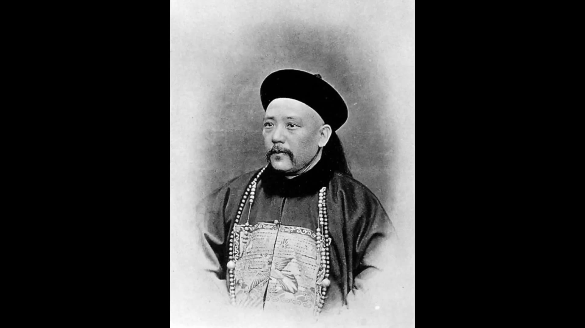
當袁世凱在出山時並未想過要推翻滿清或採用共和體制，但他對滿清已完全失望了。從個人角度而言，以載灃為代表的滿清權貴奪掉了他所有的權力；若是沒有武昌起義，他什麼時候能復出還不好說呢。從大局來講，滿清權貴不斷收權，特別是皇族內閣的產生使他對滿清的自我改革失去了信心。袁世凱在復出後是要獲得所有權力，但他並非想推翻滿清取而代之，而是逼迫清廷裁掉載灃等滿清權貴勢力，然後由他推動君主立憲制，讓滿人做「虛君」即沒有實權的皇帝，自己則做責任內閣總理大臣。
然而革命的形式變化太快，15個省陸續獨立。在南北和談中，革命黨人堅持變更政體為共和，袁世凱也就同意了。當時各方面的力量主要集中在實力最強的立憲派上，他們支持袁世凱，而他可以算作是立憲派領袖，因在清廷改革和立憲過程中，他是最積極推動的一員。出於穩定變革考慮，立憲派都推舉袁世凱當大總統。
反滿的前清官員當然希望由袁世凱來掌權，因為這樣對他們有利。第三點是西方列強，孫中山在知道革命成功後並未直接回國，而是輾轉很多國家，希望得到西方的支持，包括貸款等；但孫中山未能獲得西方列強承認，自然也就得不到貸款。相較之下，袁世凱卻得到了西方列強的承認並且拿到了貸款，因為他們希望中國有一個強有力的人物來控制局面，這樣他們在華的利益才能得到保障。
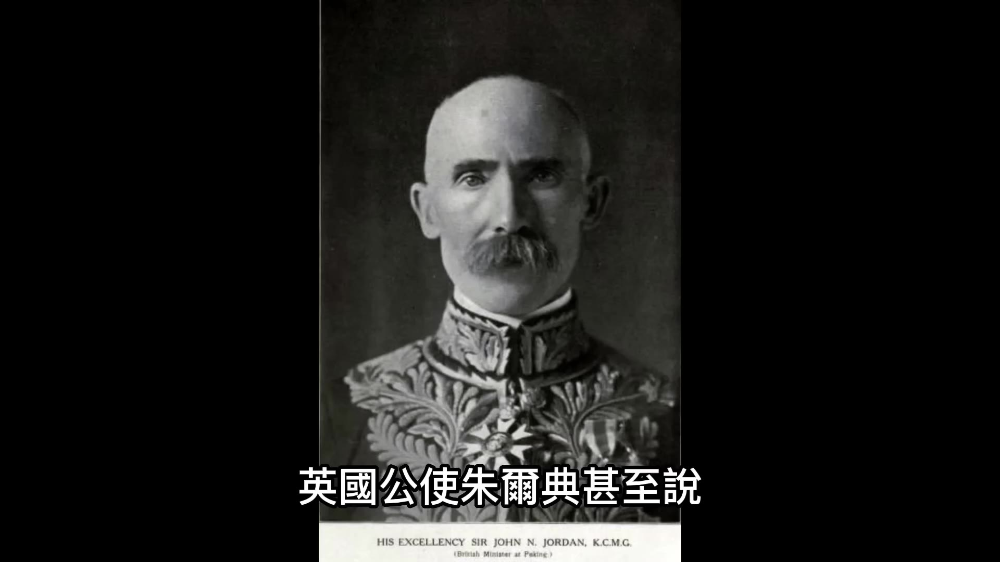
英國公使朱爾典甚至說：
01:50:01
袁世凱是當時唯一被認為有能力的人，革命黨領導人也普遍支持由袁世凱擔任首屆總統。在孫中山返回之前，黃興與黎元洪已經達成一致，推舉袁世凱為大總統，這是因為革命黨內部存在許多矛盾，在談判之後黃興的首要任務是裁軍，而在當時中國這樣的情勢下，由袁世凱擔任總統可謂眾望所歸。雖然袁世凱被看作是合適的人選，我們也應正視孫中山和革命黨的貢獻：正是因為他們傳播了革命思想並付出巨大犧牲，多次發動起義，在這場革命中無論是革命黨還是立憲派對中國民族的進步都做出了巨大的貢獻。
在清朝皇帝退位之後，孫中山將大總統讓給袁世凱。孫中山是否心甘情願地讓出這個職務呢？當然不是，因為當時袁世凱的威望更高、實力也更強，因此孫中山不得不讓位。革命黨對此非常不滿，因為他們辛辛苦苦爭取來的勝利成果被袁世凱佔據了。然而在當時情況下，他們更多擔心的是袁世凱可能會廢除共和體制並恢復帝制，為了約束袁世凱的權力，革命黨想出了兩種方法：一是定都南京，讓袁世凱到南京就職；二是將政體從總統制改為內閣制。這些措施旨在限制袁世凱的權力。
南京臨時政府迅速起草了《臨時約法》，並在袁世凱就職次日公布，要求袁世凱宣誓承諾遵守相關規定。對於革命黨來說這是一種約束機制，但對袁世凱來說，這是革命黨挖的「坑」。關於第一個方法定都南京，革命黨組建了一支專使團赴北京迎接袁世凱到南京就職，該團隊由蔡元培領隊，成員包括宋教仁、汪精衛等人共八人。

專使團一路討論如何說服袁世凱到南京就職，並在北京與袁世凱會面時發現他竟然一口答應下來，這讓蔡元培等人非常高興。然而當天晚上卻發生了一場兵變，在專使館附近槍聲四起，士兵衝進了專使館，蔡元培等人躲在牆角裡直至深夜，最後在東交民巷的六國飯店避難，因為該地是外國人聚集區。
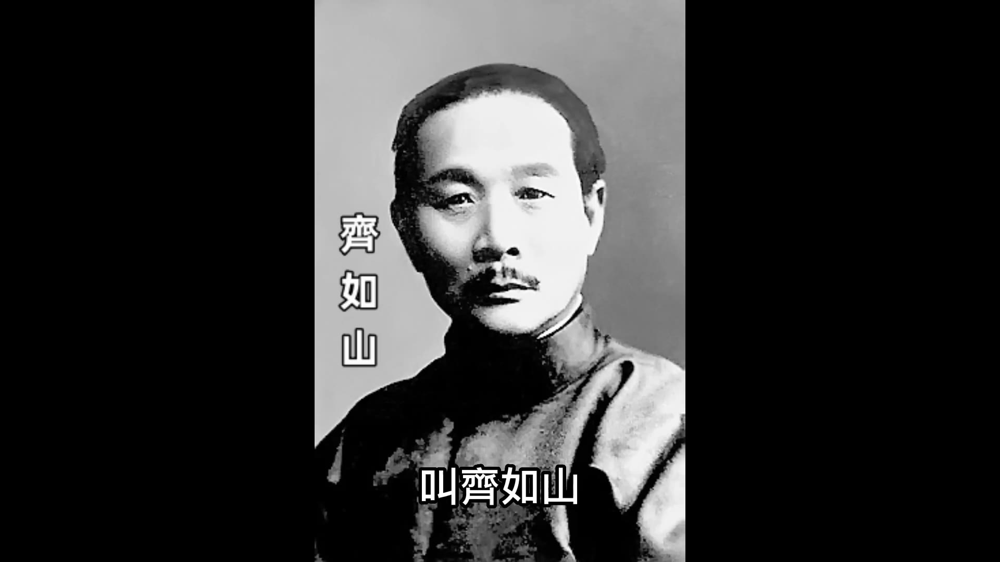
這場兵變由北洋軍發起，士兵四處砸店鋪、搶劫，引起公憤和恐慌，著名戲曲藝術家齊如山在其回憶錄中記載了當時的情況：自從八國聯軍之後北京已和平多年，這次的兵變讓百姓感到震驚，他們四處奔逃哭喊著。士兵隨手拿來搶劫得來的物品問齊如山這些是什麼，有的士兵拿來一疊紙條詢問，他說這是挽聯；另一個士兵拿走貂皮大褂，齊如山告訴他們這件衣服非常值錢。
袁世凱是如何應對革命黨挖的「坑」，關於定都南京這一問題，由於兵變使得專使團無法順利完成任務，而後袁世凱也沒有前往南京就職。
01:55:01
那時，士兵們捧著東西歡天喜地離開了。當時北京的兵變事件在齊如山眼裡就是這樣的情景，這些士兵還未幹過搶劫百姓的事，尚不嫻熟。與後期軍閥時代的大規模兵變和掠奪相比，顯得不那麼專業化。這場兵變不僅在北京發生，在通州、天津和保定等地也蔓延開來。袁世凱藉此理由表示北京還不穩定，拒絕南下南京就職，而南京政府最終妥協了。
說起來，袁世凱製造的這場兵變確實達到了讓他無需前往南京的目的。從當時看來，他似乎達成了自己的目標；但從長遠看，這種做法存在巨大的危害性。定都南京還是北京，這代表著政治上的分歧。而袁世凱不用政治手段解決問題，卻選擇以武力方式，顯示出他在軍事實力上確實強大，但也反映出其治理國家的方式有失妥當。
譬如趙匡胤在陳橋兵變後雖登基稱帝，但隨即實行「杯酒釋兵權」政策，旨在卸除將領手中的兵權，轉而以文治國。開國君主往往會這樣做，以免軍人干政，導致國內動盪不安。然而袁世凱卻主動玩起了兵變手段，讓他的部下學到了「原來政治是這麼玩的」，此後成了他們的常態手法。這在一定程度上為後來軍閥混戰埋下了伏筆。
另外，若袁世凱不想去南京就職，只需明確拒絕即可。革命黨人實則對他無力可施，否則也不會將總統之位拱手讓人了。北京兵變只是個借口，真正關鍵的是袁世凱自身的軍事實力。而此後的國會選舉中，北洋士兵和警察又包圍國會斷絕供給，迫使議員們選他為正式大總統。這類手段被他的部下學到了，在平定孫中山二次革命後，各個軍閥頭目分駐各地成了地方霸主，袁世凱雖然是總統卻難以調動他們。直到此時，袁世凱才意識到應當廢除地方軍權，可惜為時已晚。
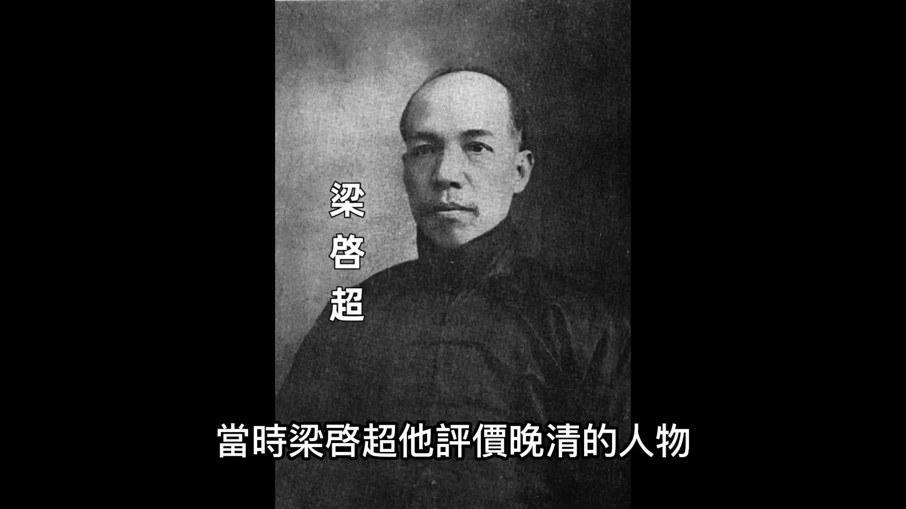
回顧當時梁啟超對袁世凱的評價：「有術無學」，這句話倒也貼切。當時《臨時約法》將總統制改為了內閣制，這一改革反映了革命黨人意圖限制袁世凱權力的做法。
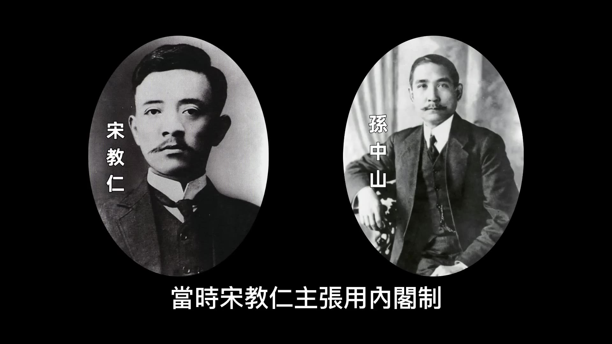
當南京政府成立之初，關於採用哪種制度存在分歧。宋教仁主張內閣制，孫中山則支持總統制。當時宋教仁才華橫溢、年輕氣盛，想當首任國務總理，故主張內閣制；然而孫中山不同意，他認為既然選自己為大總統，當然應該實行總統制，而非讓自己的權力受限於內閣制下。最終，在袁世凱即將成為大總統時，革命黨人為了限制其權力，將制度改成了內閣制。
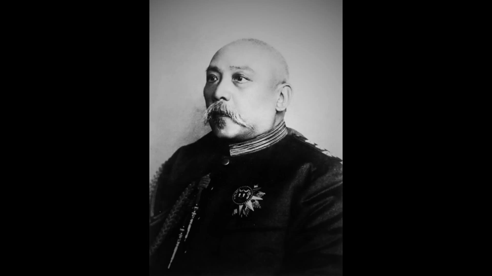
袁世凱宣誓當上總統的時候表示會謹遵憲法並發揚共和精神。
02:00:00
當時，袁世凱對共和體制的看法逐漸轉變。其幕僚認為共和政體在全球範圍內被視為最先進的制度，建議袁世凱跟隨世界潮流推行共和。儘管袁世凱意識到內閣制會削弱他的權力，但他堅信無論採用何種政體，關鍵在於他能掌握實質性權力。他曾說過：“無論政體如何解決總期權操在我。”換言之，袁世凱自認足夠老練，不會被政體制約影響其主導地位。
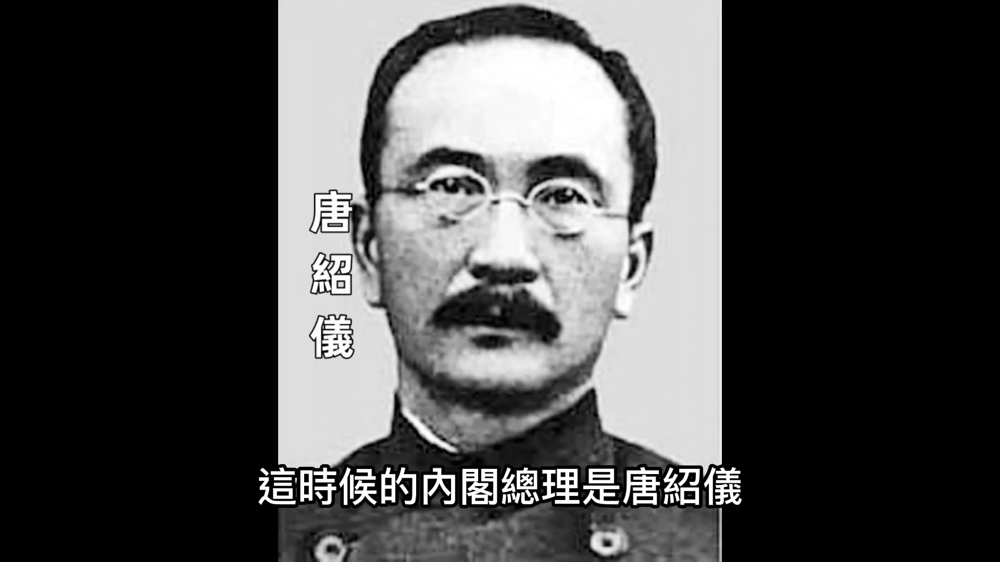
在初期擔任大總統的時期，袁世凱確實遵守了《臨時約法》和憲法規定。他盡力在十個月內召集國會，但仍無法完全避免與內閣之間出現矛盾。當時的內閣總理唐紹儀是袁世凱的老班底之一，在朝鮮時代便已成為他的核心幕僚。然而，這段時期唐紹儀卻頻繁與革命黨人接觸，甚至加入了同盟會，這讓他和袁世凱在政策層面產生嚴重分歧，導致總統權力受到內閣的制約。
隨著時間推移，矛盾日益顯現，新政府在重大決策上陷入僵局。國家正在經歷從帝制轉向共和體系的重大歷史變革，在這種過渡期中，社會各界對新的統治模式反應不一：一方面，普通百姓尚未完全適應沒有皇帝的新政權；另一方面，傳統道德價值觀受到挑戰，人們困惑於新社會秩序下誰該效忠。同時，袁世凱本人也面臨來自滿人遺老及舊派人士的批評和非議。
此時期更嚴重的是邊疆地區的穩定問題。蒙古、新疆與西藏等地區曾以親清皇帝為主要聯繫方式，隨著帝制消亡後，這些地區出現了動盪跡象。加之外部勢力如英國（在西藏）和俄國（在外蒙）的介入，使這些地區面臨著更大的分裂風險。這一切問題都亟待解決，但袁世凱卻因內閣的限制而難以有效施政。
面對多方面的挑戰，宋教仁倡導的內閣制似乎並未達到預期效果。當初孫中山批評其形同虛設時，袁世凱現在正經歷類似困境，讓他倍感挫敗與壓力。隨著國會選舉即將到來，首次大總統選舉亦在醞釀中進行準備。此時的袁世凱並未直接干預議員選舉，因為他對選舉制度尚不熟悉；而對於大多數中國人而言，“選舉”僅是一種自上而下選擇官員的方式，而非西方意義上的民主投票機制。
在這種複雜的政治環境中，袁世凱開始尋找新的權力集中路徑。然而，隨著第一屆國會的選舉日益臨近，他能否達成初衷尚且充滿變數。
02:05:01
這跟西方選舉制度完全不同，中國當時的選舉並非每位公民都有投票資格。當時能投票的人大約只佔人口的十分之一左右。此外，選舉過程由地方士紳負責操辦，然而大多數士紳對國會的概念也不甚了解。因此，在他們心目中比自己更懂國情、更能代表共和體制的一方當然是革命黨了。於是，大部分票都投給了革命黨人士。
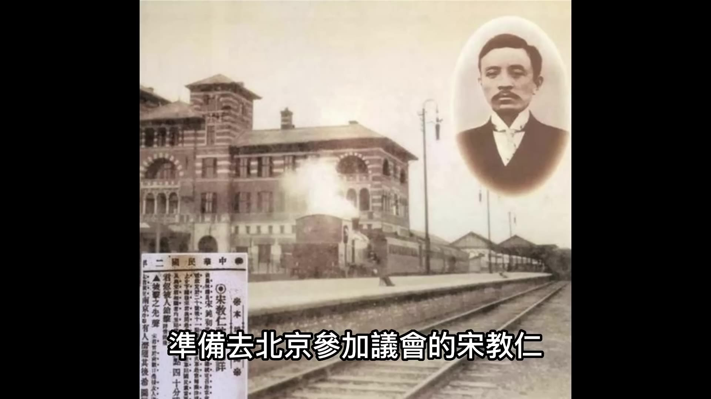
在第一屆國會選舉中，宋教仁將同盟會改組成國民黨，孫中山挂名為虛銜，而實際的黨魁則是宋教仁。國民黨贏得了國會選舉。根據當時情勢，宋教仁應成為內閣總理。此時的宋教仁對自己滿懷信心，處處宣講要推行完全的內閣制，並主張議會政黨責任內閣制度。
然而，袁世凱總統自然不能任由這種情況發展下去，於是他在1913年3月20日採取行動。當時準備前往北京參加國會會議的宋教仁在上海火車站被刺殺，未能獲救身亡。宋教仁案成為民國第一大疑案。

關於刺殺宋教仁的真兇以及幕後黑手，一直眾說紛紜。最早的看法都認為是袁世凱幹的，因為他最有動機；然而也有人反對這種說法，指出如果袁世凱真的策劃了這起案件，在宋教仁前往北京開會的路上派人刺殺，這樣做其實太明顯了，所以他有可能只是讓手下趁機嫁禍。國民黨內部也有矛盾，有人認為是陳其美殺的宋教仁。後來有學者經過嚴密考證後表示，可能是袁世凱的手下為了討好他而直接動手，但袁世凱本人並不知情。不管怎麼說，後世普遍認為袁世凱嫌疑最大。
國民黨黨魁被殺引起了強烈反應，孫中山發動了二次革命來對抗袁世凱。當時國民黨內部也不是完全一致的，黃興主張用法律手段解決問題，但孫中山反對，他沒有耐心等待法律程序，堅持南方各省起兵討伐袁世凱。然而，孫中山高估了自己的實力，結果二次革命很快就失敗了。

回顧辛亥革命後的形勢，當孫中山從國外回到國內時，英國《泰晤士報》記者莫理循曾評論說：“我認為孫中山不能當中華民國總統，因為他對中國情況一無所知。”當時袁世凱平定了國民黨發動的戰爭，政治上的敵人已經消失。然而，在這時候國會中的國民黨議員數量仍多，但已不再構成威脅。
隨著形勢逐漸明朗化，袁世凱有些不放心，於是派出軍警組成“公民團”包圍國會，並施加壓力迫使議員投票選舉他為正式大總統。這種做法反而引發了許多議員的反感，原本只需一輪就能完成的投票拖到了三輪。
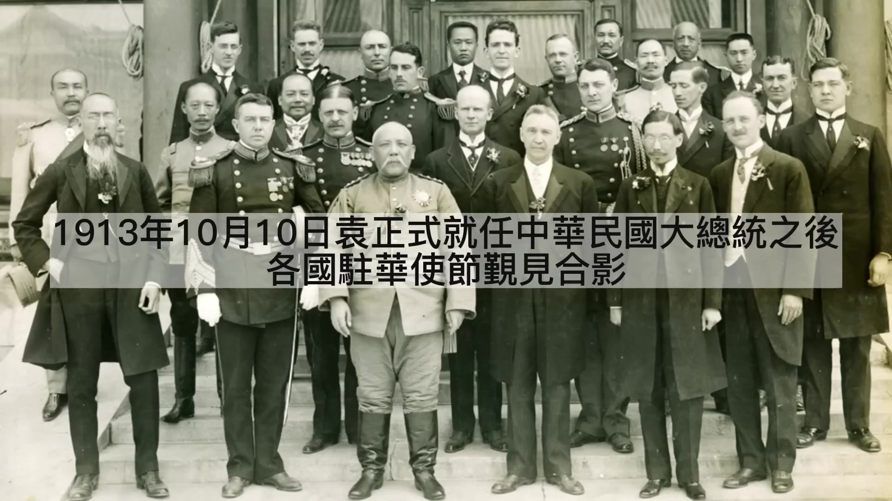
不管如何，袁世凱最終還是獲得了國會的選舉認可，成為正式的大總統。
02:10:00
袁世凱當選為正式大總統，結束了他作為臨時大總統的身份。隨後，他下令解散國民黨，將國民黨議員逐出政壇。由於這些議員在國會中佔有多數席位，他們的離開使得國會難以達到法定人數，因而無法正常運作。袁世凱因此不再依賴國會，組建了一個政治會議來替代原有的立法體制。
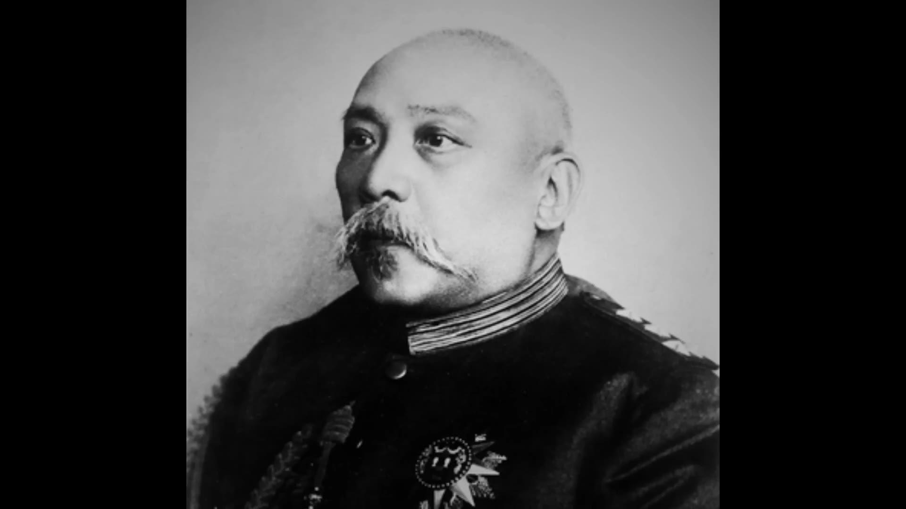
這個新成立的政治會議按照袁世凱的意願制定了《中華民國約法》，簡稱“新約法”。該約法極大地擴大了袁世凱的權力，主要表現在兩方面：一是從內閣制轉變為總統制，讓總統能夠決定一切事務而不再受到其他機構的約束；二是規定總統任期十年，可無限期連任。中國當時模仿西方共和制度，通過憲法來限制最高統治者的權力，主要體現在兩個方面：一方面利用國會和內閣來限制總統的行政權，另一方面則是設置總統執政年限（一般為五年一任，最多連任一次）。袁世凱的新約法幾乎取消了對他的任何限制，除了兒子不能繼承外，他在其他方面已與皇帝無異，成為一名事實上的獨裁者。
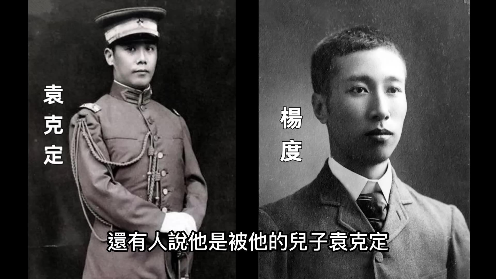
在此之前，革命黨為了制衡袁世凱的權力而制定了內閣制，確實達到了分權的效果。然而，這一制度在執行過程中讓袁世凱深感掣肘，影響了行政效率，讓他無法有效推動事務。這種情況促使他決定回歸專權和獨裁。

在中華民國成立後，袁世凱出任大總統，初期採用了革命黨設計的內閣制政府，但由於總統與內閣政見不一致而產生大量矛盾和內耗，使得無法有效決策。隨著宋教仁被暗殺事件發生以及孫中山發動二次革命後，袁世凱迅速平定了反對勢力並取消了國會，制定新的約法，使自己成為獨掌大權的總統。在實現專權之後，袁世凱執政效果如何呢？從結果上看，他確實取得了一些成績，尤其是在內政方面推行了一系列工業政策。
02:15:01
從1912年到1914年的這三年間，中國新興立民族企業工廠達到四千多家，如麵粉廠、火柴廠、卷煙廠和造紙廠等。在農業方面，袁世凱積極興辦農業教育，創設農業基金並推廣新的農業技術。在財政金融方面，他改革幣制，發行了廣受歡迎的「袁大頭」硬幣，在民國三年時中央財政已達收支平衡狀態。
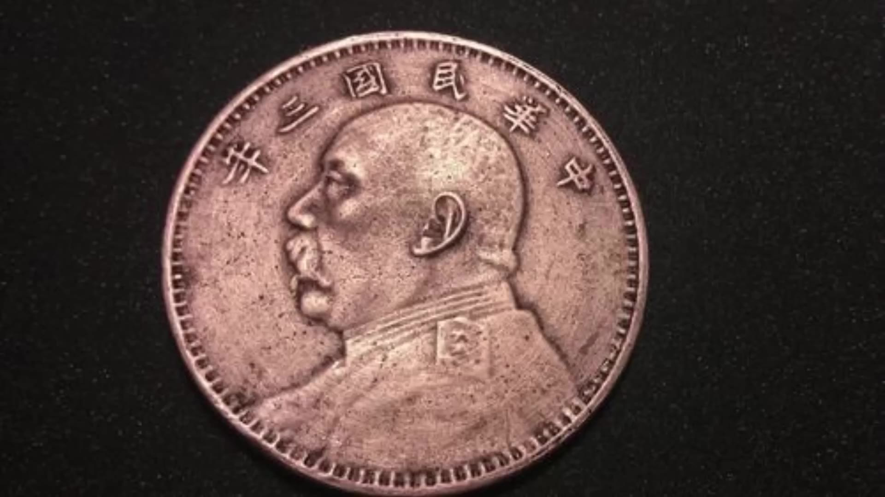
同時，袁世凱政府為了籌集善後基金借款而與國民黨產生矛盾。在外交方面，首要問題是應對英國對西藏的插手以及俄國對蒙古地區的影響力擴張。

在民國初年，英國支持達賴喇嘛返回西藏並掌管該地政權，派遣僧軍擾亂四川地區。袁世凱明白西藏問題的根源在於英國，在印度西姆拉城與其展開協商談判，被稱為「西姆拉會議」。

英國企圖將西藏分割為內藏與外藏（即現在的西藏全境），要求外藏獨立並逐漸併入印度，其餘部分則由中國政府統治。袁世凱堅決反對此建議，會議談判從1913年10月延續至1914年7月，隨後因歐洲一戰爆發而終止。

俄國則乘機入侵蒙古地區，提出不允許中國駐軍的要求，企圖取代清朝在蒙古的統治權，策動外蒙古獨立。袁世凱派遣陸徵祥與俄國談判未果後改派孫寶琪續談，最終在1915年6月7日於恰克圖簽訂《中俄蒙協約》，俄國承認中國在外蒙古的宗主權。
民國初年，面對英國和俄國對西藏及蒙古地區的挑戰，袁世凱政府成功守住這兩地。然而，在內政方面，平定國民黨二次革命與白朗起義等內部動亂仍然持續著，這些都為國家帶來了極大挑戰。

第一次世界大戰爆發後，雖然緩解了一些國際對中國的分裂威脅，但卻給了日本機會。德國在華佔領的青島成為焦點，日軍迅速擊敗駐紮於此地的德軍，佔據該地區。隨即日置益帶來《二十一條》，要求袁世凱直接面見，內容涉及將德國在山東的所有特權轉移給日本、南滿和東內蒙古路權與礦權歸屬於日本等極不友好的條件。

《二十一條》要求中國承認日軍佔領青島、延長旅順大連租期至九十九年，並聘用日本顧問於政治財政與軍事等領域。
02:20:00
其中第五條特別嚴重，實質上是將中國當作日本的殖民地。袁世凱收到二十一條要求後感到非常憤怒和驚慌，並立刻召集部長商討應對策略。當時陸軍總長段祺瑞建議與日本開戰，但袁世凱詢問段祺瑞我國軍隊能撐多久時，段祺瑞回答說大約三個月。於是袁決定暫緩戰爭，轉而採用談判的方式解決問題。他派外長陸徵祥去進行談判。
陸徵祥的策略是「拖」字當頭，每次會見都請坐喝茶並拖延時間，讓日本人無奈至極。他還把會議頻率降低，將原本每日開一次會改成每周一次，甚至將每條議題討論得非常細緻。這使得談判過程被拉長了四個月之久。日本人在這種壓力下被迫減少了要求條件，但仍舊未能如願。
在此期間，西方各國的公使和輿論開始對日本施壓，希望阻止其獨佔中國。在這種情況下，陸徵祥始終採取拖延策略以爭取更多時間，並秘密將談判細節告知美、英等國公使，希望能得到外部支持。
談判最終經過數月拉鋸後，雙方簽訂了《中日新約》，共九條內容。與最初的二十一條相比，《新約》刪除了一些最為嚴重的條款，如第五條，但依然是一部屈辱性的條約。袁世凱政府在外交上盡力抗爭，但仍難以改變條約的基礎性質。
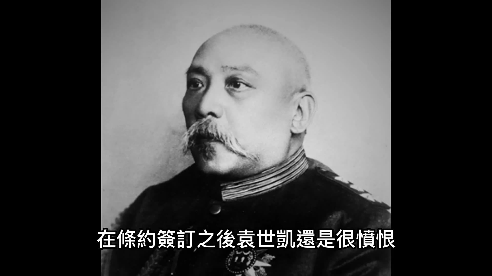
簽訂條約後，袁世凱公開表示這是中國奇恥大辱的日子，將五月九日定為「國恥日」。然而，這並未挽回他的聲望，反而因簽訂屈辱條約而遭到廣泛批評和輿論壓力。
隨著威信的下降，各地軍閥及北洋軍領袖逐漸形成事實上的獨立狀態，並且一些地區的老百姓開始抗捐抗稅。在這種局勢下，袁世凱急需迅速樹立威望並重建合法性，於是有人建議他稱帝以鞏固權力。
02:25:01
稱帝可以迅速樹立權威，老百姓也更適應有皇帝的日子。從客觀上來講，袁世凱稱帝是他和他的幕僚班子為了重新建立合法性的一次嘗試。當時的老百姓對民國的實踐並不滿意，不僅生活沒有改善，治安還更加紊亂了，很多人趁機作亂；在南方一開始革命黨政府強迫老百姓剪辮子、放小腳，這些對老百姓的騷擾比他們能得到的好處要多，因此民間對共和並不太喜歡。連民國政府的美國顧問古德諾都發表了意見，認為共和制度並不適用於中國。這時候提倡君主立憲的聲音就冒出來了。
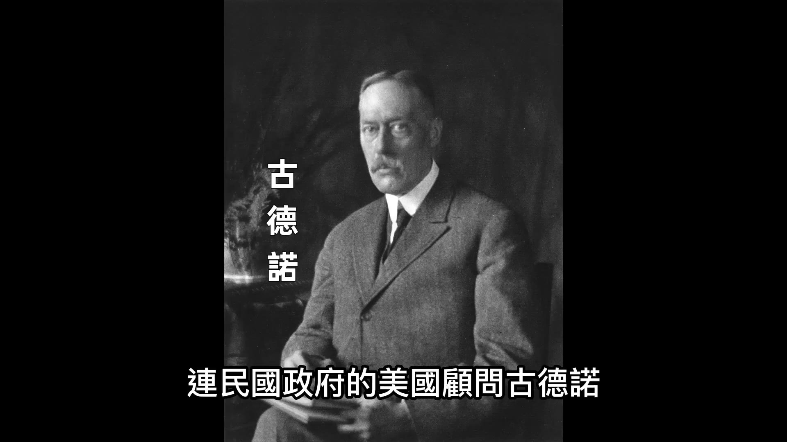
袁世凱的幕僚楊度寫了一篇巨著《君憲救國論》，這篇文章嚴密地論述了中國最適合的政體應該是君主立憲制。他說只有君主立憲才能拯救當下的中國；美國顧問古德諾也發表了一篇文章，叫作《共和與君主論》。這樣理論基礎就有了，就差行動了。
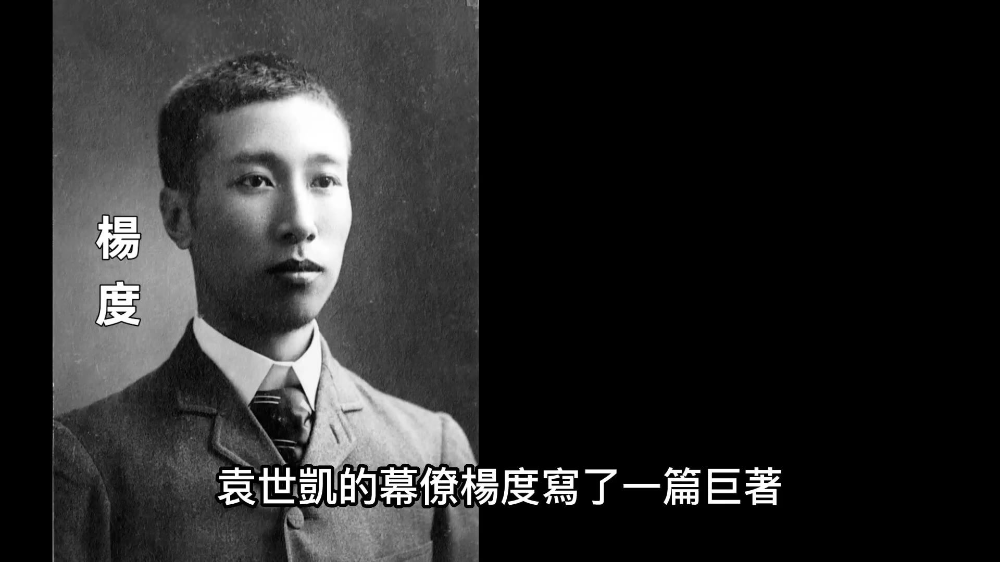
行動力最強的是兩個人：袁克定和楊度。袁克定很容易理解，他比袁世凱還希望袁世凱稱帝，因為如果袁世凱當上皇帝了，他就成了皇太子，可以接班；楊度在這個時候則是忠誠的君主立憲制擁護者，真心認為君主立憲是最適合中國的政治體制。楊度組建了籌安會，正式開始恢復帝制運動。
籌安會首先利用輿論，操控民間對民國初年不滿意的情緒，搞出了各種請願團，如將軍請願團、商會請願團、教育請願團等等，甚至還有乞丐請願團和妓女請願團，這些請願團都呼籲袁世凱速速登基恢復帝制。全國的媒體對此也沒有太多的反對聲音，只有《順天時報》有反對的意見；袁克定便給他父親做了一版定制的《順天時報》，讓袁世凱看不到反對的聲音。
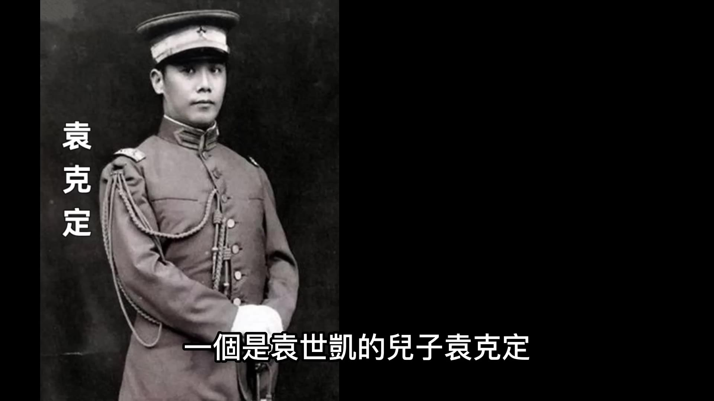
這種民間對民國不滿的情緒，經過籌安會操控後變成了荒唐的風氣。袁世凱看到的是社會各個層面對於恢復帝制的一致擁戴。老百姓被操控還可以理解，這裡面蹊蹺就在於將軍請願團；第一個簽名的就是雲南蔡鍔，接著奉天段芝貴、山西閻錫山、廣西陸榮廷等20個省的督軍都在名單裡。

在袁世凱宣佈稱帝後，這些原本支持他的軍閥一個個反對他；他們為什麼要參加請願團？只能說是為了加速袁世凱稱帝的進程，然後再推倒袁世凱；他們過去不也是公認最有資格當大總統的人嗎？那因為形勢改變了。從辛亥革命後各地實際上都是軍閥當政，袁世凱出任大總統時地方上的實權掌握在這些軍閥手中。
在袁世凱平定了國民黨的二次革命後，他也順理成章地把國民黨的地盤接手過來，但這些地盤被他派出去打國民黨的將領控制著。這些人在佔領了國民黨的地盤之後都比較不聽話，形成了遍地諸侯的局面；袁世凱對地方軍閥實行一系列的政治改革，如廢除都督、虛省設道、推行文官政治和設立將帥團，實際上就是在削藩。然而，中央政府收回權力的措施卻在實施時遇到了巨大的阻力，推行得很艱難；中央越這樣做地方軍閥反抗就越強烈。
袁世凱想起了當年清朝的大臣被罷免的事實，這些都是因為有皇帝的權威才能做到。
02:30:01
所以，當楊度等人鼓吹讓袁世凱稱帝，認為這樣能增加權威時，他也就傾聽了這個建議。從某種意義上來說，袁世凱的稱帝實際上是一場中央集權運動，在這場運動中，皇帝不僅僅是一個名號，更是一個可以重新樹立政治權威的架構，是一種已經運行了兩千多年的、被認為有效的意識形態。他想通過擁有皇帝的地位來獲得權威，然後再實行憲政，正如古德諾當時所說的那樣，這是當時最適合中國的政治體制。然而，他忽略了當年清朝載灃集團也已經在推行君主立憲，但因為過於急迫地尋求中央集權而導致失敗。
歷史似乎有著它獨特的輪回，袁世凱因載灃的中央集權嘗試反而引發地方割據而得到當選大總統的機會，但在四年之後他自己也走上了這條道路。他要集權，要削藩，地方軍閥自然看得出來，但他們又沒有合理的理由來反抗袁世凱。此時，袁世凱居然要恢復帝制，這些軍閥當然會順水推舟，通過請願書的方式敦促袁世凱稱帝，當他真的宣布稱帝時，他們又第一個跳出來反對，這給他們一個可以反叛的合法藉口。因此，蔡鍔舉兵討伐袁世凱時，那些曾在請願書上簽名的地方軍閥紛紛響應，但真正要了袁世凱命的是北洋嫡系將領們。
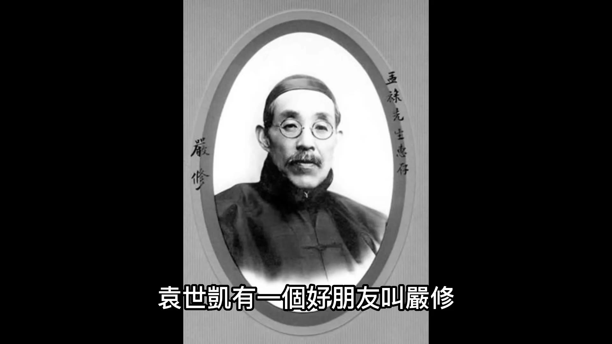
當時袁世凱指派北洋將領平叛時，段祺瑞直接拒絕出兵；而馮國璋則聯合江西、浙江、湖南、山西四省督軍發表密電，要求護國軍取消獨立並請袁世凱立即取消帝制以安人心。曹錕雖一貫聽話，但率軍平叛時佔據優勢時也不戰而退。即便有其他地方軍閥反對袁世凱，北洋系的將領卻是因為他們最不想看到袁世凱稱帝，他們在袁世凱當大總統時期獲得大量資源和利益，一旦袁世凱卸任後仍有機會繼承其位，但若他稱帝，繼承者將成為他的兒子，這使得他們未來再也無望了。因此，在思想轉變及權力問題上，北洋系將領不可能再效忠於袁家子嗣。
這些反對力量在袁世凱準備恢復帝制的初期並未顯現，但隨著時局變化和意識形態上的不同，他們的抗議聲浪漸次響起。即使當時存在一些表面支持聲音，也僅限於袁世凱蒙蔽之下被忽略的情況。然而，仍有一個人提醒了袁世凱，這人是嚴修，一個世外高人且品格高尚的人。當年袁世凱遭載灃驅逐時，唯有嚴修和楊度來送行，而嚴修在送行後還起草了一份奏折表達對清廷罷免袁世凱的抗議並辭官而去。等到袁世凱再度出山，他第一個想到的就是請嚴修出來當官，將財政總長的位置留給了他，但嚴修卻以民間辦教育為由拒絕。
直至袁世凱欲稱帝之時，嚴修才明確告訴袁世凱不要稱帝，然而此時的袁世凱已無法聽進去。在最後階段，袁世凱已經被帝制的權威所迷惑，也被社會上所謂對民國制度反感的民意所蒙蔽。經歷了辛亥革命後的軍閥們相信共和比君主立憲更優越，而君主立憲又勝過帝制，當袁世凱試圖恢復帝制時，他們在意識形態上也無法接受。再加上他最依賴的北洋將領此時也不再聽從他的指揮了，這使得袁世凱稱帝之路變得更加困難重重。
以上敘述充分展現了袁世凱欲稱帝而遭軍閥及北洋系將領反對的情形及其內在矛盾和原因。
02:35:00
因為袁世凱控制不了這些武將，他才萌生稱帝的想法，企圖樹立權威。然而，稱帝的決定卻是他最糟糕的選擇，這直接導致了他的垮台。1916年6月6日，袁世凱因病去世，享年57歲。
袁世凱被視為近代歷史上挨罵最多的統治者。清朝的遺老遺少譏諷他不忠不義；康有為和梁啟超則批評他背叛了維新運動；孫中山及其後繼的國民黨也斥責他背棄共和精神。甚至連袁世凱培養出來的北洋將領們都指責他，因為他們只有通過批判袁世凱才能證明自己的清白。
雖然這些年來對袁世凱的評價逐漸變得客觀一些，但也不可否認的是，孫中山的後繼者確實在抹黑袁世凱方面起了不小的作用。然而，我們也不能忽略袁世凱自己也有許多失誤。他作為中國歷史轉型期的核心人物，沒有成功完成這個轉型的使命。當然，從客觀的角度來看，袁世凱確實為中國由清末至民初的制度轉型做了不少努力，包括軍事、教育和行政改革等等。然而，在關鍵時刻選擇稱帝最終導致身敗名裂。
關於袁世凱的分享就到這裡了，感謝大家的觀看。
00:00:00
1882年7月滿清朝廷收到朝鮮王后閔妃的求救信閔妃就是朝鮮的明成皇后她是朝鮮王國當時實際的掌權者閔妃派出使者向清廷求救說朝鮮國內發生兵變請求清廷派兵平叛是否應該出兵清廷需要做出決策自從西方發生工業革命以來東方的亞洲國家逐漸被打開國門19世紀中後期的朝鮮在地綠政治上處於一個亞洲的戰略要地對於日本來說朝鮮是進入中國的跳板侵略鄰國獲取資源發展自己是日本在明治維新之後的基本國策對於俄國來說朝鮮意味著萝寐以求的進入太平洋的不凍港對於英國來說扼制餓國侵佔朝鮮就是扼制俄國進入太平洋對於中國來說朝鮮是自己的藩r國如果朝鮮不保東北就會受到威脅如果東北不保京師就會受到威脅所以不管誰侵佔朝鮮受到威脅的都是中國中國作為朝鮮的宗主國保護朝鮮的安全是分內之事從戰略上講這也是中國必須要做的事但是此時的滿清政府接踵而來太平天國之亂捻軍之亂陝甘回亂新疆之亂鴉片戰爭中國的戰事是一波未平一波又起滿清有限的國力只能盡量的平衡經過直隸總督李鴻章的建議
清廷決定派出淮軍將領吳長慶作為朝鮮事務大臣率領3000軍隊進入漢城平亂吳長慶率領3000淮軍登上了去往朝鮮的軍艦在這3000淮軍之中有一個23歲的年輕人他將在未來的12年中左右朝鮮的政局斡旋中國、日本和朝鮮的關係乃至朝鮮和俄國、英國等列強的關係這個年輕人就是袁世凱1859年 袁世凯在河南項城出生項城袁家是一個世家大族袁世凱的叔祖父袁甲三曾經署理漕運總督並且參加過平定太平天國和平定捻軍的戰爭他是淮軍的重要將領袁世凱的生父是袁保中叔父是袁保慶袁保慶沒有兒子袁世凱小的時候就被過繼給叔父做嗣子袁保慶曾經在袁甲三的軍中帶兵所以袁世凱從小就見慣了刀光劍影他還是孩子的時候就經常「以武服人』後來袁保慶官至二品任職江南道道台江南道道台是個肥差耳濡目染的都是官場的逢迎運作他有這樣的家族背景只要用心讀書走上光明的仕途之路必然不是問題但是袁世凱科舉並不順利兩次鄉試都落榜了1979年袁世凯第二次落榜之後他決定投筆從戎他把自己寫過的詩文全部燒掉並目說
在當時的社會通過科舉獲得功名是最大的政治資本袁世凯雖然兩次都沒有考中但是他才21歲還很年輕完全可以接著考他放棄科舉的舉動作為名家子弟來說需要很大的勇氣和決斷袁世凱放棄科舉之後來到了山東登州投奔他嗣父袁保慶的結拜兄弟吳長慶吳長慶是淮軍將領他是李鴻章的人他統帥慶軍駐防在山東登州吳長慶對袁世凯十分照顧讓他做了慶軍的營務處會辦朝廷派吳長慶率領慶軍到朝鮮平亂袁世凱也跟著大軍來到了朝鮮
朝鮮的局勢要從高宗繼位說起1864年 朝鮮哲宗去世哲宗沒有兒子興宣大院君的兒子李載晃被選為新的君王就是朝鮮高宗高宗即位時只有12歲他的生父大院君攝理國政大院君攝政時期西方列強已經開始對朝鮮有所襲擾大院君執行保守政策閉關鎖國大院君執政十年之後1873年 朝鮮王妃閔氏發動政變將大院君趕下台宣佈高宗親政高宗昏庸懦弱閔妃聰明機敏高宗親政之後閔妃是實際的掌權者閔 上台之後扶植她的外戚掌管朝政大權形成了閔妃集團閔妃集團仿照中國的洋務運動
00:05:04
此時朝鮮的鄰國日本也已經完成了明治維新圓本的明治維新實現了財政統一和國家的工業化但同時造成了大量的武士失業武士失業使得日本社會動亂甚至威脅到了日本新政府的穩定為了解決這個問題西鄉隆盛為首的激進派提出「徵韓論」他主張出兵朝鮮掠奪資源這樣既可以解決武士失業的問題叉可以掠奪財富但是日本的保守派認為時機未到日本的實力還不足以支持侵略朝鮮1873年由徵韓論引發了2「佐賀之亂」西鄉隆盛等激進派官員下野但是日本國內的問題越來越嚴重1875年日本開始謀劃侵略朝鮮日本海軍乘坐雲陽號等三艘戰艦入侵朝鮮史稱「江華島事件』圓本學習西方要用武力打開朝鮮國門日本侵略朝鮮首先要採尋中國的態度此時的清朝西北新疆問題還沒徹底解決越南問題叉跟法國關係緊張沒有辦法兼顧朝鮮的局勢清廷選擇不加干涉日本在探知清廷的態度之後對朝鮮的態度更加強硬1876年 朝鮮在日本的壓力之下《江華條約》被迫簽訂了不平等條約圓本成功打開了朝鮮國門獲得了在朝鮮的貿易特權圓本也開始在朝鮮培養自己的勢力
清廷雖然無暇顧及朝鮮的局勢但是李鴻章也深知日本的野心李鴻章指導朝鮮讓朝鮮興英、法、美、德等國家都簽訂條約讓列強之間相互牽制閔妃集團正是朝鮮洋務運動的推動者他們與列強簽訂了一系列條約1881年閔妃集團還創立了新式軍隊這支新軍聘請日本充當教官日本趁機從各個方面滲透朝鮮閔妃集團的很多官員都嚴重貪污閔妃的開放和親目引發了很多保守派的不滿尤其是閔妃集團組建的這支新軍無論在裝備上還是軍餉上都比舊軍高出很多當時的舊軍經常連軍餉都發不出來士兵們怨聲載道1882年7月下旬舊軍士兵由於連續13個月沒有領到節米聚眾喧嘩朝鮮宣惠廳給舊軍派發白米但是這些米裡面居然摻雜了大量的沙子和石子等物憤怒的士兵舉行了暴動遭到閔妃打壓多年的大院君趁機報復他煽動暴亂的主兵把克扣軍餉的問題都算到閔妃集團和日本人身上亂軍襲擊了閔妃集團官員的府邸閔妃見勢不妙換裝之後逃了出去閔妃逃跑之後大院君重新掌權亂軍又殺了日本教官火燒日本使館日本駐朝公使花房義質見勢不妙連夜逃跑搭乘英國軍艦返回日本閔妃派出使者向清廷求助請求出兵協助平亂花房義質回到日本後請求日本出兵朝鮮清廷派出淮軍吳長慶率領慶軍到朝鮮平亂慶軍一共六個營3000人兵力陸續抵達朝鮮半島吳長慶命令一個營的管帶
率領部隊首先登陸那個管帶不敢上岸推脫士兵暈船說要暫緩—天登陸吳長慶—怒之下將這個管帶革職讓袁世凱代理管帶剛到朝鮮的袁世凱就有了帶兵的機會慶軍上岸之後安營扎寨此時的淮軍已經暮氣十足士兵嚴重腐化軍紀渙散士兵們騷擾岸上的居民袁世凱發現之後向吳長慶報告說有士兵奸殺搶掠吳長慶很生氣問道為什麼不嚴辦袁世凱回答已經嚴辦了說罷他呈上7個士兵的首級吳長慶吃了一驚他沒想到袁世凱這麼果斷反應過來之後卻誇贊他說不愧是將門之後慶軍進入漢城之後很多士兵都有抽鴉片的癮他們經常跑到朝鮮平民家影響極其思劣袁世凱每天到處走訪看到擾民的煙鬼兵就拉出來就地正法斬首示眾一幫兵痞聯合起來鬧事仗着法不責眾以煙癮過重不能服役為理由請求給遣散費回家袁世凱怒了他讓人出去傳話說你們挨個到營帳里來領遣散費結果進來一個他綁一個吳長慶聽到消息後震驚不已他過來問袁世凱說你真的要把他們都殺了嗎
00:10:01
袁世凱鎮定的說如果加以示威他們一定不敢繼續如果示弱他們會蜂擁而至我現在把他們都綁了一個個審問如果承認有煙癮的就都殺了不承認的就都放了其他人就都不敢認了這一刻慶軍統領吳長慶算是真正的認識了袁世凱這個後起之秀袁世凱當然不是一味的殺戮他懂得恩威並施對於士兵的伙食同用袁世凱非常重視下令必須充分供給遇到有生病的他不顧是否會傳染都會親自探視將心比心士兵們也都樂於為他效命而朝鮮的老百姓對袁世凱更是感恩戴德慶軍在漢城站穩了腳跟開始誘捕大院君吳長慶命令袁世凱『密為佈置」1882年8月大院君到慶軍回訪袁世凱設計將他的衛士阻擋在了軍營的外面寒暄之後大院君察寶出了異常感覺到氛圍不對吳長慶不忍動手正在躊躇之間旁邊的袁世凱大聲說道事情已經洩露遲則生變他果斷命令手下將大院君強行塞進轎子里然後安排用船押往天津誘捕大院君之後平定叛亂迎回了閔妃閔妃集團重新控制了朝政在這場平叛過程中袁世凱立下大功得到了李鴻章的垂青被授予五品同知銜而閔妃對他更是感激和看重邀請他為朝鮮訓練新軍壬午兵變中清廷出兵幫助朝鮮平叛宗主國的威望提高了很多日本也派兵來了但是還沒來得及動手叛亂就被清軍平定了日本軍隊既然來了當然要佔些便宜日本藉口大使館被燒的原因
強迫朝鮮簽下了一個不平等條約《濟物浦條約》這個條約使得日本獲得了在朝鮮駐兵的權利圓本在朝鮮駐軍1000人為了抗衡清軍就讓吳長慶率領慶軍3000人也駐紮在朝鮮清朝雖然是朝鮮的宗主國但是一直的宗旨都是不干預朝鮮內政這次駐軍是清廷干預朝鮮內政的開始這次事變的解決使得部分朝鮮官員越來越依賴清朝的保護主張依靠清朝保護的官員被稱為「事大黨」還有另一派官員主張獨立發展他們被稱為開化黨中親日派的官員比較多隨著中日兩國在朝鮮競爭的加劇事大黨和開化黨的對立也逐漸加深由於在壬午兵變中清軍的強力保護高宗和閔妃傾向於依附清朝所以朝鮮政府中事大黨的官員佔據主要位置但隨著日本對朝鮮的滲透開化黨逐漸接受了日本思想變成了日本的帶路黨他們不斷影響朝鮮的政壇並且尋找機會取代事大黨官員的位置袁世凱此時正在幫助朝鮮編練新軍他常年鑽研操練的心得都派上了用場他為朝鮮高宗編練了一支由1000精銳組成的新軍這支新軍標配來復槍和開花炮用的都是最新的操練方法這次練兵非常成功也使袁世凱提高了在朝鮮軍隊中的威信也是這次練兵的經驗讓袁世凱日後回到國內有了編練新軍的機會1884年初中法摩擦不斷戰爭一觸即發李鴻章命令吳長慶率領三個營1500人撤回山東
防備法軍從海上進攻吳長慶走後清軍留在朝鮮的軍隊還剩三個營分別由吳兆有張光前和袁世凱統轄吳兆有和張光前都是官居二品的大員只有袁世凱是個剛晉升五品官銜的新人袁世凱僮僅25歲就獨自率領一聲可以說升職的速度非常快但是他的軍事才能和外交手段也的確令人佩服看到清軍兵力大減日本人和開化黨覺得有機可乘他們引入日本軍隊發動了政變史稱「甲申政變」1884年12月4日朝鮮郵政大樓建成為了慶祝郵局總辦邀請朝鮮大臣和各國外交官都來參加慶祝宴會一郎其中日本公使竹添進-宴會開始後不久開化黨在廳外縱火大家都出來查看情況開化黨趁亂殺害了事大黨的幾個重要大臣他們派人入宮謊稱清軍作亂恐嚇高宗和閔妃讓高宗寫下向日本求助的書信開化黨拿著書信來到日本使館日本公使竹添進一郎立刻出兵帶領日軍佔領了朝鮮王宮
00:15:00
高宗和閔妃被遷往景佑宮遭到軟禁開化黨宣召親近中國的朝鮮大臣進來—個處死一個同時他們逼迫高宗任命開化黨集團的首腦擔飪朝鮮要職第二天上午開化黨通告天下宣佈新成立的政府班子清軍在得到消息之後袁世凱非常憤怒他要帶兵攻入朝鮮王宮解救高宗而吳兆有和張光前態度謹慎他們主張要先請示李鴻章然後再做打算袁世凱說請示可以但是不能等回復了他說請示的信函就算八百里加急送到李鴻章手裡李鴻章還要上報朝廷朝廷討論批復之後批復的信函再八百里加急送回朝鮮到時候朝鮮的叛黨早就穩定局勢親近清廷的官員也會被屠戮殆盡但是吳兆有和張光前依然不動他們要求按流程走說不能先挑起和日本的爭端袁世凱說如果因為挑起爭端而獲罪由我一人承擔絕不牽連二位吳兆有和張光前這才勉強答應出兵他們約好兵分二路攻打朝鮮王宮袁世凱率領自己的部隊和他在朝鮮編練的新軍作為中路吳兆有張光前的部隊作為左路和右路袁世凱剛剛到朝鮮王宮門外就遭到宮內守軍密集的火力射擊袁世凱下令還擊雙方展開激戰清軍雖然在人數上佔有優勢但是叛軍和日軍已經佔領了宮中的有利地勢因此清軍傷亡嚴重袁世凯奮勇當先帶領部隊往前衝不久之後吳兆有的部隊竟然潰散而張光前也畏縮不前只剩袁世凱的隊伍還在戰鬥袁世凱卻越戰越勇
他平時治軍有方他訓練的朝鮮新軍也發揮了作用夜幕降臨時叛軍終於抵擋不佳清軍的攻勢徹底崩潰袁世凱救出高宗將亂黨處死竹添進一郎逃回日本日本使館被憤怒的朝鮮民眾焚毀持續三天的甲申政變被清軍徹底粉碎李鴻章先是接到了甲申政變的報告只隔兩天他就收到了叛亂被平定的報告看了詳細報告李鴻章對袁世凱非常贊賞袁世凱在朝鮮國內也獲得了巨大的威望不過袁世凱平叛的事跡在國際上卻引起了強烈的反應日本說是袁世凱首先挑起的戰端要求嚴懲袁世凱日本國內的激進派甚至主張跟清朝開戰正在與中國交戰的法國密謀讓日本和法國一起對付中國俄國和美國一直慫恿朝鮮獨立他們也在暗地裡鼓動日本對中國強硬鑒於這種國際形勢清朝很多官員紛紛指責袁世凱擅自挑起戰端一時問彈劾袁世凱的奏章鋪天蓋地而袁世凱的同僚吳兆有和張光前因為嫉妒他的功勞又恨他平日專斷跋扈也向李鴻章告狀李鴻章愛惜袁世凱是個人才而且非常贊賞他對這次事件的處理所以李鴻章對袁世凱極力維護袁世凱看到這個情況主動向李鴻章提出告假回鄉探望母親李鴻章對於他這個主動退讓的舉動更是欣賞准許他回國休息一段時間1885年日本首相伊藤博文來到天津他與李鴻章就甲申政變展開談判這次事件明明是目方挑起的但是他們卻趁著中法戰爭的時機
來提無理要求日方提出三個要求第一懲處參與事變的清軍將領第二撫卹事變中受到損失的日本人第亘清軍撤出朝鮮第一條懲辦清軍將領主要是衝着袁世凱來的明明是日方先挑釁現在卻硬說是清軍挑起事端對於這條李鴻章態度強硬堅決不同意懲處袁世凱第二條賠錢對於賠錢清廷一向都是大方的笞應賠償第三條清軍撤出朝鮮這條才是日本來談判的主要目的在李鴻章的談判之下最後雙方達成共識清朝和圓本都不在朝鮮駐軍圓後如果哪方向朝鮮派兵必須相互照知對方這就是清廷和日本簽訂的《中日天津條約》這個條約表面看起來是個平等條約但清廷卻是吃了虧的明明清朝是朝鮮的宗主國清朝是否向朝鮮派兵跟日本有什麼關係現在清朝卻答應和日本一起撤軍而且以後出兵還要通知日本這就等於變相承認了朝鮮和日本有關係了這個條款的簽訂為九年後的甲午戰爭埋下了伏筆清軍和同軍都從朝鮮撤出了
00:20:01
這時俄國抓佳機會滲透朝鮮政府一個人跳出來為朝鮮牽線搭橋這個人叫穆麟德穆麟德本來是李鴻章派到朝鮮的官員誰知他竟然給俄國和朝鮮牽線搭橋穆麟德說俄國願意對朝鮮進行保護朝鮮和俄國經過幾次交涉達成了一份《朝俄密約》朝鮮和俄國的秘密外交被清廷發現了他們的秘密外交被公諸於世英國一直與俄國為敵他們擔心俄國海軍從朝鮮南下英國搶先佔領了朝鮮的巨文島日本也坐不住了朝鮮本來是自己的獵物現在卻被俄國佔了先機如果俄國吞併了朝鮮日本將受到巨大威脅日本希望中國作為朝鮮的宗主國加強對朝鮮的用人權和行政權的控制罷免穆麟德英國也鼓勵清廷對朝鮮施加壓力取消和俄國的約定清廷決定派出使臣對朝鮮的內政進行管理李鴻章想到最合適的人選就是袁世凱在李鴻章的舉薦下1885年10月袁世凱被清廷任命為
其實就是清廷派駐朝鮮的最高負責人26歲的袁世凯重新回到了朝鮮漢城為了抑制朝鮮親俄派的勢力袁世凱還帶回了一直軟禁在天津的朝鮮大院君袁世凱來到朝鮮後立刻著手粉碎朝鮮的親俄計劃袁世凱掐斷了朝鮮和俄國的電報線阻止兩國繼續聯絡同時他偽造了一封清朝派重兵開赴朝鮮的電報恐嚇朝鮮王室他對朝鮮亞室說中國對朝鮮是仁至義盡你們親近俄國的舉動明顯是背叛行為這可是你們先背叛的天朝上國發起怒來不要我沒提醒朝鮮被袁世凱的操作嚇得上下震恐亂作一團朝鮮高宗失口否認與俄國有聯繫並且他也確實中斷了與俄國的聯繫俄國看到中國保護朝鮮的決心也擔心英國和中國聯合到一起對付自己他也不想再趟這趟渾水俄國聯合英國向中國作出保證承認中國對朝鮮的宗主權兩國不會侵佔朝鮮領土英軍也就此撤出巨文島朝鮮和俄國密約的事件就此被袁世凱粉碎但是由於這次袁世凱的強硬態度導致朝鮮和清朝的裂痕也越來越大朝鮮越來越希望獨立自主袁世凱自從1885年在朝鮮任職以來為了維護清朝的宗主權他將朝鮮的內政、外交、經濟、軍事都牢牢的控制在手裡成為了朝鮮的「太上皇』再加上他為人跋扈經常直接闆入皇宮向朝鮮君歪問貴這使得朝鮮君臣都難以忍受但是袁世凱的做法卻做到了把朝鮮牢牢的把握在清朝手中
其他國家都沒法染指日本和西方列強試圖在朝鮮通商開礦租賃土地和修建鐵路的計劃都被袁世凱破壞朝鮮所有的近代化建設都是袁世凱在管理正是因為如此朝鮮王室幾次派人到天津要求撤換袁世凱李鴻章都斷然拒絕1894年3月朝鮮爆發了東學黨之亂東學黨本來是個宗教群體最開始是為了對抗甚督教等西學入侵成立的後來東學黨發展成朝鮮農民起義的帶頭人規模越來越大威脅到朝鮮的政權這是日本期盼已久的良機日本暗示清朝應該派兵幫助朝鮮平亂日本不會出兵干涉袁世凱認為清朝作為朝鮮的宗主國應該出兵幫助朝鮮平亂他便鼓勵朝鮮政府向清朝借兵1894年6月3日朝鮮政府正式發文向清朝求救葉志超李鴻章派直隸提督（口誤）
從陸路進入朝鮮協助平亂同時又命令水師提督丁汝昌率領濟遠揚威兩艘戰艦前往仁川援護當然按照約定清政府也將出兵的事照知了日本日本得到照會一改開始說不出兵的態度開始分別向朝鮮發兵到達朝鮮的日軍居然達到了8000人這時朝鮮政府和東學黨看到事情鬧大他們雙方內部和解了朝鮮政府對袁世凱說請求清軍撤離清軍撤離了日本自然也應該撤軍清廷同意了朝鮮的撤軍請求但是日本卻拒絕撤軍日本等待這個機會已經很久了他們尋找可以不撤軍的理由圓本要求清朝和自己一起為朝鮮「改革內政』
00:25:00
但是遭到了清廷的拒絕此後日本單方面向朝鮮施壓要求朝鮮改革內政否則將動用武力看朝鮮政府沒有回應日本動手了圓本武力攻佔了朝鮮王宮推翻了閔氏集團成立了親目的內閣在日本的控制下朝鮮新政府廢除了與清朝的一切條約改變東亞格局的甲午戰爭即將爆發袁世凱看到勢頭不妙已經在4天前易裝打扮坐船離開了朝鮮昔日風光無限的朝鮮監國如今卻黯然離去但是袁世凱在朝鮮12年的政績為他日後的發展打下了牢固的基礎
在甲午戰爭爆發之前袁世凱經過清廷的同意回到了國內袁世凱到達天津之後向李鴻章報道但是他並沒有像以前那樣得到重用在甲午戰爭爆發之後李鴻章給袁世凱派了一個差事讓他去山海關外幫辦營務負責向前線轉送軍需物資等事務在戰爭期間袁世凱既沒有在前線和敵人交鋒也沒有在李鴻章的身邊出謀劃策可以說在整個甲午戰爭期間袁世凱因為不在重要崗位所以沒有突出表現隨著甲午戰爭的戰敗馬關條約的簽訂李鴻章的權勢也已經是昨日黃花他所有重要的職務都被裁掉袁世凱也只好請假回河南省親然而袁世凱在河南省親的時間並不長1895年6月河南地方衙門接到清廷緊急命令傳袁世凱「即來京交吏部帶領引薦」按照清廷的慣例凡是皇帝頒布旨令要帶領某人引薦這就意味著這位被引薦的官員一定是事先被某位重要的官員保鹽皇帝採納之後才會有這樣緊急旨令下發到省那麼向清廷保薦袁世凱的會是誰呢關於在袁世凱回國以後他在朝廷中走門路拉關係有很多種說法甚至有人說袁世凱背叛了李鴻章投奔了他的政敵李鴻藻翁同龢等人關於這些說法的爭議也有很多這次保薦袁世凱的人根據中國第一歷史檔案館收藏的『密保袁世凱片』專家們進行了分析在奏片中上奏者向皇帝保奏了袁世凯並給出了很高評價但是這個奏片與原奏折分離
既沒有日期也沒有作者專家根據奏片的文宇內容判定這個奏片的作者是兩江總督湘軍領袖劉珅一在甲午戰爭中劉坤一在淮軍一敗塗地的情況下被光緒皇帝任命為欽差大臣所有關內外的各軍都歸他節制袁世凱此時正在關外前敵營務處負責轉運事宜就在這個時候袁世凯和劉坤一有了交往雖然兩人交往時間不長但是劉坤一對袁世凱印象非常好他呈上的奏折里說袁世凱膽識憂長性情忠篤辦事皆有條理認為他是方面中出色之員袁世凱給劉坤一留下了很深刻的印象在簽訂了了馬關條約之後戰事已定劉坤一向朝廷呈上奏折辭去差事同時向皇帝保薦了袁世凱很多人都說袁世凱得到練兵權主要是靠搞關係和政治手段其實政治手段是輔助袁世凱能取得練兵權主要原因還是他在練兵上的才華得到了清廷的賞識1895年6月光緒皇帝根據劉坤一的保薦召見了袁世凱光緒皇帝召見袁世凱問了他很多關於變法和練兵方面的問題袁世凯奏對得體關於變法他侃侃而談對練兵更是滔滔不絕袁世凱對西方各國軍隊的最新操練方法都有很深入的研究他還有實際跟日軍作戰的經驗可謂非常知兵袁世凱的陳述打動了光緒召見結束之後光緒命令袁世凯將他的思想寫成條陳呈上來袁世凱精心撰寫》呈交給光緒《遵奉面諭謹擬條陳事件繕折》條陳—共有一萬三干多字涉及到了政治
經濟軍事外交等各方面內容其中軍事改革的思想非常的全面周到細緻這也是後來小站練兵的指導思想在袁世凱的條陳中關於練兵的部分主要有十二條意見其中主要的思想有以下五點第一點袁世凱建議聘請德國軍官為教練但是並不把練兵的大權交給德國教練避免軍權旁落外人在同一時期
00:30:00
張之洞編練的自強軍把訓綀權和統帥權都交給了德國軍官中國軍人只擔任副職這樣就造成了德國軍官專橫跋扈的局面跟張之洞相比袁世凱的方法既有效又現實在新建陸軍中袁世凱始終掌握著軍隊的統帥權德國軍官都對他唯命是從第二點他建議給士兵增加軍餉他說原來軍制中的土兵之所以弊端叢生是因為軍節太少這支新軍不僅要增加軍餉而且還要杜絕克扣關於這一點袁世凯在後來練兵的時候他落實的很徹底他親自把軍餉發給每一個士兵不讓中間官員克扣
袁世凱在後來練兵的時候也貫徹落實1902年袁世凱派出55名學生到日本學習軍事第四點練兵既要重視練技藝叉要重視思想教育袁世凱的思想教育包含忠於國家保衛國民等核心思根也包括對他軍令的絕對服從袁世凱在小站練兵時《練兵歌》編寫了讓土兵們念誦起了很好的作用第五點裝備新式武器不僅武器要最新的和軍事有關的輔助器械也要配備齊全比如說德律風、照遠燈、千里鏡等通過這次在朝廷上的對奏和條陳袁世凱給了慈禧和光緒很好的印象在不久之後他就被派到督軍處任職清廷命令張之洞在吳淞練自強軍胡燏棻在天津小站練定武軍不久之後胡燏棻調職1895年12月光緒皇帝下旨任命袁世凱接替胡燏棻練兵編練新建陸軍小站叫新農鎮在天津和大沽之間原來這裡是淮軍將領周盛波、周盛傳兄弟的盛軍營地甲午戰爭中盛軍潰敗營房閒置定武軍由馬廠遷到這裡剛剛安頓下來1895年12月16日袁世凱到達小站正式接練新軍袁世凱接練新軍之後他對定武軍進行了嚴格的測試不合格的全部淘汰然後他重新募兵對新兵的篩選非常嚴格他對軍官和教官的選擇更是非常謹慎他開放思想要選擇既懂西方軍事理論又掌握近代軍事技術的人才袁世凱選擇教官的主要途徑是招聘外國教官以德國教官為主袁世凱招聘軍官的途徑主要是將
天津武備學堂畢業的優秀畢業生都招攬進來天津武備學堂是李鴻章在1885年創辦的陸軍軍官學校十年中武備學堂培養了一大批新型軍事人才但是這批人才在湘軍和淮軍中並沒有得到重用袁世凱敞開大門把大批優秀的武備學堂畢業生都招攬進來並且委以重任後來號稱北洋二傑的王士珍、殿祺瑞、馮國璋都是武備學堂的學生還有在民國期間著名的曹錕陸建章、李純、陳光遠等也都是武備學堂的學生這批陸軍軍校的青年軍官構成了新建陸軍軍官的主體袁世凱還開創性的創建了集步兵、馬兵、炮兵、工兵、輜重等各兵種於一體的合成軍制這個軍制與西方各國的軍制接軌新軍使用的武器也是當時世界上最先進的武器炮兵裝備德國克虜伯炮步兵使用的是曼夏利步槍騎兵使用的是曼夏利馬槍和戰刃軍官一律佩戴6響左輪手槍和配刀
袁世凱還制定了一整套嚴格的軍規軍紀小站的練兵非常嚴酷很多士兵都忍受不了逃亡的事情經常有發生按照軍紀逃兵是要斬首的對相關軍官的處罰也很嚴厲有一次袁世凱在觀看野戰演習之後他很不滿意立即將帶兵的高級軍官將領馮國璋曹銀等十多人都進行了處罰相對的袁世凱的獎勵機制也很豐厚對於在練兵中有突出成績的官兵袁世凱都給予豐厚的獎賞袁世凱曾經向張之洞介紹自己的練兵經驗他說練兵的事情看起來似乎很複雜其實也簡單主要是練成絕對服從命令
服從就有官有錢不服從就吃刃他對軍紀的執行毫不手軟袁世凯對軍官士兵的教育非常重視他設立了很多隨營學堂比如炮兵學堂步兵學堂、騎兵學堂、德文學堂等隨營學堂培養了很多人才
00:35:00
這些人才很多都成為了民國後期的主要政治軍事人物袁世凱對這支新軍傾注了全部的心血經過短短=年的訓練練兵已經大有成效兵部尚書榮祿在1896年視察過這支軍隊他對袁世凱的練兵非常稱贊英國海軍司令貝思福1898年10月對新建陸軍也進行過考察他也給予了極高的評價貝思福說袁世凱訓練的這支軍隊是「中國最有名望之兵」按照西方標準來看是整個帝國中唯一裝備完整的軍隊小站練兵從1895年12月到1899年12月到袁世凱被任命為山東巡撫為止整整四年期間練出了七千人規模的新建陸軍這支軍隊名義上是清朝的軍隊也是清廷在出錢但是袁世凱在練兵中特別注意向官兵施加他的個人影響力使得這支軍隊在性質上逐漸變成了他的私人軍隊同時他在小站期間形成了自己的班底袁世凱的小站班底就是後來北洋軍事集團中的骨幹力量小站班底由文武兩部分組成文職的官員有徐世昌、田文烈、阮忠樞等武職的幹部有段祺瑞馮國璋曹銀、陸建章、段芝貴、張勳等唐紹儀也是袁世凱北洋集團的重要班底唐紹儀是袁世凱在朝鮮時候的班底並不是小站期間的小站班底有着非常強的凝聚力這種凝聚力一方面來源於袁世凱的領袖魅力另一方面來源於袁世凱對成員的竭力籠絡袁世凱對待班底成員有的用親情友誼有的用物質利益
有的用官職晉升使得小站的班底都對他感恩戴德甘心為他效力袁世凱的女兒袁靜雪曾經談到過一個故事他說小站班底阮忠樞在天津的一個妓院裡面認識了一個妓女當他徵求袁世凱的意見的時候袁世凱在明面上對他加以否決說有礙軍隊榮譽但是事後袁世凱卻暗地裡把這個妓女贖回來為阮忠樞做好了一切的迎娶準備給阮忠樞一個驚喜幫他辦了這個事這是阮忠樞萬萬沒有想到的所以阮忠樞對袁世凯一直都很忠心在四年的小站練兵期間袁世凱和小站班底結成了非常親密的關係當然對小站班底成員最大的吸引力還是政治前途袁世凱就任山東巡撫、直隸總督之後他利用一切機會不斷的將小站班底層層提拔使他們成為了清攻府的各級官員在袁世凱的提攜之下小站班底很多都成為了清末民初政治舞台上的重要人物就在袁世凱全心致力於小站練兵時期清廷的政治形勢也風起雲湧成成變法開始了袁世凱也被捲入了這場狂風暴雨之中1898年6月16日光緒皇帝召見了康有為任命他為總理衙門章京籌備變法當時光緒皇帝剛剛親政所有的政權實際上都還把握在慈禧太后手裡光緒收到的所有奏折都會拿給慈禧審閱所以對於變法在一開始慈禧的態度是默許的成成變法的出發點是好的要把西方的政體引入中國但是光緒皇帝和康有為的政治都非常不成熟
光緒以為只要自己親政了他就能號令群臣就能暢通無阻了康有為更是個理想主義的書生完全沒有從政經驗光緒皇帝和康有為的舉動非常輕率在成成變法的108天之内他們一共發佈了200多道改革相關的聖旨中國這麼大的體量改一條政令通常都得在一些省份先試運行試運行成功之後再推廣到其他省份他這麼多道密集的旨令一起下發實施起來一定會水士不服比如說廢除科舉引發了全國學子的強烈抗議學子們一輩子辛苦讀書都指望着考取功名呢廢除科舉等於一下子把他們改變命運的仕途之路都堵死了他們聚集起來強烈抗議再比如說裁撤大理寺、鴻臚寺等冗余的行政機構這是動了的朝廷實權官員的利益尤其是滿人官員這使得大量的官員都加入了保守派強烈抵制變法光緒皇帝的很多聖旨發下去之後都無法實施不得不終止他再重新下發聖旨有一些聖旨甚至都還沒傳到基層緊接著推翻的聖旨又發下來了搞得朝廷上下怨聲載道康有為還建議遷都、剪辮子、改穿西裝這些更是引起了滿人的抗拒
00:40:01
譚嗣同提出的想法更是誇張他提出要把新疆寶給俄國把西藏賣給英國賣了的錢用來支付甲午戰爭的欠款和改革經濟他說新疆和西藏叉大叉遠是我國的累贅不如賣掉他甚至認為蒙古、青海也毫無利於中國不如賣掉供變法之用在成成變法期間日本的前首相伊藤博文也來到了中國當時康有為變法受到阻力他是親日派他跟光緒提出應該聘請伊藤榑文作為改革顧問伊藤博文提出建議說改革的方向應該是「英美中日和邦』一起管理政務這是要把中國的軍事。財稅外交等大權都交於外國人之手變法到了這個地步已經動了清廷的根基慈禧太后終於坐不住了1898年9月19日慈禧從頤和園回到了紫禁城發動了政變結束了成戌變法在這次變法的過程中袁世凱參與了什麼呢袁世凱在一開始是贊成改革的1895年袁世凱在給光緒的條陳中也提到過改革而且還提出了他自己的改革方案1895年康有為在北京成立了強學會袁世凱還加入了強學會並且出錢資助強學會有人認為這是康有為在拉攏袁世凱因為康有為在政治上除了有皇帝的信任完全沒有自己的根基他拉攏袁世凱就等於有了軍隊這是真正的實力但是袁世凱支持改革並不等於他要加入獲法在變法的前期袁世凱距離北京的中央政府很遠他是沒有參與其中的變法開始之後翁同龢被罷兔直隸總督王文韶被召到北京
接替了翁同龢的職位空出來的直隸總督由榮祿代理榮祿到天津就職這就意味著榮祿有了當地的指揮權在天津小站練兵的袁世凱自然也成為了榮祿的手下榮祿是慈禧的人從這個人事調動就能看出來這是慈禧在佈局慈禧為了防止變法可能帶來了動蕩提前把軍權都交給了自己人對袁世凱來說他一直跟榮祿關係很好榮祿當他的頂頭上司當然是件好事康有為對袁世凱的拉攏可以說是相當勉強的袁世凱跟榮祿的關係遠比和康有為的關係要親密的多在獲法衝突加劇的時候光緒聽從了康有為等人的建議召見袁世凱想要拉攏袁世凱到自己的陣營1898年9月16日光緒召見袁世凱面談後他把袁世凱破格提拔兩天之後9月18日榮祿發來電報命令袁世凱速回天津就在這天夜裡譚嗣同來到了袁世凱居佳的法華寺根據《袁世凱日記》的記載譚嗣同跟袁世凱說慈禧要聯同榮祿廢黜光緒皇帝並目說皇上希望袁世凱可以起兵勤王誅殺榮祿並且包圍慈禧住的頤和園9月20日光緒皇帝再次召見了袁世凱召見之後袁世凯回到了天津有資料說袁世凱回到天津之後把譚嗣同說的政變的消息告訴了榮祿導致慈禧有了準備康有為等人的政燮失敗這種說法是說袁世凱答應了譚嗣同和光緒皇帝一起參與政變後來袁世凯又反悔了臨陣倒戈倒戈到了慈禧太后一邊實際上說袁世凱告密有很多的疑點
後來的學者對此進行了翻案
如果袁世凯告密譚嗣同作為勸袁世凱劫持或殺掉慈禧的人肯定是罪不可赦上諭中只是要求捉拿康有為和康廣仁並沒有下令逮捕譚嗣同同時時間和技術也是問題袁世凱9月20日抵達天津的時候已經是目落趕到榮祿府的時間已經是夜裡即使當時告密以當時的條件榮祿也沒有辦法趕回北京佈置而在政變當天慈禧和榮祿早就已經有了部署和防備根據袁世凱的親信張一麐寫的《心太平室集》和榮祿的親信陳夔龍寫的《夢蕉亭雜記》真實的情況應該是9月21日晚袁世凱聽到楊崇伊從北京帶來了政變的消息袁世凱為了避免自己被牵扯上叛逆罪於是將情況告訴了榮祿他並不是主動告密在慈禧太后陸續抓了犯人之後袁世凱向榮祿的報告應該是使慈禧得到了確鑿的證據在這場政獲的風波之中袁世凱雖然沒有主動參與但是由於他手握兵權卻被推到了風口浪尖夾在了慈禧太后和光緒皇帝之間
00:45:02
他必須要做出選擇袁世凱顯然選擇了慈禧太后但是如果他主動去告密恐怕就會遭到朝廷上下所有人的唾棄他在事發之後再報告是明哲保身的做法這可能是在當時的情況下最優的解決方案了這也體現了袁世凱的智謀這次的選擇使得袁世凯得到了進一步被重用的機會
1899年一個叫義和拳的民間組織在山東興起
他們喊著口號在山東殺洋人燒教堂義和拳在一開始只是因為中國百姓和洋人教會起衝突而鬧事後來他們形成了專門殺洋人的組織
形成組織之後他們害怕官府捉拿就把旗號改成了「扶清滅洋」這表示他們不是普通的農民起義他們不反清只是滅洋滅洋也是為了扶清在當時山東的地界德國剛剛佔領了膠州灣日本和英國對山東也虎視眈眈山東巡撫毓賢對洋人沒什麼好感他在一定程度上對義和拳的拳民比較縱容他想利用拳民的力量
義和拳組織的興起還是跟教案有關當時在地方上老百姓和洋人最大的衝突就是與教會的衝突稱之為教案要說教案就需要從鴉片戰爭說起關於鴉片戰爭清廷在戰敗之後跟英法簽訂了條約條約中有一項規定就是英法可以在通商口岸建立教堂
而且清廷有義務給予保護從此之後很多外國傳教士
就開始到中國各地傳教而且英法兩國還享有治外法權治外法權就是英國人或者法國人在中國犯罪要由他們自己人審理不能由清廷審理
西方宗教的教義和中國的傳統文化差異很大在傳教的過程中由於雙方彼此的不理解產生了很多的矛盾衝突不僅洋人傳教士跟中國百姓會起衝突中國的教民也會和當地百姓起衝突在有爭議的時候他們告到官府外國傳教士叉享受治外法權他們不但自己不受官府管轄就連底下信教的中國教民都享有特權這樣在民間老百姓看起來就是清廷的官府偏袒洋人偏袒信教的教民於是越來越多的老百姓開始仇視教會最終就發生了暴力事件老百姓們聚集起來圍攻教堂殺害傳教士的事件屢見不鮮這也是各地清廷官員最難處理的事情負責處理的官員經常兩邊得罪一邊被外國公使威脅恐嚇一邊又被老百姓罵為賣國賊那地方官府呢一般處理的方法都是給洋人賠好話
這就是教案從1840年鴉片戰爭開始到1900年庚子國難為止中國一共發生了400多件教案一般的教案都是一些情緒激動的老百姓一哄而上圍攻教堂沒有成型的組織山東這次的義和拳是有民間幫派組織的山東巡撫毓賢一看這些拳民跟以往的土匪不一樣不反清只殺洋人就想把他們招安作為震懾洋人的一股勢力於是他就主張把拳勇改成民團把義和拳改為義和團拳和團雖然只是一字之差民團是團練是民間保衛地方的武裝力量這就有半官方的性質了由於毓賢對義和團的縱容義和團運動就開始變得一髮不可收拾他們一開始是燒教堂殺洋人後來變成了凡是跟洋人有關的都要反他們稱洋人為大毛子稱中國教民為二毛子稱跟洋人有關係往來的叫三毛子
大毛子和二毛子都是要格殺勿論的其他的一般是搶劫和毆打不光是洋人所有跟洋人有關的事物都必須燒掉就像他們在口號裡面說的拆鐵路 拔線桿 可勁毀壞火輪船中國好不容易搞了幾十年的洋務運動這下子鐵路電線輪船全給毀了義和團為什麼能這麼迅速的吸收這麼多人呢因為他們帶有很強的迷信色彩底層老百姓呢都很信這一套比如他們說天無雨 地焦干 只因教堂止佳天當時碰上很多自然災害他們說老天不下雨土地干旱老百姓吃不上飯這些都是因為洋教堂害的
所以我們要把各路神仙都請下來把神仙請下來幹什麼呢
00:50:00
請下來教我們神拳教我們刀槍不入我們就能去殺洋鬼子了把洋鬼子都殺完大清就可以一統河山了帶有迷信色彩的義和團越鬧越大這時候洋人可就不干了洋人表示強烈的不滿1899年的冬天美國公使康格向北京總理衙門連續抗議要求清政府把毓賢撤職總理衙門不敢得罪康格
於是奏請太后把毓賢撤職毓賢被撤職之後朝廷命令袁世凱接任山東巡撫這時候的袁世凯還在天津小站練兵在成成變法之後慈禧命令京津一帶的四支陸軍都歸榮祿節制這四支陸軍分別是宋慶率領的毅軍董福祥率領的甘軍聶士成率領的武毅軍袁世凱率領的新建陸軍榮祿為了使各軍連成設立了武衛軍榮祿為總統聶士成軍為武衛前軍董福祥軍為武衛後軍宋慶軍為武衛左軍袁世凱軍為武衛右軍另外組建—支武衛中軍由榮祿親自管轄各軍名號改變駐地不變袁世凱的新建陸軍改名為武衛右軍在袁世凱出任山東巡撫的時候他把自己的這支武衛右軍也遷移到了山東駐紮這時候的山東並不太平內有義和團運動外有德國虎視眈眈德國在1897年出兵強佔膠州灣之後與清廷簽訂了租借條約1899年德國又加緊了對內地的滲透不斷的侵授日照忻州也正是因為這次德國入侵的危機讓清廷派袁世凱率領軍隊開赴山東袁世凱率領軍隊入駐山東名義上是彈壓匪類保護教民實際上是去遏制德國向山東內地的進犯袁世凱在到達山東之後先是對山東原有的勇營進行了整頓山東原有的勇營有34隊他們已經腐杓不堪袁世凱對這些勇營進行了改造裁掉了一部分留下了可用的20營他把這20營編練出一支新軍起名為武衛右軍先鋒隊這時候的袁世凱擁有了武衛右軍和武衛右軍先鋒隊
軍事實力得到了增強袁世凱既要抵御外敵在抵御外敵方面袁世凯為了遏制德國對山東的進一步侵佔他建立了一套嚴密的防禦體系德國以膠州灣為侵略山東的基地設立了德軍總部和行政機關袁世凱認為遏制德國的重點在青州他把武衛有軍總部設在了青州並且調撥步兵和炮兵5隊駐紮在濰縣調撥馬兵和步兵各1隊駐紮在高密調撥步兵2營駐紮在忻州下面的莒縣控制冒照他把武衛右軍先鋒隊駐紮在濟南附近作為接應四方的機動部隊袁世凯佈置的防禦體系彼此間都可以相互聯絡相互聲援遏制了德國可能進犯的所有路線在袁世凱出任山東巡撫期間德軍沒有對山東採取進一步的軍事行動固然有很多原因袁世凱的駐軍和他的布防對德軍起到了很大的震懾作用在處理義和團運動方面袁世凱將面臨選擇他選擇是應該剿呢還是應該撫呢袁世凱認為不論是剿還是撫都是在治標不是在治本他要治本就是要找到問題的根源問題的根源是什麼每當發生教案的問題時清政府不能公平的處理這才導致矛盾擴大出現類似義和團的組織袁世凯提出的解決方法是地方政府頒布政令申明主張對中國的教民和百姓產生的矛盾政府在審理時只分是非曲直不分教民還是百姓而且堅決不允許外國傳教士干預清廷的訴訟過程如果外國傳教士有不安分的也會列出證據讓外國人的上司懲辦處理
袁世凱按照這個方法審理了幾個案件碰到洋人袒護教民的時候他都據理力爭堅持我方獨立審理的原則袁世凱在朝鮮的時候他已經跟西方各國領事打過很多年交道非常懂得外交的方式他遇到衝突的時候他不像一般清廷的官員一般清廷的官員可能會屈服也可能會強烈反抗袁世凱呢他不屈從於外國的壓力有禮有力有節的與外國領事進行鬥爭外國領事反倒會敬重他從而根據雙方的約章辦理案件在這個原則下袁世凱把山東的教案基本都解決了對於義和團袁世凱當然不信他們刀槍不入那一套他認為利用義和團震攝外國勢力簡直就是無稽之談他認為義和團必須要剿滅但這時候清廷上層的決策卻已經經過了反復的猶豫的過程1900年6月份之前朝廷傾向於剿撫兼施6月份之後朝廷的傾向是以撫為主甚至將義和團改為官團毓賢在出任山東巡撫的時候
00:55:02
也是剿撫兼施但是他是以撫為主比較符合朝廷上層的意思袁世凱跟毓賢不一樣他有自己的判斷袁世凱是在6月份之前服從朝廷的意圖剿撫兼施但實際上他是以剿為主只不過他動手比較輕只抓匪首逼迫義和團解散或者流竄在6月份以後袁世凱的做法完全與朝廷背道而馳他堅決鎮壓義和團袁世凯為什麼會這樣選擇呢因為他認為如果縱容義和團發展整個山東都會糜爛下去京城的決策雖然是利用義和團殺洋人但是他認為這是非常不明智的做法所以他堅持自己的做法強力鎮壓在袁世凱的強力鎮壓下義和團在山東很快就受不了了逃竄到了直隸地區最後進入了北京對於袁世凱的做法在當時的人對他的評價也有很多不同的聲音第一個階段是他利用新式軍隊強力鎮壓義和團的時候遭到了義和團強烈的仇恨當時在山東流行『殺了原鱉蛋我們好吃飯』的諺語但是當他把義和團鎮壓下去之後山東很快就恢復安寧了也有很多人稱贊袁世凱的做法尤其是當義和團進入直隸以後天津河北北京都遭受到了極大的破壞當八國聯軍開始進攻天津北京之後戰爭一開更是民不聊生很多北京天津的官紳都到濟南來避難濟南簡直就是當時的人間樂土山東的經濟也增長了很多這時候贊美袁世凱保護一方的人就更多了在當時跟袁世凱處於同樣境地的有兩個官員個是直隸總督裕祿
另外一個是山西巡撫毓賢裕祿聽從朝廷的命令對義和團進行先剿後撫可是到了後來他完全控制不了天津的局面當八國聯軍入侵的時候他又奉命聯合義和團反抗聯軍結果戰敗自殺另外一個是山西巡撫毓賢毓賢在從山東巡撫調職之後又出任了山西巡撫他在山西同樣支持義和團殺洋人在戰後毓賢被八國聯軍指控為禍首結果被處死袁世凱的選擇不僅保存了山東也保護了他自己在成成變法結束之後光緒皇帝被慈禧軟禁由於西方列強是支持維新變法的他們的態度都站在光緒一邊甚至他們還幫助康有為和梁啓超逃亡到海外慈禧對洋人痛恨不旧康有為還在海外宣稱自己有光緒皇帝的密詔這更使得慈禧要廢掉光緒1900年1月慈禧做出了廢掉光緒的準備他將端至的兒子溥儁過繼給同治皇帝溥儁成為了大阿哥隨随時準備登基當皇帝當時列強們一致反對並目拒絕入賀這更加深了慈禧對洋人的怨念這時朝廷的大臣們也有很多反對廢立皇帝的聲音朝堂上的聲音並不一致溥儁的父親端郡王載漪為了讓自己的兒子能當上皇帝他在暗中努力要幫慈禧掃清洋人帶來的障礙他說可以借助義和團的力量來抵抗洋人載漪聯合了敦親玊載濂端親王載勳、輔國公載瀾、吏部尚書剛毅他們不斷地跟慈禧訴說義和團的勇猛說應該扶持義和團消滅洋人但是當時慈禧的寵臣榮祿
並不看好義和團榮祿本來是屬於保守派但是他對扶持義和團持反對意見當時慈禧做決定基本上都會徵詢榮祿的意見也正是因為榮祿的存在在義和團的初期到底應該是剿還是應該是撫慈禧的態度一直搖擺不定十分猶豫到袁世凯接任山東之後山東的義和團迅速被撲滅義和團的拳眾開始向北逃竄進入直隸直隸總督裕祿對於應該是剿還是應該是撫也拿不定主意後來他看出端王莊王等聯合起來要利用義和團他也變成了支持義和團在這之後大量的義和團拳民開始湧入直隸拳民們一路上畫符念咒燒教堂殺洋人毀鐵路拔電線亂成一片到了6月份義和團有數萬人開始從四面八方湧入北京城北京東交民巷的列強公使們也開始調兵遣將各自向自己的國家申請派兵保護這時候的慈禧是戰還是和還是猶孫不定的6月17日天津的大沽炮台已經被聯軍攻陷了戰爭實際上已經開始了6月21日 慈禧太后以光緒皇帝的名義發佈了《宣戰詔書》正式向列強宣戰雖然宣戰慈禧還是留有了後路
她派清軍去圍政東交民巷的使館區不讓頤和團攻打而她派出的清軍沒有真的進攻只是裝裝樣子打了50天使館區還是安然無恙這為後來的和談打下了甚礎8月14日聯軍攻入北京慈禧太后西逃
01:00:02
當慈禧發佈的宣戰詔書下發到地方時鐵路大臣盛宣懷命令電信局把詔書抑押只給各地督府觀看此時的兩江總督劉坤一湖廣總督張之棟、兩廣總督李鴻章等他們不願更保清廷李鴻章回復電報說亂命的意思就是不承認這個詔書是真的給出的理由是慈禧的宣戰詔書而是太后和皇帝被拳匪劫持了這是拳匪發出的假詔書張之洞在隨後提出根據戰局的發展一旦光緒皇帝和慈禧太后不保中國就改制共和共同推薦李鴻章出任中國大總統主持大局6月26日 東南各省與列強各參戰國達成和平協議史稱這次的東南互保雖然保障了東南地區的穩定但是卻讓列強看到了中國的不團結這使得列強氣燄更加囂張這也是清朝第一次出現地方聯合起來抵制中央的行動這就是近代軍閥興起的標誌袁世凯也加入了東南互保
山東本來不屬於東南但是清廷對列強的宣戰袁世凱根本不看好清廷他選擇了自保由於袁世凱對義和團一直都是堅決剿滅的態度
當清廷決定開戰的時候發上諭給袁世凱命令他帶兵北上袁世凱雖然加入了東南護保但是他卻沒有拒絕清廷的命令他表面上沒有拒絕卻以山東海防為理由不肯派出主力部隊他只派出一支非主力的三千人的部隊北上而且這支部隊走走停停一直到天津陷落都還沒有到達戰場但是袁世凱在態度上表現的很積極他主動把這支部隊繼續派到北京他說天津已經來不及救援了所以他讓這支部隊直接聽從清廷的指揮後來當慈禧太后西逃到達太原的時候慈禧已經受盡了辛苦這時候袁世凱派人送去了30萬兩現銀和大量的生活用品這是慈禧在西逃之後收到了第一筆節銀和貢品袁世凱可謂是中送炭慈禧大為嘉許在李鴻章和列強簽訂了《辛丑條約》之後慈禧太后東山再起又回到了紫禁城袁世凱這時候更是倒向了慈禧那這時候慈禧對袁世凱的態度如何呢因為在庚子國變中慈禧的核心軍事力量榮祿的五支武衛軍前後左中四軍都被打殘廢了失去了戰鬥力只有袁世凱的武衡右軍得以保存慈禧的軍事力量也只能依靠袁世凱所以在李鴻章去世之後慈禧讓袁世凱坐上了直隸總督北洋大臣的位置袁世凱的仕途再一次得到了晉升這裡面有一個問題我覺得有必要聊一聊就是慈禧為什麼會宣戰六年前的甲午戰爭滿清跟日本一個國家打都沒打過這次直接向十一個國家直接宣戰
慈禧是哪來的勇氣還是說她真的歲數大了老糊塗了我們知道這時候的慈禧她在政治上已經非常成熟了在這種問題上她是不會輕易做出決定的史學家們對於這個問題就是慈禧為什麼會宣戰也有好幾種說法沒有定論這裡面有一個說法就是慈禧在6月17日的時候收到了一個假情報這個情報是列強的一個照會在這個照會裡面寫到了列強提出了幾點要求這幾點要求裡面最重要的一條就是讓慈禧歸還國政給光緒歸還國政讓慈禧放棄權力這是慈禧絕對不能接受的所以她不惜一戰我的看法是不管這個史料準確不準確慈禧一定是被逼到了一定程度才會選擇開戰即使沒有這個假情報慈禧其實已經被列強逼到不得不戰了因為慈禧想要廢掉光緒她受到最大的阻力就是列強的不同意對慈禧來說廢立皇帝是清廷內部的事如果因為列強不同意就不能廢光緒已經沒有權力可言了如果不想變成傀儡她就必須要證明自己還有實力所以她縱容義和團殺洋人她縱容義和團也不代表她真的就想開戰了震懾一下洋人我們從歷史的脈絡裡面可以看出來慈禧這個人她做決策其實是很果斷的但是這次對於義和團應該是剿還應該是撫她一直都沒有做出決定這說明她非常的猶豫有史料說在6月16號那天慈禧曾經派出剛毅和董福祥去勒令義和團解散6月17號的時候大洁炮台已經被聯軍攻陷了
所以慈禧對於義和團的態度
震懾一下西方列強最後她自己再去把義和團解散
01:05:00
她沒想過靠議和團打敗列強的軍隊但是究竟在什麼時間點去解散義和團她沒把握好時機結果到後來她已經完全控制不了局面了東南互保這樣的事導致她可用的軍隊大量減少造成了最後的悲劇這個結果說明慈禧最後的掙扎失敗了之後雖然在簽訂了《辛丑條約》慈禧又回到了紫禁城但這時候的清政府真的已經變成了列強的傀儡了
關於清朝的滅亡大家都聽說過的版本是革命黨發動了武昌起義然後南北和談最後袁世凱逼得清廷孤兒寡母退位看起來是袁世凱終結了滿清王朝但是歷史的細節卻很耐人尋味武昌起義只是打響了革命的第一槍在兩個月內有14個省先後宣佈獨立這才奠定了革命成功的基礎才有了袁世凱逼宮的條件為什麼會有14個省都宣佈獨立呢這就跟清朝最後10年的改革和新政有關了這期節目我們就來聊聊清朝的最後10年到底發生了什麼清末新政為什麼會失敗是什麼力量阻礙了清廷的君主立憲革命黨的成功靠的又是什麼力量
我總是當家負責的人現在鬧到如此總是我的錯頭上對不起祖宗下對不起人民滿腔心事更向何處訴說呢這是慈禧在庚子事變中倉皇出逃時說的話這句話可以看作是庚子事變發生之後慈禧和滿清貴族對自己行為的一種懺悔和總結在這次事變之後經過疼痛的慈禧真的要開始着手改革了她知道如果滿清政府自己再不改變一定會被西方國家所吞噬所以還在西安的慈禧就已經迫不及待的開始籌劃政治改革了1901年1月29日慈禧在西安以光緒皇帝的名義頒布一道上諭上諭的內容是給清政府的改革定下了方向慈禧要求突破洋務運動的改革深度要在政治體制、吏治民生、學校科舉軍政財政等多個領域進行全方位改革為了落實改革清廷成立了督辦政務處慈禧任命慶親王奕劻、李鴻章、崑岡榮祿等人為督辦政務大臣她要求各地督府提交改革建議袁世凱第一個上書提交了改革建議袁世凱對改革一向是十分積極的他在山東巡撫任上時就已經開始了推行新政的嘗試袁世凱在山東時為了改革教育創立了山東大學堂
他為了發展經濟創立了商務總局同時他還派人前往日本學習發行貨幣的知識
在慈禧定下改革的基調之後全國各省開始了改革的嘗試其中以袁世凱在直隸的改革最有成效從1901年到1906年油布鲁格尔 Tinsuki袁世凱在直隸整頓吏治興辦實業發展交通改良司法都取得了不錯的效果他還聯合湖廣總督張之洞=要求改革科舉興辦新式學校袁世凱還建立了中國第一支警察隊伍
當時在庚子事變之後西方列強向清政府提出要求不允許在天津周圍駐紮中國軍隊這對清政府來說是個難題如果天津不能駐紮中國軍隊天津作為北京的重要門戶就失去了保衛首都的能力袁世凱剛剛上任直隸總督就面臨天津的這個難題他效仿西方國家成立了天津巡警總局袁世凱挑選了3000名新軍讓趙秉鈞進行三個月的短期警察訓練趙秉鈞帶著這支隊伍開進了天津城這支警察隊伍的軍人色彩很濃起到了保衛天津的作用由於有專門的警察維持社會秩序天津市的社會治安也變得好了起來天津的巡警總局雖然創立之初是為了應對西方列強的要求但是創辦的卻很成功清廷讓各省效仿天津的警察制度很快得到了推廣1905年 清政府在中央機關設立了中央警察機構巡警部也借鑒了天津的經驗
1902年清廷指派袁世凯為督辦關內外鐵路大臣袁世凱通過外交收回了關內外鐵路的所有權除了鐵路所有權他對礦產所有權也是全力收回
1901年的開平煤礦當時的開平煤礦1901年的開平煤礦1901年的開平煤礦是李鴻章和實業家唐廷樞1901年的開平煤礦創辦的重要的國有資產1901年的開平煤礦1901年的開平煤礦在唐廷樞去世之後1901年的開平煤礦1901年的開平煤礦張翼通過醇親王的關係1901年的開平煤礦1901年的開平煤礦得到了開平煤礦督辦的職務1901年的開平煤礦1901年的開平煤礦張翼由於完全不懂企業經營1901年的開平煤礦1901年的開平煤礦被英國人騙取了開平煤礦的所有權1901年的開平煤礦1901年的開平煤礦被騙後的張翼對上欺瞞朝廷1901年的開平煤礦對下欺瞞礦務局的員工1901年的開平煤礦1901年的開平煤礦袁世凱上任直隸總督之後1901年的開平煤礦聽說了這件事1901年的開平煤礦1901年的開平煤礦
01:10:00
他立即召見張翼問清楚了原委1901年的開平煤礦1901年的開平煤礦袁世凱1901年的開平煤礦對張翼思蠢的賣國行為大為憤怒1901年的開平煤礦1901年的開平煤礦他當即向朝廷彈劾張翼1901年的開平煤礦1901年的開平煤礦在袁世凱的步步緊逼下1901年的開平煤礦1901年的開平煤礦張翼不得不到倫敦去打官司1901年的開平煤礦1901年的開平煤礦袁世凯一方面通過商務部1901年的開平煤礦與英國人進行交涉1901年的開平煤礦1901年的開平煤礦另一方面讓張翼與英國公司對質法庭1901年的開平煤礦1901年的開平煤礦從1902年到1906年官司打了4年的時間1901年的開平煤礦1901年的開平煤礦期間袁世凱參奏張翼多達八九次1901年的開平煤礦1901年的開平煤礦由於英國國家的維護1901年的開平煤礦訴諸法律的手段都沒有結果1901年的開平煤礦1901年的開平煤礦袁世凱採用其他方法1901年的開平煤礦1901年的開平煤礦他在開平附近開辦了灤州煤礦1901年的開平煤礦1901年的開平煤礦灤州煤礦給英國公司以沈痛打擊1901年的開平煤礦1901年的開平煤礦最後英國公司終於妥協1901年的開平煤礦1901年的開平煤礦
開乎煤礦和灤州煤礦合併1901年的開平煤礦組成了灤開礦務局1901年的開平煤礦1901年的開平煤礦中國收回了礦產主權1901年的開平煤礦1901年的開平煤礦為了追回國有資產袁世凱鍥而不捨1901年的開平煤礦1901年的開平煤礦這種精神甚至得到了他的對手1901年的開平煤礦英國人的贊嘆1901年的開平煤礦
袁世凯在北洋興辦新政的成績成為了全國學習的榜樣他也成為了推動改革的核心人物在所有新政中清廷最重視的還是軍隊改革當時最有資格擔練兵大臣的也唯有袁世凱袁世凯以武衛有軍為基礎創建了北洋常備軍從1902年到1905年袁世凯共完成了六鎮北洋常備軍的編練但是北洋常備軍的控制權
其餘五鎮的核心軍官都是袁世凱的小站班底袁世凱凯還創建了北洋陸軍武備學堂北洋行營將弁學堂陸軍師範學堂等10余所各類軍事學堂這些軍事學堂培養了清未新軍的各級軍官這些人也都成為了袁世凱的門人1904年 清政府提出了要在全國擴編新軍三十六鎮的計劃清廷想要把舊軍逐漸淘汰對新軍逐步擴充最後用新軍完全代替舊軍袁世凯主持清政府練兵處統一全國新軍的編制和番號
新軍編制以軍為單位軍下面是鎮每軍管轄2鎮到4鎮每鎮管轄步兵2協、馬隊炮隊各1標工程、輜重各1營、軍樂1隊當時的鎮大體相當於後來的師當時的協相當於旅標相當於團軍的首領稱為總統官鎮的首領稱為統制協的首領稱為統領袁世凱把北洋常備軍的番號改為了陸軍各鎮原京旗常備軍改為北洋陸軍第一鎮由鳳山擔任統制駐紮在京北仰山窪原常備軍第一鎮改為北洋陸軍第二鎮由王英楷擔任統制駐紮在永平及山海關附近原常備軍第三鎮改為北洋陸軍第三鎮由曹錕擔任統制駐紮在保定原常備軍第二鎮改為北洋陸軍第四鎮由吳鳳嶺擔任統制駐紮在馬場原常備軍第五鎮為北洋陸軍第五鎮由吳長純擔任統制駐紮在濟南濰縣原常備軍第四鎮改為北洋陸軍第六鎮由王土珍擔任統制駐紮在南苑到此為止北洋軍閥已經正式形成了北洋軍由小戰的七千人增長到了八九萬人
與此同時清政府在全國編練三十六鎮新軍的計劃卻由於經費不足沒有完成一直到清朝覆沒前夕全國編練的新軍一共是十一個鎮十六個協张家界市 常德市這裡面只有北洋六鎮是按照計劃編練完整的這時候的袁世凱不僅擁有了強大的軍事實力在政治上也是節節高昇他不僅是全國最重要的直隸總督還身兼八大臣一時風光無限但是隨著清廷改革的深入袁世凱也迎來了人生最重要的危機1906年 清廷將兵部練兵處、太僕寺合併為陸軍部陸軍部由奕劻管理部務鐵良出任尚書，蔭昌分別出任左右待郎壽勳、清廷將兵權全部收歸到陸軍部1906年11月18日袁世凯交出了陸軍第一第三第五第六四個鎮的兵權兩天之後11月20日袁世凱向清廷上書辭去了參預攻務等各項兼差1907年9月袁世凱被免去了直隸總督兼北洋大臣的職務明升暗降為外務部尚書軍機大臣袁世凱在官場達到頂峰之後在兩年之內被清廷收走了軍權和實際政權原因是什麼呢主要原因是隨着新政改革的深入觸動了滿清權貴的核心利益1904年到1905年的日俄戰爭君主立憲制的日本戰勝了沙俄這讓中國國內呼籲立憲的聲音越來越高在當時看來清廷的新政改革已經大有成效如果朝廷能夠徹底改制改成君主立憲制那將是中國最好的出路其實政治改革在表面上看起來是變革政體
但是對於當權者來說是對利益進行重新畫分新政的改革在前期做出的比如說倡導工商興辦學堂改革官制等
01:15:00
都是在重新劃分外圍的利益但是君主立憲已經觸碰到了滿清權貴的核心利益君主立憲最大的變革就是用憲政對君主的無限權力進行約束改為君主立憲制勢必要觸碰到滿清權貴的核心利益這裡面的利益涉及到擁有最高權力的慈禧太后擁有既得利益的滿清權貴還有滿人官員漢人官員官紳階級都在其中我們一個一個來說首先慈禧太后是不是真的想變革可以說慈禧是真的想變她意識到了清朝已經到了不變不行的地步了如果自己變革是讓出一部分利益但是總比被革命乃至清朝滅亡要好而且她看到了日本君主立憲的成功所以慈禧在西安就發佈了《變法上諭》她把曾經自己推倒的維新變法綱領重新拿回來自己施行只不過在這次的施行過程中領頭人不是毫無政治經驗的康有為
袁世凱有了慈禧的支持改革政體的方案也就更為大膽他把原來的內閣軍機處吏部、禮部、督察院全部撤銷他成立了新的資政院行政裁判院、集賢院、大理院、審計院等他用責任內閣取代了軍機處這是一個重大突破這是將中央權力的樞紐做了一個根本改變由軍機處轉而向內閣這等於削掉了一些軍機大臣的權力這當然引起了鐵良榮慶等軍機大臣的不滿在一次會議上醇親王載灃拔出手槍直接抵住袁世凱的胸口大聲說經過奕劻的調解方才作罷可以看出來旦觸碰到了自己的利益即便是醇親王也很難再為大清的江山著想了不光滿清權貴對官制變革不滿就連朝中的漢族大臣有很多出自自己的利益考慮也很不滿他們把矛頭都指向了袁世凱他們認為在議院還沒有成立之前撤掉軍機處讓權給內閣內閣就變成了既不對皇上負責又不對議院負責的機構皇帝的權力就落到了內閣大臣手裡這時候內閣大臣的成員由誰來出任就是問題如果還是由滿清貴族出任那變法等於沒變支持立憲的立憲派官員肯定不同意如果內閣讓位給漢人官員就是把滿清權貴的既得利益讓了出來滿清權貴也不干這些滿清的王公貴族天天謾罵袁世凱他們還跑到慈禧太后那去告狀他們每天又是哭又是鬧搞得雞犬不寧這時候的慈禧也是寢食難安她都訴苦了
改革一旦觸碰到既得利益集團就必然會碰到極大的阻力像慈禧這樣殺伐果斷的強勢人物也犯難了她如果選擇強勢的繼續把改革進行下去勢必會得罪整個滿清權貴乃至整個滿人官僚集團而這個官僚集團恰恰是支撐她統治地位的基礎如果她選擇改革到此為止那就等於等著被革命面臨亡國的風險慈禧難以抉擇實在是太難了只能先拖著在這個過程中袁世凱首當其衝成為了權貴們攻擊的對象袁世凱被剝奪了大部分實權在袁世凱被免去實權後的一年慈禧終於不用再做這麼困難的選擇題了1908年11月15日掌權長達47年的慈禧太后去世了在她走的前一天還帶走了光緒皇帝慈禧在臨終前指定的繼承人是年僅2歲的溥儀溥儀的父親醇親王載灃擔任攝政王對袁世凱來說慈禧的去世讓他失去了保護傘攝政王載灃一上台就開始打擊袁世凱1909年1月2日清廷明降上諭袁世凱著即開缺回籍養痾袁世凱從22歲參軍開始27年的時間一直苦心經營此刻卻被朝廷拋棄免職回家載灃是為了給他的兄長光緒報仇針對袁世凱其實更準確的說這是一次攝政王載灃上位之後發起的權力鬥爭載灃上台之後他想要執掌朝政袁世凱是他的勁敵在軍機大臣中奕劻是袁世凱的死黨世績都和袁世凱關係很近那桐在地方督撫中，端方是袁世凱的姻親東三省總督徐世昌更是袁世凱多年的把兄弟
至於袁世凱多年的部下比如唐紹儀、王士珍、馮國璋、段祺瑞遍布全國各省的各個緊要位置載灃本來要殺袁世凱但是他殺不動不僅張之洞和奕劻強烈反對就連英國公使朱爾典都為袁世凱出面說情雖然殺不動但是在皇權體制下載灃說一句「足疾」就可以將袁世凱罷職載豐沒有殺掉袁世凱勢力震懾下的一種妥協袁世凱選擇被免職也可以說是一種妥協因為袁世凱如果不妥協他立馬就得造反
01:20:00
現在顯然還不到造反的時候所以袁世凱選擇了妥協等待時機在袁世凱被排擠出京城之後他的死黨被一個個清除楊士驤當年去世端方接任了直隸總督郵傳部尚書陳壁被革職徐世昌內調郵傳部尚書東三省總督由錫良接替黑龍江布政使倪嗣衝被查辦民政部侍郎趙秉鈞被斥載灃接管警政王士珍自请開缺等等表面上看這是載灃和袁世凱的鬥爭但實際上這是以載灃為首的皇族親貴派與老的當權派的權力之爭載灃在主政之前他並沒有自己的班底他所能接觸到並且信任的載潯也只有載澤、善耆、載濤、這些身邊的親貴這些人不管有沒有才幹都迅速的集結在了載灃周圍成為了一個新的皇權親貴集團他們想要獲得權力必須打壓當時的當權派當權派是慶親王奕劻、袁世凱等人這已經不是滿漢之爭是載灃集團和慶親王、袁世凱集團之爭正如溥儀後來說的殺袁世凱和保袁世凱的問題早已不是什麼維新與守舊、帝黨和後黨之爭也不是滿漢顯貴之爭而是這一伙親顯貴和那一伙親顯貴的奪權之爭經過兩年的爭奪看起來大獲全勝但實際上在地方上和軍隊中早已經不是載灃能動搖的了袁世凱在家裡也並沒有閒着他通過手中的關係網時刻獲知朝廷的動向蟄伏中的袁世凱一直在等待時機的成熟1911年10月10日辛亥革命爆發了袁世凱等待的時機終於到來了
武昌起義的消息傳到北京之後載灃命令陸軍大臣蔭昌率領北洋軍前往平叛當軍隊抵達湖北孝感之後卻拖延不前袁世凱在北洋軍中的關係網發揮了作用蔭昌根本指揮不動北洋軍看到這種情況此時的朝堂上奕劻、那桐等都強烈主張起用袁世凱而載灃當然不想看到袁世凱崛起而往另一方面西方列強都對武昌起義的形勢非常關心他們不希望中國發生大規模的內戰這樣會影響他們的既得利益尤其是貸款給清政府的美英德法四國銀行因此當他們看到北洋軍拖延不前的情況之後希望盡快起用袁世凱在內外兼施的壓力之下載灃別無選擇只能重新起用袁世凱10月14日清廷降旨起用袁世凱為湖廣總督督辦剿撫事宜對湖廣總督這個職位袁世凱顯然是不滿意的湖北現在已經落入革命軍的手中湖北的新軍都在鬧革命根本調動不了而要用北洋的軍隊還只能和蔭昌協同調遣到了前線兵權不統一這仗沒法打袁世凱跟清廷開始榑弈最後清廷妥協滿足了袁世凱的要求10月27日 袁世凯被任命為欽差大臣督辦一切軍務袁世凱直接奔赴前線任命馮國璋為第一軍總統立即對湖北革命軍展開攻勢北北洋軍在一天之內就將漢口奪回
在武昌城下袁世凱下令放緩了進攻袁世凱時刻都在關注局勢的變化他在不斷調整自己的策略武昌雖然他很容易就能打下來但是隨著武昌首義短短兩個月內14個省先後宣告獨立袁世凱也改變了自己對革命軍的看法一開始他認為革命軍很容易蕩平但是現在他看到了清朝氣數已盡而且西方列強也開始改變態度宣佈中立袁世凱開始了跟革命黨的南北和談在和談中革命黨承諾如果袁世凱能讓清朝皇帝退位就讓他擔任第一任大總統袁世凯回到北京開始了逼迫清廷退位的操作1912年2月12日隆裕太后臨朝頒布詔書宣佈溥儀皇帝退位袁世凯以不流血的方式完成了中國2000多年封建帝制的終結事成三天之後南京參議院信守諾言正式選舉袁世凯為臨時大總統正式選舉袁世凱為臨時大總統在滿清王朝覆滅的過程中我們要聊一個關鍵的問題是什麼呢是在武昌首義之後為什麼在兩個月內就有14個省相繼獨立這14個省的獨立是讓袁世凱轉變態度認為清朝氣數已盡的主要原因這裡面有兩個方面的因素一方面是攝政王載灃另一方面是新軍我們先來說載灃在載灃主政之後他不斷的從漢人大臣手裡面奪取權力慈禧讓給漢人集團的利益逐漸的都被載灃給收回來了在慈禧主政的時候慈禧知道由於湘軍淮軍的存在漢人官員已經掌握實權了
01:25:01
滿人沒有辦法完全專權了所以她會讓利給漢人大臣在庚子事變之後她對於東南互保事件並沒有對漢人官員秋後算賬反而對他們的做法予以承認和嘉勉對於東南互保這種明顯的背叛行為慈禧難道不恨東南的這些漢人官員嗎她當然恨但是她知道如果不讓利給漢人大臣清朝就很危險了她的做法是提拔袁世凱讓袁世凱和東南各省的漢人集團形成相互對立的局勢她在漢人官員之間進行制衡在慈禧的讓利與制衡之下搖搖欲墜的清王朝達成了一種微妙的平衡在慈禧去世之後載灃打破了這種平衡他不斷的從漢人官員手裡收回權力他奪袁世凱的權這就讓張之洞感到了唇亡齒寒張之洞本來跟袁世凱的關係並不很親近但是當載灃要殺袁世凱的時候張之洞卻極力反對在載灃的主政之下漢人官員人人自危漢人官員最大的期待就是改變政體君主立憲在朝的和在野的立憲派呼聲都很高力量也最強立憲派的力量遠遠高於革命黨支持立憲的主要力量是漢人官員和士紳階級說白了就是在當時清廷的統治之下已經獲利的群體他們想通過立憲讓滿人讓出更多的利益而反對立憲的首先就是革命黨革命黨基本上都是社會底層沒什麼既得利益只有通過鬧革命全部都重分自己才能獲得利益所以革命黨是最不希望立憲成功的當清廷派五大臣出國考察的時候革命黨就會做出暗殺的行為
而對於滿清貴族來說是否要立憲一直是猶豫的慈禧太后在位的時候她知道如果不立憲自己不改革終究會被別人革命可是到臨終她也沒能做的了最後的決定在慈禧死後載灃就太短視了1911年5月8日皇族內閣合影在全國的立憲派等待了多年之後皇族內閣合影皇族內閣合影清廷組成了首屆內閣皇族內閣合影皇族內閣合影首屆內閣以慶親王奕劻為總理大臣皇族內閣合影皇族內閣合影13名內閣成員中有8個滿人皇族內閣合影1個蒙古人皇族內閣合影漢人只有4個皇族內閣合影皇族內閣合影被稱為皇族內閣合影被稱為「皇族內閣」皇族內閣合影這種「皇族內閣」讓立憲派也徹底失望了他們對滿清不再抱有任何希望轉而掉頭支持革命黨所以在5個月之後武昌首義各省紛紛宣佈獨立我們再來說說新軍革命黨推翻清朝主要依靠的軍事力量就是新軍革命能成功主要是因為革命黨都滲透到了各省的新軍中滿清政府組建新軍本來是為了維持自己的統治但是新軍的訓練卻採用了西化的方式西化的軍隊不僅學習了西方的訓練體系也學習到了西方的思根他們不再是一介武夫而是知識化的新式軍人他們甚至很多人都被派遣出國留學中國到日本留學的學生就多達8000人新軍開明的訓練方式為革命黨人宣傳思想提供了機遇很多革命黨人都是留學生回國之後
成功的打入到了新軍內部隨著滿人對權力的收回新軍的官兵在仕途上想要上升越來越難這時候他們意識到只有搞政治搞革命才是唯一的出路所以這些晉升無望的新軍和革命黨人的利益達成一致開始推翻滿清政權南方的新軍紛紛被革命黨滲透北方的新軍完全在袁世凱的控制下也脫離了清廷的掌控所以當革命爆發時滿清政府已經無力回天只能看着袁世凱和革命黨進行南北和談滿清的覆滅已成定局
辛亥革命成功以後1912年1月1日孫中山被選舉為第一屆臨時大總統
這個大總統非常有意義它代表着中國不是改朝換代而是徹底的改制孫中山是中華幾千年歷史中第一位真正通過選舉選出來的最高統治者然而這個選出來的最高統治者也是中華歷史上在位時間最短的一位統治者孫中山從1月1日宣誓就職到2月14日向參議院辭職只做了45天的臨時大總統在他辭職的第二天就由中華民國臨時參議院全票選出袁世凱作為第二任臨時大總統
在後人講述的歷史裡面很普遍的一種說法是說他篡得了革命的勝利果實這種說法是說孫中山率領的革命黨從1895年第一次廣州起義開始在十多年的時間里一共發動了10次起義都失敗了武昌起義是第11次起義終於成功了結果呢卻被袁世凱通過陰謀手段篡取了大總統的位置袁世凱的大總統真的是陰謀篡位嗎還是眾望所歸呢這一期我們就來聊聊袁世凱為什麼能當上大總統要想解答這個問題
01:30:01
我們就需要深入的瞭解一下辛亥革命的細節首先我們來說武昌起義武昌起義是湖北革命黨人發動的一次起義在清朝的末年全國各地成立了很多的革命組織這些革命組織裡面比較大的像孫中山的興中會
他們聯合起來成立了一個同盟會
同盟會是1905年7月在日本成立的同盟會的主要領導人是孫中山、黃興、宋教仁、蔡元培等人同盟會在成立以後中國國內的幾次大的起義事件都是由同盟會的成員組織的但是在經歷了幾次失敗的起義之後同盟會內部產生了很多矛盾甚至發生了分裂有很多革命黨人對孫中山總是在南方發動起義就很不滿長江流域的革命黨人就單獨成立了一個組織叫中國同盟會中部總會他們想在長江流域浙江湖南湖北發動起義這個同盟會中部總會在湖北的分支叫共進會當時發動武昌起義的就是共進會還有當地的文學社共進會是同盟會的一個分支文學社是湖北當地專門發展新軍士兵的一個組織1911年9月四川發生了保路運動
朝廷把—部分湖北的軍隊調到四川去鎮壓四川會發生保路運動是因為清政府在攝政王載澧上台以後不斷的把漢人的權力收回到滿人手裡同時他也把地方的資產收歸國有化比如說把地方的鐵路煤礦都收歸國有這個舉動嚴重的損害了地方利益因為很多地方的鐵路人民就開始反抗了四川保路運動反抗尤其嚴重還成立了「保路同志會」為了鎮壓這次保路運動朝廷就從湖北調軍隊去四川湖北的革命黨人就認為這是個好機會計劃要發動一次起義武昌起義有三個主要領導人軍事總指揮是講蔣翊武軍務部長是孫武總理是劉仲文本來起義的時間定的是10月16號在10月9號發生了一個意外的爆炸事件革命黨人的一個據點在漢口俄族界的寶善里孫武在寶善里配制炸彈不小心引起了爆炸這個爆炸引來了巡捕當時革命黨人倉皇逃走逃走的時候什麼東西都沒带革命黨人的花名冊起義的文告起義的旗幟還有資金都被繳獲了在這裡面最重要的就是花名冊當時清廷的湖廣總督是瑞澂瑞澂就按照花名冊開始抓捕革命黨人革命黨員的三個主要領導劉仲文和孫武逃到了漢口的法租界蔣翊武就決定提前發動起義這時候很多的革命黨人都逃走了有二十幾個革命黨人被抓其中有三個被處決他們被處決之後三顆人頭被示威性的掛在了城頭10月10號的白天總督瑞澂下令搜捕新軍中的革命黨人
這就在新軍中造成了一種人人自危的緊張氣氛不僅新軍中的革命黨人恐慌其他士兵也很恐慌因為革命黨員的花名冊是他們自己造的新軍中的士兵有很多都跟他們有接觸自己的名字到底有沒有在花名冊上誰也不知道還有一些士兵呢雖然沒有加入革命黨組織但是平時跟他們交往比較多不知道會不會受到牽連後來有一個新軍的士兵說在這種恐怖的氛圍下有很多人心裡面就出現了一個想法起義是死不起義也是死同樣是死為什麼不鋌而走險試一下呢由於總督瑞澂的這種做法形成的這種恐怖的氛圍給革命黨人進行了最好的動員在10月10號的晚上因為一個兵營裡面的小衝突起義就爆發了起義在剛開始的時候如果清軍應對得當完全是可以控制的當時清軍最高的官員是湖廣總督瑞澂
和鎮統制張彪武漢的新軍有一個鎮和一個混成協一共一萬一千多人在起義之前大約有兩個標被調到了四川去鎮壓保路運動剩下的部隊不到一萬人當時起義的部隊也就三干人沒起義的人遠遠多於起義的人
但是瑞澂一聽到起義立刻就害怕了起義軍還沒到他總督府呢他就嚇得不敢出門了他讓親兵在後牆挖了個狗洞自己帶著家眷鑽狗洞就跑了直接跑到了江邊的楚豫艦上那為什麼跑到楚豫艦上呢因為跑到楚豫艦上不算逃跑按照大清的律令棄城逃跑的官員是要判死刑的他跑到楚豫艦上等清廷救援就不算棄城逃跑瑞澂跑了軍隊的最高指揮官就是張彪張彪呢他做了一些不太頑強的抵抗然後他也跑了他跑到城外去紮營了也等朝廷救援
01:35:01
清廷的這兩個最高指揮官一跑那些沒起義的部隊有的跟着起義了剩下的不參與的也就都散掉了就這樣武昌起義成功了起義成功之後碰到的第一個問題就是沒有一個可以服眾的領導人我們可以看出來武昌起義其實是一個群龍無首的士兵暴動起義士兵裡面的小革命黨人像熊坤這樣的普通士兵他沒法服人被臨時推為總指揮的吳兆麟他也只是個隊官在這麼一個已經習慣了資歷身份地位的社會裡邊如果要想率領起義的士兵也得看這些東西要想服眾你就得有資歷如果沒有革命的資歷就得有傳統的資歷有革命資歷的革命領導人領導人死的死逃的逃一個都不剩了那就只能找有傳統資歷的人了這時候就有人想到了黎元洪
黎元洪是新軍混成協的統領按照新軍的官職黎元洪是僅次於鎮統制張彪之下的官員他的資歷是足夠服眾的黎元洪平時在軍隊中的人緣也不錯他對待上兵很好所以大家就都推舉他來當領導可是黎元洪還不想造反在起義發動的時候黎元洪甚至是站在了革命黨反面的他還帶兵進行可鎮壓只是他鎮壓的並不積極鎮壓沒多大一會看勢不妙他就逃走了逃走之後他覺得危險甚至都沒回自己家而是躲到了參謀劉文吉家裡就從劉文吉的家裡面黎元洪本來以為革命黨要殺他沒想到是想讓他出來做都督他不想造反但是呢已經被革命黨人控制了他也沒辦法黎元洪在做都督的前幾天每天都一言不發一動不動大家都說他像一尊活菩薩都叫他黎菩薩革命黨人為了逼他就範就想了個辦法就所有發出去的通電和文告都以黎元洪的名義發出這就等於強行把黎元洪拉入了革命的陣營他要想不從都身不由己了後來黎元洪是看到了革命的形式發生了變化才真正的做了新政府的都督湖北新政府的都督選出來了這個問題就是革命軍如何控制武昌武昌城這麼大如果秩序維護不好外面馬上就要有清廷派兵前來平叛裡面再有暴亂起義的成功能不能守得住都很難說對於維護武昌秩序有一個人起到了很重要作用他就是湯化龍湯化龍是湖北諮議局的議長他是當地士紳和工商階級的領袖
他也是標準的立憲派人立憲派一直都是在支持清廷的新政改革的並且他們推動清廷實行君主立憲制清廷為了預備立憲在全國各省成立了諮議局諮議局的議員是地方根據民意選舉出來的雖然不是每個底層的人民都有選舉的資格但是參加選舉的人都是地方的土紳、學生他們能夠代表民意老百姓也相信他們諮議局的成立對清廷地方政府的執政起了很好的監督作用他們能夠根據民意促使政府改革地方官員一般也很尊重他們的意見諮議局除了代表地方民意還推動朝廷進行君主立憲的進度在攝政王載灃執政以後他倒行逆施不斷的收回漢人官員的權力並且把地方的資產收歸國有在立憲方面還推出了皇族內閣這一系列的舉措使得立憲派對滿人的改革徹底不抱希望了湯化龍作為湖北諮議局的議長他正是對滿清朝廷失望透頂的時候這時候武昌起義了他毫不猶豫的加入了起義的陣營湯化龍的加入對武昌起義幫助非常大他使得武昌起義後城市的秩序得到了很好的維持他擔任政事部長開始組織政府的運作實際上除了軍事之外的全部運作都是湯化龍來組織的他還讓革命軍通電各省把起義成功的消息傳出去讓各地響應這個舉措非常有用就是因為全國各地的響應使起義取得了真正的成功湯化龍帶領立憲派的人士加入革命還有一個重要作用西方列強最不想看到的
就是義和團那樣的民間作亂立憲派的人都是當地士紳他們跟漢口的西方領事關係很好他們讓列強知道這次革命不是底層作亂跟義和團完全不一樣他們會很好的保護外國人的利益通過立憲派的運作使得西方的各國領事承認了革命軍是交戰的一方他們保持中立西方列強的這個立場非常重要這等於是跟清政府有正式外交關係的國家公然承認清朝內部叛軍同等的地位這對清政府來說毫無疑問是雪上加霜湯化龍還親自通電全國立憲派人土
01:40:02
数說了很多清廷倒行逆施的行為讓他們都加入革命的陣營在湖北宣佈獨立以後緊接著有14個省先後宣佈獨立這14個省的獨立立憲派都起了重要作用有一些省份比如說浙江甚至是立憲派主導的革命立憲派人的參與使得革命變得容易了很多也溫和了很多因為立憲派人最大的訴求就是在革命的過程中減少對社會的破壞他們本來就是地方工商教育界的頭面人物當然希望盡量的維持穩定在立憲派的遊說之下很多地方的滿清官員都順從了革命很少有反抗的清朝的地方官員有很多在反正之後還參與了新政府的也有一走了之的對待外國人他們更小心不僅革命黨和立憲派很小心心連清軍都很小心交戰的雙方都想得到列強的支持
其實從武昌起義的這個過程我們就可以看出來全國各地革命的力量來自哪裡武昌起義首先是革命黨發動的起義然後是立憲派配合最後呢還有滿清官員的反正這裡面就有三股力量第一股是革命黨第二股是立憲派第三股是反正的滿清官員第一股革命黨的力量革命黨有先進的思想為革命做了很多宣傳也做了很多犧牲第二股是立憲派的力量立憲派代表民間民意他們一開始推動中國的改革用的不是革命是立憲他們想用溫和的方式進行改革但是在滿清權貴不停的收權
他們倒向了革命黨如果立憲派還是幫著滿清政府革命黨的革命其實很難成功立憲派是擁有很強大的民間力量的他們在很多地方都成立了民團湖北的民團實力就很強他們辦的民團都是他們自己出錢雇人自己買槍用來保衛地方可以說正是因為有了立憲派的參與革命才能成功第三股力量是反正的滿清官員滿清官員有的是威望湖北就很典型革命黨發動起義之後湖北都督都讓黎元洪來做了黎元洪一開始不想反他被革命黨人逼著反了而且還硬塞給他一個最高領導人的位置革命黨人可以發動革命但是革命之後他們在民間和軍中的威望是不夠的難以服眾其實很麻煩如果沒人能服眾革命軍就會分出幫派幫派之間你不服我我不服你就會內鬥所以武昌起義之後選出黎元洪來當都督是很高明的選擇在其他省的獨立過程中就有的革命軍之間打來打去的就是因為沒有可以服眾的一個領導人這種革命軍內部的爭鬥不僅革命軍的實力受到了損傷而且造成了很壞的影響使得老百姓對革命黨都不信任了在武昌起義之後算上湖北全國一共有15個省份先後宣佈了獨立這15個省獨立的過程反正的滿清官員這三部分力量推動的獨立後的新政府也是由這三股力量組成的有的地方革命黨的力量大一點比如說上海雲南福建廣東有的地方就立憲派的力量大一點比如說浙江湖南
有的地方呢就是由反正的滿清官員做的都督比如說江蘇在這三股力量之外還有一股力量就是幫會幫會就是洪門、哥佬會這樣的組織其實就是黑社會革命黨人在初期的時候他們想要在社會中尋找革命的力量我們都知道中國古代一般的起義都是農民起義但是在辛亥革命中呢無論是革命黨的革命還是立憲派的改革都沒碰農民一方面呢是因為農民起義對社會的破壞性太強了太平天國運動給國家造成了巨大破壞義和團運動引來了八國聯軍也造成了很大破壞另一方面呢是這次革命的終極目的不是只想推翻一個滿清王朝而是想把中國帶向西方的先進和文明革命黨人在革命的前期雖然在思想上和輿論上大力的鼓吹驅除韃虜恢復中華但是呢在革命爆發之後他們並沒有對滿人進行趕盡殺絕甚至很少有殺滿人的情況因為革命黨人本身就是有先進思想的一批人他們是想把中國帶向文明的方向所以他們不會做這種種族報復的事情而且說實話那時候的人民已經經歷了滿人統治200多年了對滿人的仇恨也沒有那麼大所以滿人只要不反抗一般也就都放了革命黨人不發動農民起義他總要找到可以革命的力量在最開始的時候他們找的就是幫會幫會呢有反清的基因一方面很多幫會都有反清復明的傳統另一方面幫會經常做一些非法的勾當
01:45:01
這就使他們長期受到政府的壓迫所以呢革命黨人一找到幫會動員他們說要反清很多幫會就一拍即合革命黨人在前期的起義大部分都是在利用幫會孫中山每次用幫會都是先在海外籌集資金然後花錢雇幫會的人給幫會買武器最後發動他們去起義但是革命黨利用幫會發動的起義一次都沒成功幫會最大的問題是有組織無紀律而且呢他們沒有革命思想後來革命黨人也發現這個問題了他們就開始用新軍的力量他們開始滲透新軍在新軍中發展革命力量武昌起義就是靠着新軍的力量成功的但是當革命成功之後之前革命黨人利用的幫會反而成為了他們的負擔幫會的多次起義雖然沒有成功但是他們都把自己當成革命的完老在辛亥革命中也確實有幾個地方是幫會起了作用的比如說廣東陝西上海湖南在湖南起義之後湖南洪門的首領焦達峰甚至做了新政府的都督獨立的各省建立軍政府的時候幫會的成員也被編進了民軍這些由幫會編成的民軍對地方的百姓造成了最大的騷擾他們不僅大量的殺滿人而且殺了很多平民幫會平時他們的爭鬥就很多他們變成民軍之後為了爭地盤也經常發起打鬥在很多人眼裡幫會和革命黨沒有什麼區別因為一開始他們兩個確實是綁在一起的所以幫會的作亂使得革命黨人的名聲也壞了我們可以看出來革命雖然成功了15個省都獨立了
但是革命黨在各省所佔的份額並不大能真正算得上是革命黨據點的地方並不多而且革命黨的據點幫會力量也很大比如說廣東可以算一個但是廣東的兩個都督陳炯明和胡漢民其實都控制不了這裡的民軍湖南也可以算一個但是湖南後來連都督焦達峰都被殺掉了這些地方的民軍根本靠不住他們不僅靠不住還危害地方這些民軍進城之後就劃分地盤相互廝殺胡作非為這種局面不要說立憲派不滿意就連革命黨的領導人也很頭疼在南北和談以後南方革命軍的數量絕對的大大的超過了北方的北洋軍但是南方首先面臨的問題就是裁軍我們的教科書上說當時南方政府聽信讒言太軟弱了大量的裁撤革命軍但是這樣的革命軍不裁能行嗎所以像黃興這樣有軍事經歷的統帥他必須下決心裁軍而且他一裁就是裁幾十萬這就是辛亥革命期間各省的情況我們再來說說北方的情況尤其是袁世凱的情況
袁世凱在出山的時候應該沒想過要推翻滿湇或者說採用共和體制但是他對滿清也是完全的失望了從個人的角度來講以載灃為代表的滿清權貴奪掉了他所有的權力要是沒有武昌起義他什麼時候能復出還不好說呢從大局來講滿清權貴不斷的收權不斷的把地方資產收歸國有化尤其是皇族內閣的產生使他對滿清的自我改革也失去了信心袁世凱在復出之後他是要獲得滿人所有的權力但是他並不是想推翻滿清取而代之逼迫清廷裁掉載灃等滿清權貴的勢力然後由他來推動君主立憲制讓滿人做「虛君」也就是做沒有實權的皇帝他來做責任內閣的總理大臣
但是革命的形式變化太快15個省都先後獨立了在南北和談中革命黨人堅持變革政體變為共和他也就同意了在南北和談中其實各方面的力量首先是實力最強的立憲派他們支持袁世凱袁世凱其實可以算作是立憲派的領袖因為在清廷改革和立憲的過程中袁世凱是最積極推動的出於穩定變革的考慮立憲派都推舉袁世凱當大總統是反正的滿清官員他們當然希望袁世凱來當大總統因為畢竟袁世凱也是前清的官員他們也是前清的官員由袁世凱來掌權對他們當然有利第三呢是西方列強孫中山在知道革命成功以後並沒有直接回國而是輾轉了很多個國家他希望革命黨的革命能夠獲得西方的支持這個支持當然希望能夠得到西方國家的貸款但是孫中山沒有能得到西方列強的承認貸款當然也沒貸着袁世凱卻得到了西方列強的承認而且他拿到了貸款西方列強希望中國有一個強有力的人物出來控制局面這樣他們在華的利益才能得到保障
英國公使朱爾典甚至說HIS EXCELLENCY SIR JOHN N. JORDAN, K.CM.G
01:50:01
HIS EXCELLENCY SIR JOHN N. JORDAN, K.C.M.G，袁世凱HIS EXCELLENCY SIR JOHN N. JORDAN, K.C.M.G是他們唯一相信有這個能力的人HIS EXCELLENCY SIR JOHN N. JORDAN, K.C.M.GHIS EXCELLENCY SIR JOHN N. JORDAN, K.C.M.G，最後呢是革命黨其實很多革命黨的領導人他們也都認為應該由袁世凱來當大總統在孫中山回來之前黃興和黎元洪已經達成一致了推舉袁世凱為第一屆大總統因為革命黨內部的矛盾很多在和談之後黃興首先要做的就是裁軍在當時中國的這種局勢下可以說由袁世凱來當大總統是眾望所歸我們說雖然袁世凱是眾望所歸但是我們也應該正視孫中山和革命黨的貢獻正是因為有孫中山黃興帶領的革命黨傳播了革命思想並且拋頭顱灑熱血發動了很多次起義在這場革命中無論是革命黨還是立憲派他們對我們民族的進步都做出了巨大的貢獻
在清朝皇帝退位之後孫中山把大總統讓給了袁世凱孫中山是不是心甘情願的讓位的呢當然不是因為在當時袁世凱的威望更高實力也更強孫中山不得不讓位他把大總統讓給袁世凱了革命黨會不會很不爽當然不爽呀辛辛苦苦搞的革命最後勝利的果實被袁世凱給摘走了不過呢現在他們還沒時間不爽他們現在更多的是擔心擔心什麼呢擔心袁世凱會廢掉共和體制擔心他開倒車擔心他再搞帝制那怎麼辦呢一群擁有着當時最先進思想的革命黨人在一起商量他們想出兩個辦法來約束袁世凱第一個辦法是定都南京讓袁世凱到南京來就職南京是革命黨的地盤他們可以看着袁世凱第二個辦法是把政體從總統制改成內閣制用內閣來限制總統的權力革命黨想出這兩個辦法之後他們抓緊時間加班加點緊鑼密鼓趁著南京的臨時政府還在趕緊起草憲法終於在袁世凱就職的第二天南京政府出台了一部《臨時約法》這部《臨時約法》就寫進了一系列的約束大總統的權力的內容他們讓袁世凱宣誓承諾
袁世凱也答應了那這兩個辦法對革命黨來說是約束袁世凱的對袁世凱來說就是革命黨人給他挖的坑了這兩個坑有沒有坑到袁世凱呢可以說是坑到了甚至可以說正是這兩個辦法今天我們就來聊聊革命黨挖的這兩個坑袁世凱是怎麼應對的先說定都南京定都南京讓袁世凱到南京去就職離開他自己的地盤去到革命黨的地盤他當然心裡面是不願意的革命黨呢就三催四催袁世凱就各種推脫就是不動
南京政府呢就成立了一個專使團派這個專使團到北京去迎接袁世凱到南京來就職專使團是蔡元培帶隊團員呢有宋教仁汪精衛等人一共八個人這八個人在一路上就在那商量商量得怎麼說才能把袁世凱給搞到南京去但到了北京之後他們就見到袁世凱見到袁世凯之後呢沒想到袁世凱一口就答應下來了完全沒拒絕蔡元培他們就很高興呀任務完成了對吧他們就回專使館休息等着出發到了當天晚上突然聽到大街上傳來了密集的槍聲然後是老百姓哭爹喊娘的聲音此起彼伏北京兵變了在專使館附近的槍聲尤其密集作亂的士兵都闖進了專使館這嚇得蔡元培他們在牆根底下躲了好長時間然後呢他們翻牆逃跑一直跑到了東交民巷躲進了六國飯店到了六國飯店是洋人的地盤他們才算松了一口氣關於這場兵變當時有一個著名的戲曲藝術家
齊如山寫了一本回憶錄這裡邊就記載了一段當時的場景他說北京自從八國聯軍以後已經平靜了很久了十多年沒發生戰亂了這次老百姓一看到北洋大兵到處砸店鋪搶東西就亂了套了一時間哭爹喊娘四處奔逃這個齊如山說當時他剛從外國回來看到兵變他倒是沒害怕他穿著西裝站在大街上看了一晚上熱鬧那個作亂的士兵呢還不斷的把搶來的東西拿過來讓他給鑒定一下一會幾個大兵拿着搶來的衣服問他這是網子不他說不是這是壽衣又幾個士兵拿著一堆紙條問他這是什麼他說這是輓聯那些大兵大呼晦氣又過了一會另外一群士兵又拿着搶來的貂皮大褂過來問他他說這個值錢
01:55:01
那這些士兵呢就捧着東西歡天喜地的走了當時鬧得沸沸揚揚的北京兵變幅畫面在齊如山的眼裡就是這麼一那很顯然這時候的北京士兵還沒干過這種搶劫老百姓的事業務還不太熟練不像後面軍閥時代的大兵兵變和搶劫都成家常便飯了那關於這場兵變不僅是北京還一直蔓延到了通州天津保定這樣一來袁世凱不能南下的理由就充分了他就以北京還不穩定為理由拒絕南下南京政府也就妥協了我們說袁世凱搞的這場兵變確實是達到了他不用去南京的目的從當時看起來他目的達到了但是從長遠看來他的這種做法危害性很大因為定都南京還是定都北京這是政治的分歧政治的分歧袁世凱不用政治解決他非得用武力來解決袁世凱確實他是個武力上的軍事強人他能當上這個大總統主要靠的也是軍事實力但是我們知道一般成功的開國君主在用武力奪取天下之後他們都知道不能用武力來治理天下你像趙匡胤在陳僑兵變之後他黃袍加身然後立刻就要杯酒釋兵權為什麼要杯酒釋兵權呢他說我天天睡不着覺呀我看着我手下的將領他們都手握兵權我天天擔心他們兵變造反所以開國君主怕的就是兵變在建國之後他們都想方設法卸了手下將領的兵權然後以文治武袁世凱居然還主動玩起了兵變的手段這就讓袁世凱手下的將領們都學會了啊原來政治是這麼玩的在這以後呢
就成了他們家常便飯了所以後來軍閥的亂戰跟他們這種心態的養成有很大的關係而且我們說袁世凱他要是不想去南京就職他只要堅持不同意就行呀隨便找點什麼理由都行革命黨人實際上是拿他沒辦法的革命黨要是能有辦法他也不會把總統給讓出去了而且最後也不是完全因為北京兵變了就不用他去南方了兵變只是個理由而已重要的還是他袁世凱的實力但是袁世凱呢他偏偏玩手段還用了兵變這麼危險的手段袁世凱用這種手段他不是一次後來國會選舉的時候他又讓北洋兵和警察一起包圍國會給這些國會議員們斷水斷糧逼着他們把自己選成正式大總統袁世凱這些招數呢他手下的兵頭都學會了在後來北洋軍平定了孫中山的二次革命以後北洋軍的各個軍頭就被派到了地方他們到了地方之後都成了土皇帝袁世凱雖然是大總統也指揮不動他們了這時候袁世凱才反應過來說軍人不能干政他開始策劃着廢除地方的軍權可惜到了那個時候一切都已經晚了那我們回想起來當時梁啓超他評價晚清的人物
他評價到袁世凱的時候就說了一句話說袁世凱是「有術無學』梁啓超的評價其實也有點道理話題說的有點遠了那我們再說回來說革命黨給袁世凱挖的第二個坑《臨時約法》革命黨制定了把總統制改成了內閣制什麼是總統制什麼是內閣制兩者又有什麼區別呢在當時中國學習西方學美國學的就是總統制學法國學的就是內閣制總統制呢就是總統權力大內閣制就是內閣權力大內閣直接向議會負責內閣的首領一般叫總理或者首相採取內閣制度國家總統的權力就被限制了有的國家總統甚至變成了虛君南京政府剛成立的時候用哪個制度也有分歧
當時宋教仁主張用內閣制孫中山主張用總統制那時候宋教仁才華橫溢年輕氣盛他想當第一任國務總理所以呢他主張內閣制但孫中山不干呀孫中山說你們選我當大總統還要用內閣制那還要我干什麼孫中山堅持要用總統制宋教仁呢沒爭過孫中山但現在呢孫中山這個大總統馬上就要讓給袁世凱了他反應過來了這不行呀我當總統得有實權袁世凱當總統這個權力得給他做點限制革命黨呢就把總統制又給改回了內閣制革命黨的想法對不對呢站在他們的立場肯定是對的呀因為他們革命黨人認為自己的革命理想很堅定袁世凱的革命理想堅不堅定誰也不知道看起來不堅定的可能性更大一點所以呢他們就得給他限制權力事實證明他們也沒想錯圓後袁世凱確實開倒車了但是在當時
袁世凱宣誓當大總統的時候他說會謹遵憲法發揚共和
02:00:00
我們相信這時候的袁世凱他應該是真誠的因為袁世凱的很多幕僚也跟他說通了說共和體制在全世界來看怎麼看都是最先進的政體因為現在既然已經決定了推翻帝制改為共和了咱們就用這個體制帶着中國往前走那至於袁世凱知不知道採用內閣制以後他的權力會被分走呢他應該也知道但是袁世凱他有一個信念他說過一句話他說「無論政體如何解決總期權操在我」就是袁世凱我不怕你們玩權術玩計謀玩權術玩計謀跟我比你們還嫩只要我當上大總統什麼總統制內閣制就都是我說的算了那不過呢實事求是的說袁世凱在一開始當大總統的時候他還是遵守憲法的雖然內閣對他的限制確實很多他也在努力的遵守的規定《臨時約法》而且他也根據在10個月內就召集了國會不過在執行了一段時間之後呢這個矛盾越來越多了這時候的內閣總理是唐紹儀
唐紹儀呢是袁世凱的嫡系是袁世凱在朝鮮時候的老班底了按理來說他應該跟袁世凱穿一條褲子意見一致一起執政對不對但這個時期的唐紹儀不知道怎麼了他跟革命黨人走的很近還加入了同盟會對於袁世凱要做的事情他很多事情都極力反對這個總統和總理之間的分歧就越來越多了袁世凱想幹什麼都得需要內閣的同意他的執政就受到了極大的掣肘而這時候的袁世凱終於感覺到權力被分走的痛苦了這不僅是袁世凱痛苦的問題就是當時的新政府在總統和總理之間什麼決策都有分歧消耗非常大什麼事都落實不了如果再這麼消耗下去新建的國家很可能就分裂了這個時期的中國正處在一個重大的歷史轉型期中國從兩千多年的帝制國家一下子變成了共和國家需要解決的問題非常多國家的最高統治者從皇帝變成了總統老百姓都不太適應老百姓不知道沒有皇帝的日子該怎麼過皇帝沒了共和了總統又是什麼沒人能說明白而且由於沒有了皇帝傳統的倫理綱常都亂了不用向皇帝效忠了那應該向誰效忠呢還要不要效忠呢袁世凱呢他也有自己的煩惱因為這個時候有很多信奉舊的道德信仰的人他們把袁世凱當成曹操他們認為袁世凱既然是清朝的臣子在清朝危難的時候他就應該扶助清朝而不是他自己當大總統他們認為袁世凱是一種背叛那有這種想法的人呢還不少
不僅是滿人的遺老遺少比如說張勳馮玉祥在後來回憶的時候他說他當時他在北洋軍內部也聽到很多士兵在背地裡面罵袁世凱是曹操那袁世凱呢他就必須想辦法來安撫這樣一批人那還有呢因為政權的轉換地方上有很多亂民趁機鬧事社會也很不穩定新的社會秩序還沒有建設起來除了這些還有更嚴重的是邊疆的穩定性出現了問題蒙古、新疆、西藏這些地方他們跟中原的聯繫是建立在和滿清皇帝個人的聯繫之上的一旦滿清皇帝沒有了這些地方就出現了分離危機尤其是這些地方都有外國勢力的介入西藏有英國外蒙有俄國這兩個地方首先不穩這一系列的問題都等待解決而且急需解決而袁世凱的政令又處處都受到掣肘他也是強壓著怒火這倒是讓我們想起來了當時宋教仁要實行內閣制的時候孫中山說你們讓我當大總統又實行內閣制那要我這個總統幹什麼現在的袁世凱應該是應了孫中山當時說的話了吧讓他袁世凱當大總統又實行內閣制那要我這個總統幹什麼中國從一個帝制的國家確實跨度有點大而且又偏偏採用了內閣制分散了總統的權力本來這是一個很好的制衡權力的體系
袁世凱就開始想辦法收權了他要動用自己的手段這時候剛好迎來了第一次國會的選舉第一次國會的目的呢就是要制定正式的憲法並且選出正式大總統關於第一屆國會議員的選舉袁世凱他沒有操控這時候他可能也沒太弄明白這個選舉是怎麼玩的那各省議員的選舉呢說起來也是筆糊塗賬因為這時候大多數人都還不懂選舉意味着什麼一人一票的選舉在西方是民主思想的核心內容但是選舉這個詞在中國的詞彙裡面是選拔官員的意思中國的選舉制度一般都是自上而下的選擇優秀的人才去當官
02:05:01
這跟西方的選舉一票代表自己的政治權利完全是兩回事這個中西概念的混淆就使得大家都很糊塗不知道該怎麼選當時也不是全民都有投票資格有資格投票的人差不多佔人口的1/10吧這個投票的過程是由地方的士紳負責操辦的可是大多數的士紳呢更不清楚國會是怎麼一回事那他們怎麼選呢他們就傾向於把那個票都投給了比他們更懂的人比他們懂的就是革命黨呀他們認為我們不懂你們革命黨肯定懂呀因為是你們建立的共和體制嘛所以呢他們就把票都投給了革命黨人所以在第一屆國會選舉中對了哈這時候宋教仁已經把同盟會改組成了國民黨而且吸納了很多的小黨派新成立的國民黨孫中山掛了個虛銜宋教仁是國民黨實際的黨魁國民黨贏得了國會的選舉按理來說宋教仁就會成為新的內閣總理宋教仁這時候是志得意滿到處宣講說要推行完全的內閣制宋教仁的主張是議會政黨責任內閣他認為這才是最佳的政治制度按照宋教仁的政治主張他就會完全架空袁世凱這個總統的權力袁世凱就會變成虛君袁世凱當然不能任由他發展下去他就要採取行動了1913年3月20日準備去北京參加議會的宋教仁
在上海火車站被刺殺不治身亡宋教仁案是民國第一疑案
指使者呢也很快找到了眾說紛紜研究宋案的人很多各種說法也很多最早的聲音呢都認為是袁世凱幹的因為他最有殺人動機但也有反對的聲音說要是袁世凱幹的這也太明顯了因為是袁世凱發的電報催促宋教仁到北京來開會要是宋教仁在去北京的路上袁世凱派人刺殺這也太明顯了所以呢就有人說有可能是別人趁機嫁禍那有殺人動機的呢還有國民黨的陳其美因為國民黨內部的矛盾現在激化很嚴重有人就認為是陳其美殺的宋教仁那後來有學者經過嚴密的考證說是袁世凱的手下猜測他的意思想討好他直接就動手殺了袁世凱並不知情反正各種說法很多吧不管怎麼樣在後世看來還是袁世凱的嫌疑性最大因為就算他沒明確的指使他手下下手他也脫不了干系那國民黨的黨魁被殺就引起了軒然大波國民黨人非常悲憤對袁世凱更是極度不滿尤其這個時候袁世凱正在跟西方列強簽訂善後大借款國民黨也強烈反對這兩件事合到一起
孫中山就發動了戰爭討伐袁世凱這次討伐被稱為二次革命當時國民黨人雖然非常悲憤但是他們也不全是想通過戰爭來解決他們內部也不一致黃興就主張用法律的方式來解決問題但孫中山不同意啊他沒那個耐心等待法律孫中山堅持南方各省起兵討伐袁世凱我們看這時候的孫中山有可能真的是高估了自己的實力他也沒太看清形勢他可能根即使打不過至少也能在南方造成一個割據的形式再回到南北對立可實際的情況是呢戰爭一髮動國內大部分力量都是支持袁世凱的黎元洪首先站隊表態支持袁世凯即使國民黨內部的軍隊他也不團結抵抗也不積極結果呢孫中山的二次革命很快兩個多月就失敗了
我們再回過來看就當時辛亥革命剛成功的時候孫中山從國外回到國內
英國泰晤士報的一個記者叫莫理循他就說過他說我認為孫中山不能當中華民國總統因為他對中國情況一無所知這時候我們再來看這個英國記者說的話他對孫中山的評價還是有些道理的孫中山確實對國內的形勢瞭解不夠袁世凱平定了國民黨發動的戰爭以後政治上的敵人算是搞定了那這時候的國會雖然國民黨的議員還是佔着多數但是對他呢已經沒什麼威脅了國會就開始選舉正式大總統袁世凱還是有點不放心他就派出一些軍警組成的公民團去包圍國會就威脅這些議員們說你們要是不選出公民心目中的大總統就不准走而且給議員們斷水斷糧其實這時候形勢已經很明顯了議員們應該也都會選袁世凱但是他這麼一操作反而引起了很多議員的反感本來一輪投票就能投出來的最後投了三輪
但是不管怎麼樣最後還是把袁世凱給投出來了
02:10:00
袁世凱當選了正式大總統一結束他當正式大總統之後選舉袁世凱就下令解散了國民黨那國民黨議員就被趕走了因為國民黨議員佔的是國會的多數現在他們一走國會的投票就無法構成法定人數國會就廢掉了袁世凱也不搞國會了他組建了一個政治會議來替代國會這個政治會議呢就按照袁世凱的心意出台了新約法新約法是《中華民國約法》這個新約法可以說是極度的擴大了袁世凱的權力總結起來就兩點第一內閣制變成總統制總統可以決定一切事情不再受什麼機構的約束第二總統任期十年可以無限連任我們知道中國學習西方從帝制改為共和制最重要的就是要通過憲法來限制最高統治者的權力這個限制呢主要有兩個方面一方面是通過國會啊內閣來限制總統的行政權另一方面呢是限制總統的執政年限總統的執政年限一般在西方來說都是五年一任最多連任一次也就是做個十年袁世凱的這個新約法對他其實已經沒什麼限制了他這個總統可以一直連任一直做到他死可以說除了他兒子不能繼承以外其他方面他這個總統跟皇帝也沒什麼區別了袁世凱完全實現了專權從實際上來說他已經是一個獨裁者了到此為止革命黨給袁世凱挖的兩個坑他都已經扳回來了同時呢共和政體的意義也不復存在了那我們就來說一下這個事革命黨為了限制袁世凱的權力制定了內閣制
確實起到了分權的效果袁世凱一開始也認了要來適應這個先進的制度但是執行起來呢確實處處受到掣肘這種制度嚴重的影響了行政效率這導致他什麼事都辦不成袁世凱在對這種分權的制度有了切膚之痛之後他就想扳回來扳回到專權回到獨裁但是呢我們說一面不對回到另一面就對了嗎中國從兩千多年的帝制國家一下子走到了共和步子是大了點就好比你做了一鍋夾生飯但是夾生飯你是沒有辦法加水把它重煮的做了夾生飯你咬着牙也得吃下去啊再難也走不了回頭路了
今天我們要聊的話題是袁世凱為什麼要稱帝很多人都說呀
袁世凱一生走的都很穩他在推動中國改革的過程中做了很多貢獻而且能用不流血的方式使滿清皇帝退位他本來可以做中國的華盛頓但是就是因為最後的稱帝使他毀於一旦有很多人把袁世凱稱帝都歸結為心理問題說他是因為個人慾望的膨脹當大總統還不夠一定要當皇帝還有人說他是被他的兒子袁克定
還有他的謀士楊度等人給吹捧的太高了最後要稱帝那是不是因為心理問題呢其實我們前面已經分享了好幾期袁世凱的故事了從他在朝鮮時期開始一直到小戰練兵戊戌變法、庚子國變、辛亥革命在袁世凱人生的脈絡裡面我們可以看出來他確實是非常看重權力但是呢他要的不是虛名他是個要實際利益的人他也是要去解決實際問題的人所以說他是因為個人膨脹了想當把過皇帝的癮這不太符合他的性格我們認為他一定是為了要解決某個問題才會選擇去當皇帝他到底要解決的是什麼問題呢我們還得回到民國初年那個時代背景裡面來尋找答案今天我們就來聊聊袁世凱為什麼要稱帝
上期節目我們已經分享過了在中華民國建立之後袁世凱出任大總統他先是採用了革命黨設計的內閣制政府但是由於總統和內閣政見不一致產生了很多的矛盾和內耗導致無法有效的進行決策總統和內閣就都想擴大自己的權力在首次國會議員選舉中國民黨贏得了選舉國民黨的黨魁是宋教仁宋教仁即將出任新的內閣總理宋教仁想要實行完全的內閣制架空總統的權力之後就出現了宋教仁被暗殺的事件然後孫中山就發動了二次革命袁世凯迅速的平定了二次革命清除了國民黨的力量隨後呢他就取消了國會制定了新的約法根據新約法袁世凱的權力沒有任何機構可以約束了而且他可以無限期連任袁世凱終於實現了專權在他實現了專權之後袁世凱的執政效果怎麼樣呢從結果上來看他還是做出了一些成績的先從內政的方面來看在工業方面袁世凱頒布了一系列政策
02:15:01
從1912年到1914年這三年的期間中國新開的民族企業工廠就有4000多家比如說麵粉廠、火柴廠、卷煙廠、造紙廠等等還有採煤冶煉等企業那在農業方面呢袁世凱興辦農業教育創設農業基金推廣農業新技術在財政金融方面改革幣制袁世凱整頓稅收、開辦銀行、
他發行的袁大頭甚至在他死了之後都一直是最受民間喜歡的貨幣通過袁世凱的治理到了民國三年的時候中央財政居然達到了收支平衡大家要知道在民國初年的時候
而且就是因為袁世凱政府要做善後大借款他才和國民黨加大了矛盾現在居然能達到收支平衡了而且還有部分盈餘可以說在袁世凱專政之後在外交方面呢首先要應對的是英國對西藏
俄國對蒙古的分裂先說西藏在民國初年英國人武裝護送達賴回到西藏英國人扶植達賴執掌了西藏的政權達賴派西藏的僧軍擾亂四川一時間四川境內風煙四起袁世凱知道西藏的問題根源在英國他派遣使者開始跟英國談判談判的地點在印度的西姆拉城這次談判就被稱為西姆拉會議在這次的會議中
英國的設想是把西藏分裂成內藏和外藏—外藏就是現在的西藏全境新疆的部分地區英國的要求是外藏完全獨立E然後逐步的併入印度印內藏由中國政府統治他們還劃分出了一條分界線一一缅甸叫麥克馬洪線袁世凱政府堅決反對會議談判從1913年10月一直談到了1914年7月最後由於歐洲一戰的爆發會議談判終止英國對西藏的分裂也無疾而終了
在蒙古方面俄國也趁機入侵說不許中國在蒙古駐兵清朝原來在蒙古的統治權全部都要由俄國來代替俄國就策動外蒙古獨立這個消息一傳出來舉國震驚袁世凱先是派陸徵祥去跟俄國人談判第一輪談判的結果大家都不滿意陸徵詳辭職袁世凱又派孫寶琪去談判談判的過程也很艱難但是民國政府還是堅守住了底線一直拖到了1915年俄國終於承認了中國在外蒙古的宗主權1915年6月7日中國和俄國在恰克圖簽訂了《中俄蒙協約》這個條約能夠簽訂也是得益於一戰的爆發我們說在民國初年袁世凱政府能夠守住西藏和蒙古非常不容易俄國威脅袁世凱政府說如果不承認外蒙古獨立他們就不承認革命後的中華民國政府當時的民國政府如果不被列強所承認就貸不到款如果貸不到款政府就面臨著癱瘓的危機但是袁世凱政府最後還是堅持住了直堅持到了一戰的爆發英國和俄國都無暇顧及中國才保住了這兩塊疆士這兩次民國政府的談判有堅持的成分在有幸運的成分在這時候的民國政府外交剛剛平靜內政也有了新進展但是在地方上國內還是很混亂的尤其是在平定了國民黨的二次革命以後又來了一個白朗起義袁世凱政府又用了一年多的時間來平定白朗起義那外面的世界呢也沒有給中國更多休養生息的機會第一次世界大戰的爆發雖然拖住了英國和俄國對中國的分裂
但是給了日本機會
一戰是在歐洲打的當時日本也參戰了只不過日本只打了一仗就是發動了對駐紮在中國青島的德軍的攻擊這時候青島的德軍沒有多少力量冒本打了兩個多月就把德軍打跑了中國對此毫無辦法就像當時日本和俄國在東北打日俄戰爭一樣袁世凱政府給日本和德國划出了交戰區中國保持中立要求日軍不得進犯在戰前德國有意向把青島歸還中國但是日本不允許日本不僅強佔了青島他們還要趁這個歐洲正在打仗的機會獨佔中國
日本的駐華公使日置益帶來了《二十一條》要求直接面見袁世凯這個《二十一條》每條都非常不友好圓本的胃口非常大簡單說幾條重點的第一要求中國承認把德國在山東的一切特權移交日本第二要求中國承認日本在南滿和東內蒙的一切路權和礦權並且日本人可以無限制的移民第宣延長旅順大連的租期到99年第四要求中國承認所有中國沿海的港灣和島嶼不准租借給別的國家第五要求中國必須聘用日本人充當政治財政和軍事顧問而且在某些時刻日本顧問有權做出判斷
02:20:00
這裡面的第五條最為嚴重基本上就是把中國當成日本的殖民地了按照袁世凱的話說就是圓本以朝鮮視我日置益把二十一條拿給袁世凱他對袁世凱威逼利誘說如果袁世凱答應就幫助他鎮壓革命黨和宗社黨如果不答應他們就會資助革命黨讓他們返回內地把中國搞亂袁世凱看到之後非常憤怒同時他也很驚慌袁世凱立刻找來各部長商量對策那時候陸軍總長是段祺瑞段祺瑞非常憤怒主張和日本開打袁世凱問段祺瑞要真打起來中國軍隊能堅持多長時間段祺瑞想了想說估計三個月吧袁世凱說這也不是上策呀還是先談吧於是他就讓外長陸徵詳去談甚本策略就是跟日本人「拖』能拖多久就拖多久在談判的過程中日本人曾經警告陸徵詳說這次談判都是機密不能透露給任何人尤其不能告訴給別的國家日本想趁著歐洲戰爭的機會獨吞中國不能讓其他國家知道但是中國代表是一邊談一邊把談判的細節都告訴美英等各國公使了中國希望得到西方國家的支持這個時期的西方列強對中國實行的是門戶開放政策
現在日本想獨吞中國西方各國的公使和輿論就開始逐漸給日本壓力那在這種壓力下中國的政府是什麼政策呢顧維鈞在回憶的時候說到說陸徵詳當時談判就採取一個字「拖』陸徵詳在每次會議之前都是請坐喝茶就要喝掉幾十分鐘把日本人給急的半死他還把會議的週期減少說公務實在繁忙每周只能開一次會在開會的時候他把會議的程序還拖長二十一條要一條一條的慢慢研究那二十一條的交涉陸徵詳這麼—拖他就給拖了四個月日本人在無奈之下只好自動的把要求的條件減少以加快談判的速度但是陸徵詳還是在拖他繼續的請坐、喝茶、研究、討價還價日本人實在忍不住了給中國下了最後通民國政府沒法再拖了最後簽訂了《中日新約》九條最後簽訂的《中日新約》裡面跟最初的二十一條相比首先把危害最大的第五條給拿掉了其他的很多條款也拒絕了袁世凱政府可以說是盡了非常大的努力了但雖然是盡力了這部新約依然是一部喪權辱國的條約後來很多罵袁世凱賣國的人大多數都是說二十一條的事說袁世凱投日賣國其實二十一條可以說是辱國但是談不上賣國因為當時的民國政府並沒有賣國也談不上說袁世凱投日其實袁世凱在外交上不親日的他非常討厭日本他跟日本人有宿怨日本也一直把袁世凱看作眼中釘因為日本在侵略朝鮮的時候面臨中國的對手就是袁世凱
在幾次的衝突中日本都沒能佔到便宜後來的歷史也證明了日本當時有一個很大的圖謀就是搞臭袁世凱的聲望在日本人眼裡袁世凱是個政治強人如果讓袁世凱當上大總統會成為日本在中國擴張的障礙所以在一開始選總統的時候日本就曾經在中國鼓吹說孫中山搞共和是可以的袁世凱憑什麼做共和的總統呀袁世凱是清朝的臣子日本實際上是不想讓袁世凱當總統在二十一條的交涉當中袁世凱最後簽訂了喪權辱國的條約但是他也沒讓日本侵佔更多的領土可以這麼說日本人已經佔領的袁世凱被迫承認了日本人還沒佔領的在條約簽訂之後袁世凱還是很憤恨
袁世凱跟在北京所有的高級官員說這次條約的簽訂是中國的奇恥大辱我們要臥薪嘗膽奮發圖強十年之後再跟日本人算賬5月9號被袁世凱定為了「國恥日」但是不管袁世凱怎麼說簽訂了這個條約之後他的聲望大跌袁世凱的聲望在下降之後
而且由於媒體的報道他在老百姓眼中的聲望也下降了這時候中國西南的軍閥依然保持著半獨立的狀態
被派出去的北洋軍的將領也有了自己的地盤他們有了自己的地盤之後也變得越來越不聽話了一些地方的老百姓自從沒有了皇帝就開始了抗捐抗稅老百姓其實不太把大總統當回事在他們那没了皇帝就意味著沒了王法袁世凱現在最重要的事就是輓回局面重新樹立威信重新建立合法性那怎麼能夠快速的樹立威望呢這時候就有人給他出主意了說乾脆稱帝吧
02:25:01
稱帝可以很快的樹立權威老百姓也更適應有皇帝的日子那從客觀上來講呢袁世凱稱帝是他和他的幕僚班子為了重新建立合法性的一次嘗試當時的社會老百姓對民國的實踐並不滿意老百姓不僅生活沒有改善治安還更紊亂了很多人趁機作亂還有在南方一開始革命黨政府強迫老百姓剪辮子放小腳這些對老百姓的騷擾比他們能得到的實惠要多所以民間對共和並不太喜歡連民國政府的美國顧問古德諾
都發表了意見說共和制度並不適用於中國這時候提倡君主立憲的聲音就冒出來了袁世凱的幕僚楊度寫了一篇巨著
《君憲救國論》這篇文章嚴密的論述了中國最適合的政體應該是君主立憲制他說只有君主立憲才能拯救當下的中國還有美國的顧問古德諾也寫了一篇《共和與君主論》古德諾講的也是民國初年的中國應該比較適合君主立憲這樣理論基礎就有了就差行動了行動力最強的是兩個人
一個是袁世凱的兒子袁克定另一個是楊度袁克定很好理解他比袁世凱還希望他稱帝因為如果袁世凱當上皇帝了他就是皇太子可以接班楊度在這個時候他是忠誠的君主立憲制的擁護者他真心的認為君主立憲是最適合中國的體制楊度就組建了籌安會正式開始了恢復帝制的運動籌安會首先利用輿論利用民間對民國初年不滿意的這種現象操控民意搞出了各種請願團什麼將軍請願團商會請願團、教育請願團等等甚至還出現了什麼乞丐請願團妓女請願團這些請願團就一個聲音就是請求袁世凱速速登基恢復帝制全國的媒體對袁世凱要恢復帝制也沒有太多的反對聲音只有一個《順天時報》有反對的聲音袁克定就給他爸做了一版定制的《順天時報》讓袁世凱看不到反對的聲音這種民間對民國不滿的情緒經過籌安會的操控以後變成了一種荒唐的風氣袁世凱看到的現象是對於恢復帝制社會的各個層面舉國一致的擁戴我們說老百姓被操控還可以理解這裡面的蹊蹺就在於將軍請願團將軍請願團是各地的軍閥聯合請願將軍請願團裡面
第一個簽名的就是雲南的蔡鍔然後奉天的段芝貴山西的閻錫山廣西的陸榮廷一共20個省的督軍都在名單裡面我們知道在袁世凯宣佈稱帝之後
Bengaluru Chegnail後來其他所有在名單上的軍閥也都一個個反了那這個時候他們都參加請願團是什麼目的呢我們只能說他們是要加速袁世凱稱帝的進程然後要推倒袁世凱他們為什麼要推倒袁世凱呢在四年前袁世凱不是他們公認的最有資格當大總統的人嗎因為現在形勢不一樣了袁世凱在削藩從辛亥革命以後各地實際上都是軍閥當政那這些軍閥裡面有革命黨出身的有地方幫會出身的也有晚清新軍將領的在袁世凱出任大總統之後地方上其實也是這些軍閥說的算在北方袁世凱能控制的力量還多一些南方的那些軍閥他們在地方上的控制權是很強的袁世凱的政府可以說是一個弱中央強地方的政府在袁世凱平定了國民黨的二次革命以後他也順理成章的把國民黨的地盤都接手了這看起來是他拿到了國民黨的地盤但實際上是把弱藩換成了強藩袁世凱派出去打國民黨的將領向龍濟光、張勳、李純甚至他最得力的大將馮國璋他們在佔領了國民黨的地盤之後都不太聽話了所以在二次革命以後看起來大獲全勝的袁世凱實際上面對的是一個遍地諸侯的局面那些過去對他言聽計從的北洋將領現在都變成了驕兵悍將他們不僅不聽政令甚至連上解稅款都不積極了所以我們看到袁世凱發起了一系列的政治改革什麼廢都督、虚省設道、文官政治
甚至包括設立將帥團都是在衝著地方軍閥去的其實他就是在削藩袁世凱甚至把蔡鍔都叫到了北京來想困佳蔡鍔然而這種中央政府收回權力的措施在施行的時候卻遇到了巨大的阻力推行很艱難中央政府越這樣做地方軍閥反抗越強烈在這個時候袁世凱想起來了當年清朝的時候像他這樣權傾朝野的大臣被載灃的一紙詔書就給罷官回家了這都是因為有皇帝的權威才能做到
02:30:01
所以當楊度他們鼓吹讓他稱帝說能增加權威的時候他也就聽進去了從某種意義上來說袁世凱稱帝實際上是一種中央集權的運動在這場運動裡面皇帝不僅僅是一種名號更是一種可以重新樹立政治權威的架構是一種運行了兩千多年的行之有效的意識形態而且袁世凱要實行的是君主立憲制他想有了皇帝之後就有了權威再實行憲政也許真的會像古德諾說的這是當時最適合中國的政治體制可是他忘了當年清朝的載灃集團也已經在推行君主立憲了但就是因為太急於中央集權了
我們說歷史是個輪回袁世凱是因為載灃的集權導致地方割據他才有了當大總統的機會四年之後呢他自己也走向了中央集權的道路袁世凱要集權要削藩地方軍閥當然看出來了地方軍閥不能坐等著袁世凱把他們削掉但是他們又沒有一個合理的理由來反抗袁世凱這時候袁世凱居然要恢復帝制他們當然要順水推舟推袁世凱一把所以他們會在請願書上簽名請袁世凱速速稱帝當袁世凱真的宣佈稱帝的時候他們又第一個跳出來反對他們有了一個可以反叛的合理合法的藉口所以蔡鍔一起兵舉起討伐袁世凱大旗的時候個個在上面簽名的軍閥就都起來響應了但是真正要了袁世凱命的不是蔡鍔蔡鍔就那3000軍隊還缺槍少炮的能有多大力量真正要了袁世凱命的是袁世凱北洋的嫡系將領當時袁世凱指使北洋的將領平叛的時候北洋的嫡系段祺瑞直接拒絕出兵馮國璋更狠馮國璋聯合江西浙江湖南山西四省督軍發表密電他說請護國軍立刻取消獨立請袁世凱立即取消帝制以安人心就連一向聽話的曹錕率軍去平叛的時候明明都已經佔據優勢了他也休兵不戰如果說其他地方軍閥鬧獨立跟袁世凱抗衡可以理解那北洋系的將領為什麼也跟袁世凱作對呢從請願書裡面也能看出來請願書裡面有各省的督軍唯獨沒有北洋系的因為北洋系的將領是最不想讓袁世凱稱帝的袁世凱當大總統
他們這些北洋系的將領是最有優勢的袁世凱在位的時候他們可以獲得更多的資源和利益當袁世凱卸任之後他們還有能當大總統的機會但是如果袁世凱稱帝了繼承者就是他兒子他們就再也沒有機會了而且不光是權力的問題他們的思想現在也已經轉變了他們不可能說我效忠你袁世凱當你死了之後我再心甘情願的去效忠你兒子所以當各地的軍閥討伐袁世凱的時候他們也不能再幫著袁世凱了甚至他們後來還加入了討伐的隊伍因為不加入他們就變成支持袁世凱稱帝了那在新的秩序裡面他們就名不正言不順了所以儘管袁世凱在為恢復帝制準備的階段沒有看到多少反對的力量但是反對的力量一直都是存在的只是袁世凱被一些表面的現象所蒙蔽了袁世凱一旦當了總統他就沒辦法像以前那樣看到許多真實的情況了即使看到了他可能也傾向於選擇視而不見但是也不是說他沒聽到反對的聲音當時就有一個人提醒了袁世凱袁世凱有一個好朋友叫嚴修
這個嚴修是個世外高人而且品格高尚當年袁世凱被載灃趕走的時候所有人都不敢給他送行只有嚴修和楊度敢來而且嚴修在送完袁世凱回來還起草了一個奏折言辭激烈的表達了自己對清廷罷免袁世凱的抗議然後他自己也辭官走了一直到袁世凱再度出山的時候袁世凱第一個想到的就是嚴修袁世凱請他出來當官把財政總長的位置留給了他嚴修卻不來袁世凱再宣邀請嚴修都說不想當官了只想在民間辦教育但是當袁世凱要稱帝的時候嚴修來了嚴修明確的告訴袁世凱不要稱帝可這個時候袁世凱已經聽不進去了嚴修後來回憶說最開始他還能看到袁世凱
最後的袁世凱已經被帝制的權威所迷惑了也被社會上所謂的對民國反感的民意所迷惑了帝制的權威已經被辛亥革命給打碎了經歷了辛亥革命的軍閥們他們相信共和比君憲要好君憲比帝制要好當袁世凱要恢復帝制的時候在意識形態上他們也不能同意了而且袁世凱最依賴的軍事實力他的北洋將領們也已經不聽他的了…
02:35:00
就是因為他控制不了這些武將了袁世凱才想稱帝樹立權威沒想到稱帝是最壞的方案直接宣判了他的死刑1916年6月6日袁世凯因病去世享年57歲我們說袁世凱是近代歷史上挨罵最多的統治者清朝的遺老遺少罵他罵他不忠不義康有為梁啓超罵他罵他背叛維新孫中山和他後面的國民黨也罵他罵他背叛共和甚至連他培養的北洋將領們也都罵他因為不罵他他們就不能證明自己的清白雖然說最近這些年對袁世凱的評價逐漸客觀了一些也有說到好的了我們說袁世凱的黑雖然是孫中山的繼承者們給他抹的比較多但是呢跟他自己也有關係或者說主要是因為他沒有成功沒有成功不是說他沒有成功的做上皇帝而是說他作為中國歷史轉型期的中心人物没有完成這個轉型沒有完成歷史的使命雖然客觀的說從清末到民初袁世凱為中國的制度轉型做了不少事情從軍事改革到教育改革到行政改革確實做了很多可是偏偏在轉型最關鍵的環節他選擇的是稱帝最後身敗名裂我們也不禁去想在他同時代的人物裡面
關於袁世凱的分享就到這裡了感謝大家的觀看